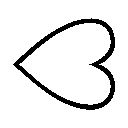

| 魔弾の王と戦姫 8 (MF文庫J) | |
| 川口 士 | |
ＭＦ文庫Ｊ
魔弾の王と戦姫８
川口 士
口絵・本文イラスト●よし☆ヲ
序
気がついた。同時に、寒いと思った。歯の根があわずにがちがちと震える。
身体も震えている。背中を丸め、自分自身を抱きしめるようにして、まず寒さに耐えなければならなかった。身体が凍りついたとさえ思った。
気分が落ち着いてきたのは、たっぷり一千を数えられるぐらいの時間が過ぎたころ。夜の海の冷たさにくらべればはるかにましな、なまあたたかい空気が熱を与えてくれたのだろう。若者はようやく身体を起こした。
視界は真っ暗で、何も見えない。ひとまず握りしめていた弓をそばにおいて、海水に濡れそぼった冷たい服を脱ぐ。ズボンと下着も脱いで、絞った。いまひとつ力が入らなかったので、思うようにはいかなかったが。
頭に痛みを覚えて触れると、傷らしきものがあった。ぬるりとした感触はないが、髪も湿っている。傷口に触れた手の匂いを嗅いで、血は止まっているらしいと判断した。
裸のままでいるのも落ち着かないので、まだ湿っていて冷たいままの服を仕方なく身につける。それから若者は、自分が硬い床の上に立っていることを認識した。
「......ここはどこだ？」
間の抜けた問いかけだが、本人はいたって真剣だ。若者の名はティグルヴルムド＝ヴォルン。親しい者には名前を縮めてティグルと呼ばれている。くすんだ赤い髪をかきまわして、ティグルは気を失う前の記憶を必死にたどった。
ティグルはブリューヌ王国の貴族だが、さまざまな事情から現在はジスタート王国の客将という立場にある。そのジスタートの使者として、先日までアスヴァール王国にいた。
アスヴァールを船で発ち、あと数日でジスタートに帰還するというところで船が魔物に襲われた。魔物との戦いの中でティグルは海に落ち、気を失ったのだった。
そこまで思いだし、ティグルはさきほどの疑問をもう一度つぶやく。
ここはどこだ、と。
同じ船に乗っていたソフィーことソフィーヤ＝オベルタスやオルガ＝タム、マトヴェイらが助けてくれたとは考えにくい。彼女たちならば、もっとまともな手当てをしてくれるはずだからだ。
着替えもさせず、毛布の一枚もかけず、ずぶ濡れのまま放っておくはずがない。
つまり、自分を夜の海から助けてくれたのは別の何かだ。
ティグルは足元に置いていた弓を拾いあげた。家宝の弓だが、何か得体の知れない力が備わっていることをティグルはほんの一年ほど前に知った。その力は、若者をたびたび窮地から救ってくれたものだ。
ぐるりとまわりを見回すと、十数歩先に明かりが見えた。ティグルはよろめきながらそこまで歩いていく。まだ足に力が入らない。
明かりの正体が見えたとき、ティグルはおもわず眉をひそめていた。
そこは三方を壁に囲まれており、天井と床からそれぞれ短い石柱のようなものが何本も伸びている。石柱はどれもティグルの膝ぐらいまでしかなく、表面は岩を削りだしたかのようにごつごつしていた。
石柱のほとんどは真っ黒だったが、それ以外のいくつかは白い光に包まれている。明かりの正体はこれだ。
『ひさしぶりね』
どこからともなく女性の声が響いた。ティグルは弓を強く握りしめ、警戒の視線を巡らせる。だが、声の主は姿を見せない。いや、とティグルは考えた。あるいは、この闇に包まれた空間そのものが、声の主なのかもしれない。闇に向かって呼びかける。
「俺を助けてくれたのは、あなただな？」
『そうよ』
声の主は肯定した。
「......まずは、助けてくれたことに礼を言う」
ありがとうと闇に向かってティグルは律儀に頭を下げる。
「どうして助けてくれたんだ？」
『前に言ったでしょう。〝闇の深い夜に、数多の躯の上で〟。その条件がそろっていたから、ちょっと手を差し伸べただけ。──休眠期のあの子は気づかないだろうしね』
言葉の後半はぼそぼそという感じでよく聞き取れなかった。
──そういえば、以前そんなことを言われたような気がする。
一年近く前のことだ。あのときは他にも驚くようなことがあったので、すっかり忘れていた。
『忘れていたわね』
「そんなことは......。いや、その、申し訳ない」
いたずらめいた声で図星を指され、反射的に否定しかけたものの、ティグルは首を振って素直に謝った。くすくすと忍び笑いが闇の中から聞こえる。気を取り直してティグルは尋ねた。
「ところで、ここはどこなんだ？ 俺の乗っていた船はどうなった？」
『ひとつめについては教えてあげない。ふたつめについては知らない』
素直な返答ではあった。ティグルはため息をつくと、再び質問を投げかける。
「ふたつめの、知らないというのはどういう意味だ？」
『私はあなたを助けてあげただけ。それ以外に興味がないの』
「あの場所に戻してもらうことはできないのか？」
『夜の海に？』
恐怖と冷たさが脳裏によみがえり、ティグルの身体が勝手に震えた。今度こそ死んでしまう。しかしいつまでも、このようなところにいるわけにはいかない。懇願した。
「海以外にできないか？」
『どこに？』
短い問いかけに、ティグルは虚を突かれた顔になる。自分はどこに戻りたいのか。
アルサスか。ライトメリッツか。ブリューヌか。ジスタートなのか。
生まれ育った故郷ののどかな風景と、白銀の髪の娘の笑顔が同時に脳裏をよぎった。どちらも、若者にとってはかけがえのないものだ。それから、大切なひとたちの顔が頭の中に浮かんだ。
『そうそう。海に面したところの方が、たぶんいいわよ』
海に落ちたところを助けてもらったからだろうか。すこし考えたあとティグルは希望を告げた。
「──ジスタートへ」
いまはここだ。自分がいま置かれている立場は、愛する故郷に戻ることを許さない。
『それじゃあ送ってあげる』
声の主は笑って、つけくわえた。
『ただ、ジスタートのどこかは私にも決められないわ』
その言葉の意味を理解する前に、ティグルの意識は急速に遠のいていった。
１ オルシーナ
冴え冴えとした秋の月が、夜の海に浮かぶ船の群れを静かに照らしている。
レグニーツァの軍船だ。『槍』と呼ばれる細身のガレー船が三十一隻と『弩』と呼ばれる大型のガレー船が三隻で構成されている。どの船も、火を灯した大きなランタンを船首と船尾に吊り下げていた。この明かりによって他の船との距離を測るのだ。
ジスタート王国に迫る海賊たちの討伐が、彼らの目的だった。
この船団の旗艦『鉄獅子』号の船首で、いま、ひとりの娘が一匹の怪物と対峙している。
今年で二十二歳。艶やかな黒髪を肩のあたりで切りそろえ、黒を基調とした軍装にほっそりとした身体を包んでいた。
その美しい面立ちや身体つきにもかかわらず可憐で華奢な印象を与えないのは、左右の手に握られた二本の小剣の存在と、黒い瞳を彩る戦意によるものだろう。
アレクサンドラ＝アルシャーヴィンというのが彼女の名だ。親しい者にはサーシャという愛称で呼ばれている。この船団の総指揮官であり、ジスタートに七人いる戦姫のひとりだった。
サーシャの手にある剣はそれぞれ金色と朱色の刀身を持ち、紅蓮の炎をまとっている。何かを燃やしているのではない。刀身それ自体が炎を発しているのだ。
不可思議な力を備えたこの二振りの刃こそ、サーシャの竜具である煌炎バルグレンだった。『討鬼の双刃』とも呼ばれている。
彼女の目の前にいる怪物は、薄ら笑いを浮かべて黒衣の戦姫を見下ろしていた。その巨躯はサーシャの倍以上あり、肩や胸板は大きく盛りあがって、人間など片手で握りつぶせるのではと思わせるほどにたくましい。右肩から右胸にかけて、凄惨な傷跡がある。
体毛はなく、白い皮膚には不気味な質感があった。額からねじくれた角が三本生えており、おとぎ話に出てくる鬼を連想させる凶悪な顔の右半分は焼けただれている。
怪物の右腕は、肘のあたりで切断されていた。肘から先の部分は、白い肉塊となって甲板に転がっている。
怪物はトルバランと名のった。サーシャはこのような魔物の噂を耳にしたことはあったが、実際に目にするのははじめてだ。
だが、サーシャは怯んだりしなかった。双剣をかまえて慎重に間合いを詰める。怪物の顔と肩の傷はすでにあったものだが、たったいまトルバランの右腕を斬り落としたのは彼女だ。刃の通じる相手である以上、臆することはない。
──どう攻めてくる......？
これまでの攻防でわかっているのは、トルバランが驚くべき怪力を誇り、また全身から不可視の衝撃波を放つことだ。しかし、怪物である以上それだけとはかぎらない。他にどのような攻撃手段を持っているか、さすがにサーシャも予測できなかった。
──オルガは、何か言っていたかな。
この魔物と戦ったという戦姫オルガの話をサーシャは思いだそうとしたが、衝撃波を放つということ以外の情報が記憶から出てこない。厳しい状況だった。
「見事な腕前だ」
トルバランは甲板に転がっている己の腕を拾いあげる。切断面は刃の炎によって黒く焼け焦げていたが、怪物は無造作な手つきで傷口に押し当てた。
切り口から白い煙が立ち昇る。訝しげな顔をするサーシャの視線の先で、トルバランは手を離した。
腕は、落ちない。切り離されていたはずの魔物の右腕は、そんなことなどなかったかのように接合を果たしている。これにはサーシャも唖然とした。治りが早いなどという次元ではない。
──これは......首を斬り落としても、死なないかもしれない。
黒髪の戦姫のこめかみを、一筋の冷たい汗が流れた。トルバランは具合をたしかめるように右腕を振っている。
緊迫した空気がその濃さを増していく中、不意に、夜気に乗ってざわめきが彼女の耳へと届いた。離れたところにいくつもの明かりが現れ、不規則に揺れながらこちらへ近づいてくる。
兵と船乗りたちだとサーシャにはすぐにわかった。トルバランが衝撃波で船縁や舳先を破壊した際の音を聞きつけて、様子を見に来たのだろう。
サーシャの顔に焦りがにじんだ。旗艦に乗っているだけあって兵は精鋭ぞろいだが、相手は人外の怪物だ。竜に立ち向かうのと変わらない。
危険を承知で前に出ようとしたときだった。
「──ここは退くか」
意外すぎる台詞が怪物の口から漏れる。トルバランは近づいてくる松明の群れを楽しそうに眺めながら、一歩後退した。サーシャは眉をひそめて、双剣のかまえを守りに切り替える。罠かもしれない。警戒を解くことはできなかった。
重く鈍い衝撃に甲板が揺れる。トルバランが蹴って跳躍したのだ。
だが、それは攻撃のための行動ではなかった。怪物の巨躯は船縁を越えて、夜の海へと落下する。いくばくかの間を置いて大きな水音が聞こえた。
──まさか、本当に逃げたのか......？
それとも、そう思わせてこちらを誘っているのか。
船縁まで駆けだそうとして、サーシャは動きを止める。身じろぎもせず暗闇をまっすぐ見つめた。そのまま十を数えるほどの時間が経過する。
──やわらいだか。
サーシャは小さく息を吐いた。彼女の足を止めたのは怪物に対する警戒心ではなく、体内で発生した痛みだ。激痛というほどではなく、わずかに行動を鈍らせるていどのものだが、この状況では無視できなかった。
炎の燃えさかる松明を手に集まってきた兵と船乗りたちは、周囲の惨状を目にして呆然と立ち尽くす。サーシャの姿を発見すると我に返り、血相を変えて駆け寄ってきた。
「戦姫さま、ご無事ですか！」
「......だいじょうぶだよ。僕のことは心配いらない」
サーシャの返答は一瞬遅れたが、慌ただしい雰囲気の中でそのことに気づいた者はいない。炎の消えた双剣を腰に収めながら、黒髪の戦姫は続けた。
「何かが襲いかかってきたんだ。斬ったら逃げていった。暗かったからよくわからないけど、海竜かもしれない」
トルバランのことを話しても必要以上に怯えさせるだけだと考え、事実に嘘を織り交ぜてサーシャは部下たちに説明する。
アスヴァールから帰還中の船団が海竜に襲われたという話は、この船に乗っている誰もが知っている。怪物よりもよほど納得しやすいはずだった。
「海に落ちた者がいるかもしれない。船のまわりだけでいいから捜索してくれ」
「かしこまりました。戦姫さまは船室にて報告をお待ちください」
うやうやしく一礼したのは、この鉄獅子号の船長だ。船乗りとしても戦士としても優秀な男で、だからこそ彼が船長を務めるこの船を、サーシャは旗艦に選んだのだ。
船長の申し出に、しかしサーシャは頭を振った。
「捜索が一段落するまではここにいる。海竜がまた姿を現したら、僕が仕留めるから」
船員たちは顔を見合わせたが、たしかに黒髪の戦姫以外の誰であっても海竜には太刀打ちできないだろう。
「戦姫さま、これを」
船員たちの間からマトヴェイが進み出て、サーシャに毛布を差しだす。まわりの船乗りたちと比べても抜きんでた大柄な身体の持ち主で、強面と、白イルカを背に縫いこんでいる真紅の上着が特徴的な男だ。元船乗りである。
彼もまたサーシャの信頼が厚く、この戦いには自ら願い出て船に乗りこんだのだった。
「ありがとう」
腰に差している竜具のためにサーシャはそれほど寒さを感じないのだが、マトヴェイの心遣いに感謝し、礼を言って毛布を受け取った。それを羽織った黒髪の戦姫は、船員たちの作業を見守りながら思考を巡らせる。あの怪物の目的は何だったのか。
「マトヴェイ。君に聞きたいことがある」
ささやくような声でサーシャは強面の巨漢を呼ぶと、船長に視線で合図を送り、さりげない足取りでその場から離れる。まわりでは船員たちが慌ただしく動きまわっており、ふたりの姿が消えたことに気づいた者はほとんどいなかった。
船員のほとんどが船首での作業に駆り出されたこともあって、船尾まで来るとさすがに人気は少ない。サーシャは足を止めて振り返ると、単刀直入に聞いた。
「海竜に乗って君たちを襲ったという怪物について、話してもらえないか」
その言葉にマトヴェイの表情が一変する。出かかった大声をとっさに呑みこみ、激しい感情を押し殺した低い声で元船乗りは確認した。
「やつが出たのですか？」
「おそらく。見たのは、はじめてなんだ」
その答えに納得すると、マトヴェイは自分の見た怪物の姿について、あらためて説明する。それを聞いて間違いないとサーシャは確信した。
「あいつが、この近くに......」
マトヴェイが巨体を震わせて夜の海を睨みつける。怒りと恐怖の混在した感情が、男の瞳の中で揺れていた。彼が落ち着くのを待って、サーシャは口を開く。
「このことは誰にも言わずにおいてくれ。海賊との戦いを控えているのに、兵や船乗りたちを動揺させたくない」
「ですが、戦姫さま。あるいはトルバランが海賊たちを率いている可能性は......」
「あの怪物が？」
サーシャは首をかしげたが、すぐにオルガたちの話を思いだした。トルバランはレスターという人間に化けてアスヴァール王国に潜伏し、兵を従えて城砦を守備していたのだ。
すこし考えたのち、サーシャは首を横に振って言った。
「黙っておこう。各船の船長たちに説明するとしても、信じさせるに足るものがない。ただ、そうだね......。たとえば、旗艦が黄色の旗を掲げたら急いで後退するとか、そういう特殊な状況での指示は決めておく」
「承知しました」
マトヴェイは安堵の息をついてうなずいた。これなら海竜が出た場合というような、わかりやすいたとえで説明できる。
ふたりが船首に戻ると、作業が終わりに近づいているのか船員たちの数は少なくなり、騒ぎもおさまってきていた。船長がサーシャたちを見つけて歩いてくる。
「戦姫さま。申し訳ありませんが、旗艦を代えましょう」
「そんなに損傷がひどいのか？」
サーシャは眉をひそめた。船長は無念さを隠しきれない沈痛な面持ちでうなずく。これだけの規模の船団の旗艦を務めるのは、船乗りにとってたいへん名誉なことだ。しかも総指揮官は戦姫サーシャなのである。よほど考え抜いた末の、苦渋の決断に違いなかった。
「航行にも戦闘にも耐えられますが、一晩で修復するのはさすがに不可能です。このような状態の船を戦姫さまの旗艦として使い続けるのは、我々の恥となります」
言葉にはしない船長の内心を、黒髪の戦姫は察した。サーシャたちは明日、ルヴーシュの船団と合流する予定になっている。破損した船に乗っている主の姿を、ルヴーシュの者たちに見せたくないのだろう。苦笑を浮かべて、サーシャはわかったと答えた。
「それでは、どの船を新たな旗艦とするべきか、君の意見を聞かせてくれ」
鉄獅子号は『弩』型のガレー船で、同じ型の船はあと二隻ある。
船長が推薦したのは『甲冑魚』号という名の船だ。甲冑魚号の船長はパーヴェルという男で、かつては鉄獅子号の船長の部下だったという。
己の船を旗艦にするという命令を聞いたパーヴェルは喜ぶよりも先にまず驚き、次いで事情を知ると、過去の上司の無念さを思って深いため息をついた。だが、すぐに真剣な表情になり、船員たちに指示してサーシャを迎えに現れる。
鉄獅子号の船長からあらためて話を聞き、なぐさめるように彼の肩を叩いたあと、パーヴェルはサーシャの前へと進みでた。
「我が船を旗艦にお選び下さったこと、心より感謝いたします。非才の身ではありますが、戦姫さまのために微力を尽くしましょう」
パーヴェルは現在四十五歳。平均よりも背は低く太り気味で、大量の鉄片を鱗状に縫いつけた革鎧を着こんでいる。彼がサーシャに一礼すると、鎧に縫いつけた鉄片同士が擦れあって音を立てた。礼儀作法は雑だが、その表情と口調には真摯さがある。
「急な話ですまないが、よろしく頼む」
そうしてサーシャが新たな旗艦に移っている間に、捜索は終わった。
船乗りが三名ほど行方不明であることはわかったものの、懸命の捜索にもかかわらず死体さえ発見されなかった。
翌日、サーシャは予定通りルヴーシュの船団と合流した。
◎
空は青く晴れ渡り、燦然と輝く太陽の下、海は碧玉を溶かしたかのような鮮やかさでどこまでも広がっている。その海の向こうからルヴーシュの船団は姿を現した。
ルヴーシュの軍船もまた、レグニーツァと同じく細身のガレー船と大型のガレー船の二種類で構成されている。細部は違うものの、性能にそれほど変わりはない。
ルヴーシュ軍の旗艦は細身のガレー船で『マルガリータ』号という。動物の名をつけることが多いレグニーツァと違い、ルヴーシュではもっぱら船に女性の名をつける。
帆柱高くひるがえっているのはジスタート王国の軍旗である黒竜旗と、ルヴーシュの大軍旗だ。遠目にも鮮やかな紫地に、彼女の竜具『砕禍の閃霆』ヴァリツァイフを意匠化した金色の鞭が見事な曲線を描いている。
総指揮官は『雷渦の閃姫』の異名をとるエリザヴェータ＝フォミナ。生まれつき左右の瞳の色が違う『異彩虹瞳』の戦姫は、その日も紫を基調としてフリルやレースをふんだんに用いた華やかなドレスをまとって現れた。
腰には黒い鞭──ヴァリツァイフを丸く束ねて提げており、紅の髪とドレスの裾をなびかせて、彼女はマルガリータ号の船首に立っている。
堂々たる態度とその美貌は、ルヴーシュにいい印象を抱いていないレグニーツァの兵たちでさえ、感嘆のため息を漏らすほどだった。ルヴーシュ軍はレグニーツァ軍にぶつからないよう後退し、マルガリータ号のみが前進する。
甲冑魚号は、旗艦であることを示すレグニーツァの大軍旗を振って位置を知らせた。
黄地に金色と朱色の刃がななめに交差したもので、こちらもルヴーシュに劣らず目を惹く意匠だ。
マルガリータ号の甲板にはルヴーシュ兵と船乗りたちが整列し、挑むような目つきをレグニーツァ軍に送っている。
対するレグニーツァ軍も負けてはいない。兵と船乗りたちはやはり甲板に並んで、相手の視線を受け止め、睨み返した。両者とも「あくまで今回だけ仲間」という意識である。サーシャとしては苦笑するしかないというところだった。
マルガリータ号が甲冑魚号に接舷する。エリザヴェータはふたりの船長を伴って乗り移ってきた。もともと今日の軍議では、サーシャがエリザヴェータの旗艦へ出向くつもりだった。しかし、異彩虹瞳の戦姫はそれを断り、ここまで足を運んだのである。
サーシャの体調を慮ったのか、それともレグニーツァの兵を自軍に招き入れることを嫌ったのかはわからない。あるいはその両方かもしれなかった。
サーシャは前へ進み出て、歓迎するように手を差し出す。
「いらっしゃい。わざわざ来てくれてありがとう」
だが、エリザヴェータはその手をとらなかった。胸を張り、腕組みをしてサーシャの後ろに立つレグニーツァ兵たちを睥睨すると、興味のなさそうな表情で口を開く。
「時間が惜しいわ。さっさとはじめましょう」
軍議は、甲冑魚号の船室で行われた。サーシャとエリザヴェータの他に男が四人。ルヴーシュ側の船長がふたりと、レグニーツァ側の船長がひとり。そしてマトヴェイだ。
床に固定された大きな作業台の上に、何枚もの海図やいくつもの駒が置かれる。六人は作業台を囲んでそれらを見下ろした。エリザヴェータが言う。
「私たちの船は三十一隻。大型船が五隻、小型船が二十六隻になりますわ」
「こちらは三十四隻。大型船が三隻、小型船は三十一隻だ」
敵の数は約八十。わかってはいたことだが、両軍を合計しても海賊より少ない。
海の戦いは、陸の戦い以上に数がものをいうといわれている。戦場が広大なことに加えて敵味方の船の性能に大きな違いがなく、攻撃方法もかぎられているからだ。
「敵の動きについてだけど......こちらの偵察船が昨日、十隻前後の海賊船を発見した」
サーシャの言葉を受けて、レグニーツァ軍の船長が海図の上に駒を置く。エリザヴェータは色の異なる瞳を自軍の船長たちに向けた。
「我々の出した偵察船も、昨日の昼過ぎに敵を発見している。同じく十隻ほどで、偵察船に気づくと西へ逃げていったそうだ」
海図の上に新たな駒が置かれる。船長たちは短く唸った。このふたつだけではまだ敵の位置を絞りこめない。エリザヴェータは腕を組んで、挑発的な視線をサーシャに向ける。
「アレクサンドラ。あなたの見解を聞かせてもらえるかしら」
「彼らはジスタートを目指しつつ、僕たちの位置と数をさぐっている」
紅の髪の戦姫の視線をやわらかな物腰で受け止めてサーシャは答えた。
「海賊の船の数を八十としよう。十隻で一隊として八隊にわかれ、あらかじめ合流する場所を決めた上で、それぞれ異なる角度で進んでいると思う。こちらの偵察船が発見した敵と、そちらが見つけた敵はおそらく別のものだ」
感心したようにマトヴェイがうなずく。
「なるほど。言われてみれば、八十隻の大軍では行動も停泊も一苦労ですが、十隻ていどなら、そのへんの小島に停泊することも楽ですな」
ジスタートからアスヴァールの間に広がる海には無数の小さな島があり、いくつかは海賊たちの隠れ家として使われてきた。ジスタートだけでなくブリューヌやアスヴァール等の国も、一度ならずそうした小島に軍船を差し向けて海賊を掃討したことがある。
しかし、一年か二年が過ぎるとその島には新たな海賊が住み着くのだ。
島をひとつひとつ管理するには人手と金銭がいくらあっても足りず、その都度対応するしかないのが実情だった。
「連中が小島に引きこもる可能性はないかしら？」
海図を見つめてエリザヴェータが疑問を投げかける。サーシャは首を横に振った。
「彼らに、冬を越せるだけの食糧があるとは思えない」
冬の海は冷気を帯びた風が絶え間なく吹き荒れ、波も激しさを増す。転覆に加えて凍死の危険性もあるので、商船ですら冬に出港することはまずない。海賊にとっては獲物がいなくなるということであり、手持ちの食糧が尽きればあとは飢える一方だ。
「戦姫殿。あなたの仰ったように、海賊どもが十隻ずつにわかれて進んでいるとしよう。やつらが我々をやり過ごし、まっすぐ大陸を目指すということは考えられないだろうか」
ルヴーシュの船長のひとりが慎重な口ぶりでサーシャに尋ねる。
「風に恵まれれば、そうするかもしれないね」
サーシャの返答は、相手の立場に配慮してのものだった。その必要を感じなければ、ありえないと一刀両断していただろう。
「ただ、その場合、彼らは大軍という利点を捨てることになる。さらに、反転して彼らを追う僕たちに対して側面と背後をさらしてしまう。港町も、敵の数が十隻ていどならば持ち堪えられるだろう。こちらは各個撃破しながら進めばいい」
ルヴーシュの船長は大きな身体を揺らして唸り、エリザヴェータが横から口を挟んだ。
「海賊はまず私たちを打ち破り、その余勢を駆って港町を襲う。あなたはそう考えているわけね。数に劣る側としてはどう戦うつもり？」
「そうだね。君の案から聞こうか」
サーシャはやや意地の悪い微笑をエリザヴェータに向ける。エリザヴェータは不機嫌そうに目を細めたが、胸を張って応じた。
「敵を分断して各個撃破。敵の多数をかわす、もしくは突破して旗艦を狙う。この状況ではその二択でしょう？ 私は敵の旗艦を狙う手で動きたいですわ」
「じゃあ、こうしようか。陣容は中央、右翼、左翼、それから後方の予備兵力で構成されるものとして......」
サーシャはいくつかの駒を手に取って海図の上に並べる。
「レグニーツァが中央と左翼を受け持つ。右翼と後方はルヴーシュに担当してもらう。ここから先は敵の出方次第だけど、敵の右翼が薄い場合はレグニーツァが一丸となって敵右翼を攻撃し、突き崩す。敵の左翼が薄い場合はルヴーシュがそうする」
「......一丸となって、と言いましたけれど、レグニーツァが動く場合は中央も左翼も一塊となって動くということですの？」
ふたつの色の瞳に意外さと警戒の色をそれぞれ宿して、エリザヴェータが訊いた。サーシャは穏やかな表情をまったく変えずに応じる。
「そう。ルヴーシュが攻める場合は、もちろんレグニーツァが敵の攻勢を支える」
ひとつ間違えれば、敵に各個撃破の機会を与えかねない。落ち着いたサーシャの物腰からは想像し難い苛烈な手であり、他の船長たちは緊張と驚嘆のあまり声も出なかった。動じていないのはエリザヴェータぐらいだ。
「敵の右翼、左翼とも同じていどの厚みを持っている場合は？」
「ルヴーシュに攻めてもらう。僕たちの方が、長く支えられるからね」
「私たちが動いた場合、後方の予備兵力がなくなりますわよ？」
予備兵力は本来、どうしても戦力が必要になった局面で投入するための部隊だ。
「こちらは敵より少ない。多少の我慢は必要だよ」
さらりとサーシャは答え、エリザヴェータは満足そうな微笑を浮かべる。
「病み上がりと聞いていましたが、よけいな心配はしなくてよさそうですわね」
そのあとは攻撃の合図などの細かい打ち合わせに移った。それらを四半刻ほどで終え、船室を出ようとしたエリザヴェータたちをサーシャは呼び止める。
「エリザヴェータ。君に話がある」
紅の髪の戦姫は怪訝そうな顔で振り返ったものの、サーシャの表情が真剣なものであることを見て取ると、ふたりの船長に外で待つようにと言った。サーシャも自軍の船長に視線で合図を送り、外で待機してもらう。
室内にいるのはサーシャとエリザヴェータ、そしてマトヴェイの三人だけとなった。軍議のときよりも緊迫感の漂う室内の空気に、エリザヴェータは若干の戸惑いを覚える。
「これは真面目な話なんだけど」と前置きをしてサーシャが言った。
「魔物を見たことは、ある？」
たっぷり一呼吸分の沈黙が船室を支配する。
「はあ？」
それを破ったのは、呆れていることを隠そうともしないエリザヴェータの反応だった。サーシャとマトヴェイは顔を見合わせ、無理もないという表情になる。だが、これで話を終わらせるわけにはいかない。
「これは、君を驚かそうとか騙そうというものじゃない。そう聞こえてしまうのは仕方のないことだけれど、本当の話なんだ」
サーシャは隣にいるマトヴェイに目配せをした。このために、軍議のときから彼にいてもらったのだ。
マトヴェイは、アスヴァールから帰還しようとしていた船がトルバランと海竜に襲われた一件について、感情的にならないよう気をつけながら語る。ティグルが海に落ちたことと行方知れずだったオルガの消息を、エリザヴェータはこのときはじめて知った。
「へえ。オルガが帰ってきましたの」
エリザヴェータは蔑むような笑みを浮かべる。どのような理由があったのかは知らないが、己のやるべきことから逃げだしたとしか見えないオルガは、エリザヴェータにとって軽蔑の対象だった。
マトヴェイは眉をひそめたものの、反論は控える。ここでオルガの人柄について語っても、意味のないことはわかっていた。
「でも、アレクサンドラ。先日あなたからいただいた手紙には、海竜のことしか書かれていなかったと思うのだけれど？」
「それについてはすまない。そのときは僕自身、魔物の存在について半信半疑だった。ソフィー......ソフィーヤがそんな嘘を言うはずはないとわかっていてもね。そのあと関わってくるとも思っていなかったんだ」
サーシャは素直に非を認め、頭を下げる。エリザヴェータは不審げに目を細めたが、それは黒髪の戦姫の態度にではなく、台詞の内容に対してだった。
「関わってくるとはどういう意味ですの？」
「昨日の夜、僕の船が襲われた」
目を瞠るエリザヴェータに、サーシャは淡々とした口調で昨夜、鉄獅子号の船首でトルバランと遭遇したときのことを話す。怪物の姿やその超常的な能力についても。
「トルバランは人間に化けて、アスヴァール王国に潜んでいた。城砦の守備を任されて、三千の兵を指揮するだけの能力は持っていたらしい。海賊たちを統率しているのがトルバランだという可能性は小さくない」
「......あなたの船を襲ったこと以外に、根拠はありますの？」
「八十隻という船の数から、海賊たちの数は万を楽に超えると推測できる。それだけの人数をまとめあげ、アスヴァールでもブリューヌでもなく、このジスタートへ向かわせる。そうとうな力量が要求されると思わないか」
エリザヴェータは視線を作業台に落として、サーシャの言葉を検証するかのように黙りこむ。やがて、ぽつりと聞いた。
「その怪物の目的は？」
「わからない。ソフィーヤやオルガの話だと、戦姫について何か知っているようだけど。とにかくこの戦いでは、トルバランがどこからか現れて襲いかかってくるかもしれないということを、覚えておいてほしいんだ」
「ご忠告、ありがたく受け取っておきますわ。──話はこれで終わりですの？」
サーシャがうなずくと、エリザヴェータはドレスの裾をひるがえして背を向ける。彼女を送りだそうとマトヴェイが動いたが、それより早く彼女は自分で扉を開けた。
「では、また明日にでも」
そう言って歩き去っていく。マトヴェイは呆れたような顔をして、サーシャは苦笑を浮かべてエリザヴェータを見送った。
「だいじょうぶですかな」
「言うべきことは言った。あとは期待するしかないね」
サーシャの声音は乾いている。彼女はエリザヴェータを嫌ってはいないものの、あてにするほどの信頼を抱いてもいなかった。
◎
レグニーツァ、ルヴーシュの船団が集まっている海域から西へ一日半ほど海を進んだところに、オルシーナ島はある。
名前の由来はわからない。はるか昔からそう呼ばれているので、おそらく発見した者の名前ではないかと言われている。岩だらけの何もない無人島で、たまに近くを通りかかった商船が、休息したり、風雨を避けたりするために停泊するぐらいだ。
その無人島にはいま、実に八十隻もの船が停泊していた。たたまれている帆は真っ黒に塗られ、船首にはおどろおどろしい巨大な目が描かれている。
すべて海賊船だ。アスヴァールから海を渡ってきた、トルバラン率いる一団である。彼らはサーシャの予測した通り、十隻ずつにわかれて敵の動きをさぐりながら進んでいたのだが、統率者たるトルバランの命令でこの島に集まったのだった。
トルバランは島の中央に各分隊の船長を呼んで、軍議を開いていた。正体は隠し、アスヴァールに潜んでいたときと同じレスターという人間として通している。
トルバランは部下に運ばせた木製の椅子に座っているが、船長たちは地面に腰を下ろしていた。王とその臣下たちのような光景だ。
「人数は？」
トルバランが問いかけ、船長たちは順番に答える。海賊たちの数は、アスヴァールを発ったときにくらべて三百人近く減っていた。怪我の悪化や航海中の事故で死んだ者もいれば、逃げだした者もいる。トルバランにとってこの結果は予想の範囲内だ。
「武器と食糧、水は？」
冬の気配を漂わせる冷たい風に身体を震わせながら、海賊たちは答えた。武器は充分にあり、食糧と水もあと二日分は確保できていると。
トルバランは満足げにうなずくと、楽しそうな笑顔と声音で告げた。
「明後日の早朝にこの島を出て、ジスタート軍と一戦まじえる」
船長たちの間に緊張と戦慄の波が走る。彼らはいずれも歴戦の海賊だったが、正面から一国の軍と、しかもこれほどの規模で戦ったことなどない。商船やその護衛船に奇襲をかけ、奪い、焼くのが彼らのやり方だった。
「敵はおよそ六十隻。思った通りこちらより少ない。この六十隻さえ破れば、沿岸に並ぶ港町まで我々を遮るものはない。存分に襲い、奪い、焼けばよい」
何人かの海賊が顔に冷や汗をにじませる。ほがらかなトルバランの声が、彼らには深い闇へと誘うおとぎ話の怪物のそれに聞こえたのだ。
そのおとぎ話では、誘いこまれた者は闇の中で視覚を奪われ、次いで嗅覚と聴覚も奪われ、もはや前へ進んでいるのか引き返しているのかもわからないまま全身の感覚が鈍っていき、闇の中に潜む怪物に貪り食われてしまう。
海賊たちの想像は、ある意味で正しかった。彼らの前に座っている者は人間ではないのだから。だが、そのことに気づいた者はいなかった。
「──ゲルハルト。モリッツ。アルバート」
トルバランの前に座っている船長たちの中から、名を呼ばれた三人が立ち上がる。
ゲルハルトは赤い髪と髭で顔の半分近くを覆った大男だ。筋骨隆々とした肉体の持ち主で、両刃の戦斧と腰に差した短剣を武器としている。
モリッツは、ゲルハルトとは対照的なほどに背の低い、小柄な男だ。金色の髪は短く、髭はない。この男の武器は、腰に吊るした二本の短剣だった。
アルバートは陰気な顔つきで、普段から口数も少ない。だが、一度戦いがはじまれば先頭を切って突撃するほど勇猛な男だ。足元に置かれている槍がこの男の武器である。
「ゲルハルトには後方、モリッツには左翼、アルバートには右翼を任せる」
トルバランが八十隻の船を八つの分隊にわけたのは、広範囲で偵察を行うというだけでなく、各隊の船長らの技量を見極める目的もあった。この三人は、その選別に合格したのである。戦士としても、船長としても充分な力量を備えた三人だった。
「明日の晩まで休んで英気を養え。酒も水も好きなだけ飲ませ、腹いっぱい食べさせてやるように」
トルバランの指示に、船長たちは感謝を示すようにいっせいに頭を下げる。だが、地面を見つめる彼らの顔に喜びはなく、畏怖混じりの諦めがにじんでいた。
総指揮官の意図が味方の士気を高めるためだけではなく、食糧と水に余裕を持たせないようにして退路を断つつもりであることを、彼らは正確に察知していたのである。
そして、もはや彼に従う以外の選択肢がないことも船長たちはわかっていたのだった。
◎
レグニーツァ、ルヴーシュ連合軍の偵察船が、オルシーナ島に停泊している八十隻の海賊船を発見したのは翌日の昼過ぎである。
報告を受けたサーシャとエリザヴェータは、兵と船員たちを交代で休ませるため通常の半分以下の速度でオルシーナ島へ向かった。敵の位置がわかっている以上、ことさらに急ぐ必要はない。また、レグニーツァ軍には速度を落とすもうひとつの理由があった。
この日、サーシャは朝から熱を出して、ベッドに横になったままだったのだ。意識がしっかりしていることと、わずかながらでも食事をとったことが、旗艦に同乗していた医師や船長のパーヴェル、側仕えのマトヴェイを安堵させた。
「戦場に向かいながら申しあげることではありませんが、どうか気持ちを落ち着かせて、ゆっくりお身体を休めてください」
白い髭を長く伸ばした老医師は微笑を浮かべたが、その揺れる瞳からは、そんなことしか言えない自分を歯がゆく思っていることがうかがいしれた。医師の後ろにはマトヴェイとパーヴェルが並んで立ち、悲壮感に満ちた顔でサーシャを見下ろしている。
「戦姫さま。決してご無理はなさらぬよう。戦姫さまがこの船に乗り、我らと同じ戦場に在る。ただそれだけで兵たちは奮い立つのですから」
パーヴェルが慰めの言葉をかければ、マトヴェイも笑顔をつくって言った。
「何かあったときは、ルヴーシュの戦姫さまにお任せすることもできましょう。お気持ちはわかりますがご無理をなさいますな」
マトヴェイの言う何か、とはこの場合トルバランのことを指している。この甲冑魚号の船長であるパーヴェルにすら明かしていないため、ぼかしたのだった。
「うん。ありがとう」
そう答えるサーシャの額には汗がにじみ、黒髪が数本張りついていた。老医師が清潔な手拭でそっと汗をぬぐう。
サーシャを医師に任せて、パーヴェルとマトヴェイは部屋を出た。顔を見合わせる。
「このこと、兵たちは知っているのか？」
マトヴェイに聞かれて、パーヴェルは首を横に振った。
「だが、リプナの港町を発ってから、戦姫さまは可能なかぎりご自分の姿が兵の目に留まるよう振る舞っておられた。勘のいい者は気づくやもしれん」
「今日いっぱいは軍議などで隠し通せんかな。敵の動きやこちらとの距離を考えると、明日には戦だ。そう説明すれば、疑いはすまい」
「それにしても、こうなると連合軍というのは面倒だな。急に止まることもできん」
パーヴェルが苛立たしげに身体を揺すると、着こんでいる鎧の鱗が擦れあって奇妙な音を響かせる。ふたりとも、サーシャには体調が万全になるまで休んでほしかったが、そんなことを言っていられない状況に腹が立って仕方がなかった。
翌日の早朝、海賊たちはついにオルシーナ島を出た。
まだ朝の白い光が届かない西の空を背に、黒々とした船影が現れる。最初はたった一隻に見えたそれは瞬く間に二隻、四隻と増えていき、紺碧の海に広がっていった。
オルシーナ島付近にいた偵察船はただちにレグニーツァ、ルヴーシュ連合軍のもとへ帰還する。このとき、連合軍はオルシーナ島から南東へ十ベルスタ（約十キロ）ほどの海域にいた。兵も船乗りも、いつでも動ける状態にある。
「──出発だ」
甲冑魚号の船首に立って、サーシャは静かに告げた。熱は幸いにも一晩で治まり、泰然とした態度で甲板上にいる。その姿に兵と船員たちの士気は高まり、明け方の寒気を吹き払う勢いで作業に努めた。マトヴェイとパーヴェルも安堵に胸を撫で下ろす。
ルヴーシュ軍においても、エリザヴェータがマルガリータ号の船首に堂々たる姿を見せていた。レグニーツァ軍に後れをとってはならぬと、三十一隻の船団は波を切って突き進む。
両軍がおたがいの姿を認めたのはそれからおよそ一刻が過ぎたころだ。まだ太陽はわずかしか上っておらず、都市や町で生活している者ならば朝食を食べ終えたかどうかという時間帯である。
空には薄く雲が広がって明るいとはいえず、風は吹く方向もその強さも不規則であてにできそうにない。連合軍も海賊もとうに帆をたたんで櫂のみの操船に切り替えていた。
彼我の距離は二ベルスタ（約二キロ）ほどだが、おたがいすぐに船を進ませて激突とはいかない。ひとつの海域に、両軍合わせて百五十近い船が浮かんでいるのだ。空と海の間に太鼓と角笛の音が響き渡り、陣容を整えるだけでも容易ではなかった。
大型のガレー船である甲冑魚号よりも速く動ける細身のマルガリータ号が、白波の軌跡を残しながら連合軍の船団の前を進んでいく。陣容の確認のためだが、兵たちへの激励の意味もあった。
マルガリータ号の船首に立っていたエリザヴェータは、甲冑魚号の前を通過しようとしたとき、ふと視線を巡らせる。甲冑魚号の船首に立っているサーシャと目が合った。
サーシャは微笑を浮かべると、腰の双剣を抜き放って高々と掲げる。つられて、エリザヴェータも丸く束ねていた黒い鞭を右手で握りしめ、拳を突き上げるように掲げた。それを目にした兵と船員たちの間から雄叫びにも似た歓声が沸き起こる。
甲冑魚号から離れたところで、エリザヴェータは右腕を下ろした。その顔が赤く染まっていたのは、冷たい潮風のせいばかりではない。
レグニーツァ、ルヴーシュ連合軍はほぼ予定通りの布陣となった。
中央の本隊と左翼はサーシャ率いるレグニーツァ軍が担当する。中央に二十隻、左翼に十四隻という振り分けだ。左翼を指揮するのはザウルという騎士で、海賊討伐の経験が豊富であり、戦場の一方面を任せられるだけの力量を持つ男だった。
右翼と後方はエリザヴェータ率いるルヴーシュ軍が受け持ち、こちらは右翼に二十隻、後方は十一隻となる。
海賊たちも、八十隻の船を配置し終える。トルバランの乗っている旗艦『悪鬼』号は帆柱に大きな旗を掲げていた。白地に赤い目を描いた不気味なものだ。
トルバランの指揮する中央の本隊は三十五隻。アルバートの右翼とモリッツの左翼はそれぞれ十隻、ゲルハルトの後方部隊が十五隻。そして、中央の本隊よりも前方に十隻の海賊船が配置されていた。
「敵を受け止めるのは我々ですか」
サーシャのそばに控えているマトヴェイが、緊張をにじませてつぶやく。
空に薄く広がっていた雲はその大きさと濃さを増し、灰色の塊が太陽を遮る。悪鬼号の甲板上で空を見上げていたトルバランは、にやりと笑った。
連合軍は太陽を背にしており、海賊たちは陽光を正面から浴びる格好となっていたのだが、陽射しに目を灼かれるという不利を、曇り空が消し去ってくれたのだ。太陽が真上に達するまでいかに時間稼ぎをするか考えていたのだが、その必要がなくなった。
「はじめるとしようか」
海賊船から太鼓と角笛の音が響き渡り、十隻の前衛が前進をはじめる。
この海域に名はない。ゆえに、近くにあったオルシーナ島の名が使われた。『オルシーナの海戦』もしくは単純に『オルシーナ』と呼ばれる戦いが、はじまったのだ。
風は強くないものの冷たく、紺碧の海には白波が目立ちはじめている。波の音や、漕ぎ手たちが数十もの巨大な櫂を操る音に、兵たちのざわめきや船員たちの怒号が入り混じって甲板上の喧騒はすさまじいことになっていた。
──寒くてもいいから強い風が吹いてくれれば。
空を見上げて、サーシャはそう思わずにはいられない。雲が吹き払われれば太陽が海上を照らしてくれるのにと。
サーシャの旗艦である甲冑魚号は、本隊のやや前の方に浮かんでいる。
黒髪の戦姫としては先頭に立ちたかったのだが、マトヴェイと船長、ならびに船員たちの強い反対にあって断念したのだ。彼らの要求は本隊の後方だったので、ここはおたがいの要望を半分ずつ呑んだ位置だった。
戦闘開始までは船首に立っていたサーシャだが、いまは甲板の中央あたりにいる。これはとくに要望があったのではなく、船首には弓や弩、それから敵の矢を防ぐための大盾をかまえた兵たちが並んでいるからだった。
マトヴェイはサーシャの斜め後ろに控えている。この戦いのあとにティグルを捜索するという目的を彼は忘れていなかったが、サーシャの盾になる覚悟もできていた。
「敵が横一列になってこちらへ向かってきます。数は十隻ほどで」
船長のパーヴェルが報告に現れる。喧噪の中でも、彼の声は不思議とよく聞き取れた。
「数からいって露払い......捨て駒かな。衝角はついている？」
衝角は、船首のほぼ真下に取りつけられている武器だ。手軽に造る場合は先端をとがらせた頑丈な丸太などを用いる。これを取りつけて体当たりをすることによって敵の船腹に穴を開け、沈めるのだ。パーヴェルは厳しい表情で答えた。
「断言できませんが、まず間違いないかと」
「予定通りに頼む」
海戦の経験が豊富なレグニーツァではよほどのことがないかぎり、このていどのやりとりですむ。そうでなければ時間がいくらあっても足りない。
左右にそれぞれ数十本の櫂を伸ばしているため隙間なくとはいかないが、十隻の海賊船は横一列という状態を崩さず、徐々に速度を上げて突っこんでくる。船首の下に描かれた巨大な目が、レグニーツァ兵たちには不吉なものに思えた。
海賊船の甲板にも同じように弓や弩、大盾をかまえた海賊たちがいたが、どちらかといえば大盾を持つ者の方が多い。船員の報告によってそのことを知ったレグニーツァ軍の船長たちは、敵は衝角による攻撃をするつもりなのだと確信する。
この十隻に相対しているレグニーツァ軍は、相手と同じ十隻だけがゆるやかに前進を開始した。いずれも『槍』と呼ばれる細身のガレー船で、相手とは違い衝角は取りつけていない。それ以外の船は櫂を逆に動かして後退する。
海賊船とレグニーツァ軍は、おたがいの距離を縮めていく。
それぞれの船から、いっせいに矢や弩用の太矢が放たれた。
風を切り、空に弧を描いて矢が彼らの頭上に降り注げば、太矢は風を裂いてまっすぐ相手に迫り、大盾を粉砕して身体に深く突き刺さる。革鎧ていどでは太矢は防げない。矢も顔などに当たれば重傷だ。甲板のあちらこちらから苦痛の呻きや悲鳴があがった。
間断なく矢の飛び交う中で、太鼓と角笛の音が激しく鳴り響く。レグニーツァ軍のものだ。船長たちが吼えるような大声で命令を下し、レグニーツァ軍十隻は敵船の衝角を避けるべく針路を微妙にずらしながら、右側、あるいは左側の櫂をすばやく収納させた。
レグニーツァ軍の狙いを悟り、焦ったのは海賊船の船長たちだ。彼らは慌てて自身が指揮する船の櫂を引っこめるよう指示を下したが、遅かった。
刹那、耳をつんざくほどに大きな硬質の破壊音が、いくつにも重なって響き渡る。
レグニーツァ軍の船は、海賊船の衝角を避けてそのまま前進することによって、敵船の船腹から伸びている何十もの櫂をことごとくへし折ったのだ。海賊船の船内から漕ぎ手たちの絶叫が相次ぐ。
失敗すれば衝角の一撃をくらって船が沈んでしまうだけに、抜きん出た技量に加えて並々ならぬ覚悟を持っていなければできない動きだった。
実際、十隻すべてが成功したわけではない。迎撃に失敗した三隻が、衝角によって船首近くに穴を開けられ、早くも船体を傾けていた。
穴の穿たれた船の中はまさしく阿鼻叫喚だ。
甲板にいる者は船が沈んでいくのを全身で感じつつもすぐそばにいる敵への対応に追われ、それ以外の者は穴のある箇所に集まって、必死に浸水を食い止める。
布や帆や補修用の木材など使えるものは何でも使って穴を塞ぎ、膝まで海水に浸かりながら桶で海水をかきだすのだ。
だが、もはや船を立て直すのが無理だとわかると、急いで甲板へと脱出する。このときには船の傾きはいよいよひどくなり、甲板にいる者たちももはや戦闘どころではない。
海賊船も転覆や沈没の巻き添えをくらわぬよう逃げているため、兵も船員も武器を捨てて海へ飛び降りる。悲鳴と罵声が飛び交って指示は伝わらず、混乱は加速する一方だ。
運の悪い者は甲板上を転がる樽や、船の傾きによって投げだされた縄、索具などに邪魔されて、そのまま船と運命をともにすることになる。神々に祈る暇も、最期に愛する者の名をつぶやく時間さえなかった。
海に逃れた者たちも、この段階ではまだ助かったとはいえない。船の沈没により、その周囲に海中へ引きずりこむ流れが発生するためだ。それに巻きこまれれば、熟練の船乗りでさえ二度と海面に浮上することができない。
沈む船から必死に泳いで逃れた者たちは、船からまき散らされた木片などの残骸にしがみついて、落ちてくる矢や人間に気をつけながら海面を漂うことになる。
冬が近い海の水は冷たく、味方は激戦の最中にあって自分たちを助ける余裕などない。やはりというべきか、この三隻に乗っていた者たちはほとんど助からなかった。
レグニーツァの『槍』型のガレー船には、一隻あたり八十人の兵と二十人の船員、百人の漕ぎ手が乗っている。三隻の船が沈んだということは、数百を数えるほどのわずかな時間で六百近い命が失われたということだった。
三隻の船を失っても、戦いが中断されるわけではない。残ったレグニーツァ軍七隻は海賊船の脇を通過したかと思うと、波立つ海面に弧を描きながら左右へ散開する。
海賊船は彼らを追うことはできなかった。無傷といえるのはレグニーツァの船を沈めた三隻だけで、他の船は左右いずれかの櫂を折られて行動不能に陥っている。
そこへ、さきほどの突撃に対して後退した十隻が接近してきた。こちらには大型のガレー船である『弩』も三隻ある。そのうちの一隻は甲冑魚号だ。
「敵本隊の動きは？」
甲冑魚号の甲板上で、サーシャはパーヴェルに尋ねた。太り気味の船長は、帆柱の上から戦場を広く見渡している船員に確認して答える。
「現在のところ、前進の気配はないようです」
「最初の十隻はやはり捨て駒か」
サーシャの顔から感情が消えたが、それは一時的なものだった。トルバランはこちらの力量をさぐりつつ、すこしでも消耗させるために十隻を犠牲にするつもりで差し向けてきたのだ。こちら側は早くも三隻が沈められてしまった。
「パーヴェル。敵の練度について、意見を訊きたい」
「この十隻だけで判断はできませんが」
慎重な口調でそう前置きをして、船長は鱗状の鎧を揺すりながら答える。
「手強い部類だと思います。本隊は、もしかしたら我々より速いかもしれません」
「そうか。まだ敵の方が多い。それを踏まえて頼む」
サーシャの言葉は、油断せず、徹底的に潰せという意味だった。
ほとんど動けなくなった七隻の海賊船に対して、レグニーツァ軍は一定の距離まで近づくと矢と太矢を容赦なく浴びせた。
海賊たちも必死に応戦したが、レグニーツァ軍は海賊船の周囲を自在に動きながら矢の雨を叩きつけるのに対し、海賊船は思うように動けない。片側の櫂だけでは右か左に曲がってしまって、前進できないのだ。
さらに、レグニーツァ軍は投石機で石弾まで撃ちだしてきた。
この投石機は陸で使われているものより一回り小さく、飛距離も百アルシン（約百メートル）ていどしかない上に、その重量のせいで『弩』にしか積みこめないという代物だ。
だが、破壊力は矢や太矢の比ではない。
石弾は拳大の石を樽いっぱいに詰めこんだもので、これが直撃した海賊は一瞬にして血まみれの肉塊に成り果てる。また、その衝撃で樽が割れ、中に詰まっていた石が弾け飛んで近くにいた海賊たちを襲うのである。
身体がひしゃげ、骨が砕け、血飛沫に悲鳴が混じって混乱が拡大する。
自由に動ける三隻の海賊船は、窮地に陥っている味方を助けようとはしなかった。新たな獲物に衝角の狙いを定めて、猛然と突き進む。
レグニーツァ軍からは、向かってくる海賊船にもっとも近い三隻が針路を変えて前進をはじめた。いずれも『槍』型の細身のガレー船だ。
距離が詰まり、おたがいに矢と太矢を放つ。両軍とも速度は落とさないが、レグニーツァ側は衝角を避けるべく、針路をわずかにずらした。だが、海賊たちももうその方法を知っている。こちらも角度を変えた。
轟音が響き渡る。レグニーツァの軍船と海賊船が、正面から衝突したのだ。兵も海賊も膝をついて、激しい揺れに耐える。レグニーツァ側は衝角を辛うじて避けていた。
呼吸ふたつ分ほどの空白の後、喊声とともに戦いは次の段階──白兵戦へと移行する。それぞれの船首に集まっていたレグニーツァ兵と海賊が、弓や弩を捨てて手斧や小剣に武器を持ち替えた。先を争って敵船に乗り移ろうとする。
小剣や鉈を振るい、槍で突きかかり、手斧を投げつける。船首から離れたところにいる者たちは弩をつかんで太矢を装填し、やはり遠くにいる敵を狙う。
船と船ではなく人間と人間がぶつかりあい、白刃をきらめかせて血を流しあった。手斧で頭部を叩き割り、大盾で海へ突き落とす。槍で腹をえぐり、鉈で顎を砕く。誰もが後ろから押され、横合いから突き飛ばされ、足をつかまれて引きずりおろされた。
悲鳴が怒声をかき消し、その悲鳴もまた別の叫びに遮られる。何十人分もの流血が甲板を赤く染め、踏みにじられて無数の赤い靴跡ができあがった。死体が、肉片が、臓物が海へ落下し、白波の中へ消えていく。
両軍とも士気は高く、船首に集まっている戦士たちの数はほぼ同じで、戦いは長引くかと思われたのだがそうはならなかった。
レグニーツァ軍の他の船が海賊船の左右や後方にまわりこみ、矢と太矢と石弾を容赦なく浴びせたのだ。レグニーツァ軍の兵にも船乗りにも、海賊船を囲んで袋叩きにすることをためらう者はいなかった。
海賊船のいたるところに矢が突き立ち、帆柱が血に染まり、甲板上に死体が積みあげられていく。そこへレグニーツァ兵が船首から次々と乗りこんできた。
海賊たちは櫂の漕ぎ手までが持ち場から離れ、武器を手に取って戦ったが、もはや劣勢は覆しようがない。抵抗を諦めて海へと飛び降りた。
武器を捨てて降伏した者もいるが、槍の穂先や小剣の切っ先を突きつけられて海へ落とされる。漕ぎ手たちも例外ではなかった。兵と船員がそれぞれ存在するレグニーツァ側と違い、海賊船は戦う者も、船内の作業に従事する者もすべて海賊だからだ。
余裕があれば、空になった船を戦利品として鹵獲するところだが、サーシャは迷う様子も見せず火をかけるよう命じる。
敵の中央部隊が動きだしたという報告がもたらされ、サーシャはふと空を見上げた。依然として灰色の雲がわだかまっており、太陽を隠している。
「こちらは十七隻。敵は三十五隻か......」
予定通りならば、右翼を受け持ったエリザヴェータ率いるルヴーシュ軍は後方の部隊と合流をすませ、敵の側面を突くために大きく迂回しているはずだ。左翼を担当しているレグニーツァ軍十四隻も、いまごろは海賊船右翼十隻と激突しているだろう。
「厳しいな。やるしかないけど」
実のところ、サーシャにはもうひとつだけ手がある。
だが、それはいますぐ打てるものではないし、できれば実行したくない類の策だった。
◎
エリザヴェータ＝フォミナに率いられた右翼のルヴーシュ軍と対峙しているのは、モリッツの指揮する海賊船十隻である。
中央で戦いがはじまったころ、エリザヴェータは後方に配置していた十一隻の部隊を予定通り合流させていた。これでルヴーシュ軍の戦力は三十一隻となる。相手の三倍だ。
この数を正面から敵に叩きつけることはせず、エリザヴェータは二列の縦隊を作らせると弧を描くような動きで北西へ進ませた。敵の左側面へまわりこもうというのだ。
風は北から吹きつけてくるが、操船に支障をきたすほどではない。ルヴーシュ軍の前列は波を切ってかなりの速さで進んだが、後列はどこかもたもたしていて前列の半分ほどの速さしか出せないようだった。
旗艦であるマルガリータ号の姿は、縦隊の最後列にある。軍の先頭に立たなかったことも奇妙だが、マルガリータ号の動きの遅さにエリザヴェータは叱責ひとつせず、絶えず潮騒を奏でる紺碧の海に視線を向けていた。
このルヴーシュ軍の動きに対し、モリッツも配下の船に命令を下す。海賊船は横一列に並んでいたのだが、まず右端の船が前進して、隣の船はその後ろにつく。この流れを順に繰り返し、十隻の海賊船は驚くべき速さで縦一列に陣容を変えた。
ルヴーシュ軍が北西へ動けば、サーシャの指揮する中央本隊との間に巨大な空白が生まれる。モリッツはそこへ入りこんで、中央本隊を側面から攻めるつもりなのだ。
「──予想通りですわ」
海賊船の動きを見たエリザヴェータは、罠にかかった獲物を見る狩人の目で微笑む。すでにマルガリータ号は反転をはじめていた。
迂回することによって隙をつくれば、相手はそこを狙ってくる。
そう考えたエリザヴェータは、旗艦を含む一部の船に速度を落として進むよう命じ、またマルガリータ号を最後列に配置したのだ。
ルヴーシュ軍は迂回を続ける十六隻と、向かってきた敵を攻めるための十五隻とにわかれる。十五隻の先頭に立つのはマルガリータ号だ。数十本の櫂がざあっと激しい水音を響かせて海をかきまわす。波を鋭く切り裂いてルヴーシュ軍は突撃した。
その動きに気づいた海賊船は、海面にいびつな曲線を描きながらルヴーシュ軍に向き直る。彼らが目指していた中央本隊にはまだ距離があり、先にルヴーシュ軍をかたづけようと決めたらしい。
一秒ごとにおたがいの距離が狭まっていく。マルガリータ号の船首に立つエリザヴェータの姿は、鮮やかな紅い髪と紫色のドレスもあってすぐに海賊たちの目に留まった。海賊船から下品な野次があがる。口笛を吹く者もいた。
エリザヴェータはそのような挑発に怯えるどころか、冷笑を浮かべてドレスの裾をつまむと優雅に一礼してみせる。海賊たちの蛮声はますますひどくなったが、次の瞬間それらは悲鳴に変わった。
曇り空を引き裂いて、エリザヴェータの背後から無数の矢が放たれる。両軍はすでに、矢が届くていどには接近していたのだ。主を侮辱されたと感じているマルガリータ号の兵たちは、怒りで顔を赤く染めながら弓弦の音を響かせた。
海賊たちも矢を射放って応戦したが、先手を打たれて体勢が崩れており、勢いは弱い。そして、エリザヴェータがいまだ船首に立っていることに気づくと、彼らもさすがに不審を抱いた。
まだ二十歳にもならないだろう小娘が、鎧すらつけずに戦うつもりでいる。しかも、船長や兵たちにそれを止めようとする気配がない。
実際のところは船長も兵も半ば諦めているのだったが、海賊たちにそこまでわかるはずはなかった。喊声が虚空で重なり、ひとりひとりの発する熱気と戦意が絡みあって戦場の空気を形成していく。
風が猛々しさを増し、唸りをあげて船首同士がぶつかる。あるいはおたがいの櫂が絡まって動きがとれなくなる。激しい衝撃と揺れのあとに、敵船へ通じる道ができあがった。
マルガリータ号の船首で真っ先に動きだしたのは誰あろうエリザヴェータだ。腰に提げていた雷渦はすでに彼女の手にあった。
光を帯びた黒い影が、右から左へと一瞬で通りすぎる。巨人の平手打ちを想像させる強烈な破裂音が響き、いくつもの血飛沫が舞った。残響は悲鳴の重唱にかき消される。
エリザヴェータの振るった鞭は海賊たちの顔を半分ほど吹きとばして骨を露出させ、あるいは腕の肉をごっそり削りとり、また革鎧ごと肩を引き裂いていた。白く小さな手に握られた細い鞭が、これほどの破壊力を有していると誰が想像しただろうか。
何人かはよろけて海に頭から落ち、もう何人かは自分で生みだした血溜まりにうずくまって、混乱した頭で声にならない声をあげる。
エリザヴェータは彼らに目もくれず、手首を返して第二撃を叩きつけた。黒い芯を持つ雷光が疾走り、稲妻が生木を引き裂くのにも似た轟音が大気を圧する。
短い叫びと呻き声が連鎖し、新たに六人の海賊が身体のどこかしらをえぐられて甲板に倒れ伏した。血まみれの頭や腹、指の欠けた手をおさえて痛みに身体を震わせる。
敵船に乗りこもうと武器をかまえていた海賊たちは愕然としてその場に立ち尽くし、怪物を見るような目でエリザヴェータを見つめていた。紅の髪の戦姫は優しげな笑みを浮かべて海賊たちをぐるりと見回す。
「──こちらへいらっしゃいませんの？」
旗艦の船首を蹴って、ドレスの裾をふわりとなびかせながら、エリザヴェータは海賊船へと軽やかに飛び移った。
ようやく我に返った海賊たちが、右から左から手斧や鉈を振りあげてエリザヴェータに襲いかかる。そして、雷渦の一閃によって血と肉片をまき散らしながら転げまわった。
エリザヴェータが黒鞭を振るう都度、閃光と雷撃が縦横に荒れ狂い、海賊たちは血煙の中に倒れていく。あまりにも一方的な戦いであり、死体で埋まっていく甲板を傲然と進む彼女の姿は、まさしく『雷渦の閃姫』の呼び名にふさわしかった。
「矢だ！ 矢を放て！」
恐怖にかられた誰かが叫び、後ろにいた海賊たちが味方を巻きこむこともかまわず矢を射かける。弩をかまえて太矢を放つ。短剣や手斧を投げつける者もいた。
エリザヴェータはそれらを避けようともせず、手首をひるがえす。ヴァリツァイフが流れるような動きで螺旋を描き、紅の髪の戦姫の周囲を取り巻いた。黒鞭は雷撃を帯びた防御壁となって、矢はおろか太矢や手斧さえも弾き返す。
海賊たちはたじろいだ。顔からは血の気が引き、エリザヴェータから目を離せず、しかしすこしでも距離をとろうと後ずさる。
そこへ、ルヴーシュ兵が喊声をあげて乗りこんできた。海賊たちの戦意はついにくじける。かろうじて踏みとどまっていた者たちも、もはや限界だった。我先に背を向けて逃げだし、あるいは海へと飛びこむ。降伏した者は海に突き落とされた。
エリザヴェータは船の制圧を兵たちに任せ、自身は首を巡らせて状況を確認する。
ここだけでなく他の船でも、衝突とそれに続く戦闘が発生していた。直進していた海賊船の群れに、ルヴーシュ軍が横からぶつかっていったのだ。乱戦になるのは当然の結果と言えた。だが、エリザヴェータは違和感を覚えて目を鋭く細める。
考えこんでいると、兵のひとりが甲板上を慌ただしく駆けてきた。顔や鎧の返り血が、汗や波飛沫によってまだら模様の染みををつくっている。
「漕ぎ手たちは降伏しました。それ以外の者は海へ落とし、制圧はほぼ完了です」
「けっこう。それでは──」
エリザヴェータは視線を転じた。この船のすぐ隣に浮かんでいる海賊船を鞭で示す。こちら同様、甲板上では海賊とルヴーシュ軍の兵たちとの激戦が繰り広げられていた。
「今度はあの船に乗りこむわ。これをぶつけなさい」
すぐ隣とはいえ、おたがいの櫂を絡ませないよう充分な距離をとっている。エリザヴェータといえど、さすがに飛び移ることはできなかった。
漕ぎ手たちも海賊であり、一度は武器をつかんで甲板上へ出ていたのがこの場合は仇となる。エリザヴェータの力に恐れをなした彼らは、命令通りに船を動かせば解放するという言葉に従い、すぐさま船を回頭させた。
旋回する船首が、仲間の船の横腹から伸びている数十本の櫂を薙ぎ払う。騒音が鼓膜を乱打して、折れた櫂の破片は甲板で跳ね、帆柱を叩き、兵たちは反射的に頭をおさえた。
海賊船は前進して仲間の船に衝突し、轟音が喧騒と剣戟の響きを圧して人間たちの耳を痛めつける。エリザヴェータは先頭を切って駆け、船首から海賊たちの中へ躍りこんだ。
そこで展開されたのはさきほどと同じ、ヴァリツァイフによる容赦のない蹂躙だ。しかも、ここの海賊たちはすでにルヴーシュ兵と刃をまじえていたのであり、二方向から攻めたてられる形となる。
エリザヴェータは黒鞭を振るって甲板上に絶えず血風を巻き起こした。その姿を目にしたルヴーシュ兵の士気はますます高まり、海賊はその数をみるみる減らしていく。
だが、エリザヴェータは制圧よりも別のことに意識を傾けていた。彼女は左舷から乗りこんだのだが、海賊たちを蹴散らしながら甲板をまっすぐ横切り、右舷へと向かう。
その先には紺碧の海が、波間に木片やら人間やらを漂わせながら広がっていた。遠くには列を為している海賊船の姿がある。数は五隻。
──敵の援軍？ いや、違う。
胸中に湧きあがった疑問を、エリザヴェータは即座に否定した。海賊船の一団は徐々に遠ざかっているからだ。
ふと「逃げやがって」という怨嗟の叫びが彼女の耳に入った。離れたところにある海賊船からのものだ。
色の異なる目を見開いて、エリザヴェータが呆然と立ち尽くしていたのは呼吸ふたつ分ほど。紅の髪の戦姫は昂ぶる感情をおさえるように下唇を噛んだが、それでもまだ足りなかったようで、空いている左手で船縁を強くつかんだ。
「そういうこと。やってくれたわね......」
遠ざかる海賊船の群れを睨みつけて、エリザヴェータは憎々しげに吐き捨てる。
あれは、突撃してきた敵の一部だ。彼らは自分たちと一戦もまじえぬまま、仲間を見捨てて後退している。
つきまとっていた違和感の正体を、エリザヴェータはようやく突き止めた。敵が減ったせいで急速に小さくなった戦場の熱気や喧騒を、彼女は肌で感じとったのだ。
武器を手に群がってくる海賊たちを血の海に沈め、あるいは紺碧の海に叩き落としながらエリザヴェータはマルガリータ号に戻る。総指揮官の帰還を待ちかねたように船長が駆け寄ってきた。
「戦姫さまの強さは充分に承知しておりますが、危険な真似はおやめください」
「小言はあとにして、現在の状況を教えてちょうだい」
初老の船長の嘆願にそっけない返事をして、エリザヴェータは単刀直入に尋ねる。
船長の報告によると、突撃してきた十隻の敵船のうち、前列にいた五隻はこの場にとどまってルヴーシュ軍と戦い、残り五隻はこちらとぶつかりあう前に後退をはじめたとのことだった。
「迂回して我々の側面か背後を狙うつもりかと警戒していたのですが、その様子もなく。こちらも何隻か向かわせることはできたのですが、敵の意図をつかむまではと......」
「上出来ね」
エリザヴェータは船長の判断を褒める。すでにルヴーシュ軍は部隊をふたつにわけているのだ。ここで、さらに部隊を分割するのは危険だった。
雷渦の閃姫が状況を確認している間に、五隻の海賊船は次々と制圧されていく。ここにいるルヴーシュ軍は十五隻。一隻の海賊船を、三隻の軍船が攻撃できるのだ。加えて、エリザヴェータが文字通り一騎当千の活躍を見せてもいる。
四半刻が過ぎたあと、ルヴーシュ軍は二隻の海賊船を沈め、三隻の海賊船を鹵獲した。もっとも、無傷というわけではない。ルヴーシュ軍も一隻沈められ、さらにもう一隻は破損がひどく、戦闘を続けるのが難しい状態にある。
「動ける者は私についてきなさい。動けない者はここに残って、為すべきことをなさい」
エリザヴェータがそのように命じると、船長は船員たちを呼んで指示を下した。ほどなく太鼓と角笛の音が潮風に乗って響き渡り、雷渦の閃姫の意志が各船に伝わる。
破損した一隻が、大きな青い旗を振る。ここに残るということだ。だが、彼らは戦いが終わるのをぼんやり待つというわけではない。海に落ちた者たちをできるかぎり救助し、そのあとは鹵獲した海賊船を引いて戦場から離れる。それが、彼らの仕事だった。
残った十三隻を率いて、エリザヴェータは西進する。先行した十六隻と一刻も早く合流を果たし、敵本隊を攻めなければならない。
ほどなく複数の船影が見えてきた。ルヴーシュ軍の兵や船乗りが驚きの声をあげる。エリザヴェータも息を呑んだ。
迂回していたルヴーシュ軍十六隻が、海賊船の群れに半包囲されている。遠くからでも不利な状況にあることがわかった。敵の数は間違いなく十以上。二十かもしれない。
急ぎなさい。喉まで出かかった叫びを、エリザヴェータは寸前で呑みこむ。ヴァリツァイフを、手が痛くなるほど強く握りしめた。冷静になるよう自分に言い聞かせながら、頭の中に戦場を描く。
──本隊の戦力を割いたとは考えにくいわ。後方の予備兵力を残らずこちらに投入したのでしょうね。左翼が前へ出てきたのは、私たちを敵本隊から遠ざけておくため......。
トルバランの戦術を、エリザヴェータは見抜いた。中央本隊に三十五隻という全軍の半分近い数を集めていることからも、彼の考えは中央のレグニーツァ軍を短時間で撃破することに違いない。そうしてこちらを各個撃破するつもりなのだ。
その場合、右翼と左翼の役割は、敵の迂回部隊を本隊に近づけさせないこととなる。
突出してきた海賊船左翼をルヴーシュ全軍で受け止めた場合、海賊船の予備兵力は左翼の後方について戦列の厚みを増し、戦いを長引かせる。
もしルヴーシュ軍が戦力の一部を迂回させた場合、後方の予備兵力はその迂回部隊を叩く。その際、突出した左翼は数隻を犠牲にして敵主力を引きつけつつ、残りは可能なかぎり後退して予備兵力と合流する。あくまで本隊に近いところにいる敵を減らすのだ。
味方を囮にする策だが、モリッツはまったくためらわなかった。見捨てるつもりの仲間たちにも何も告げなかった。そういう男だから、トルバランは彼に左翼を任せたのだ。
また、予備兵力を任されていたゲルハルトの指揮は非常に巧妙だった。彼はルヴーシュ軍迂回部隊の正面にたちふさがったりせず、まず右側面から攻めて、すこしずつ配下の海賊船を動かし、前へと回りこんでいったのだ。
そこへ、モリッツの率いる五隻が迂回部隊の左側面から襲いかかって半包囲状態を完成させた。このふたりでなければ、これほど短時間で十六隻のルヴーシュ軍迂回部隊を囲むことはできなかっただろう。
マルガリータ号の船首に立ち、次第に大きくなってくる敵と味方の船を睨みつけながらエリザヴェータは毒づいた。
「見事にしてやられましたわ、あっさり味方を見捨てるなんて。さすが海賊というべきかしら」
敵船との距離が狭まる。このまままっすぐ進めば、モリッツの率いる部隊の側面ないし背後を突けるだろう。しかし、エリザヴェータは前進以外の命令を下した。
「──南西へ」
左斜め前、というところだろうか。先頭に立って進むマルガリータ号がそちらへ針路を変え、続く十二隻もそれに倣う。刃鳴り、怒声、水音、船同士の激突音。潮風が戦いのさまざまな音を、エリザヴェータの耳元に運んできた。
内に湧きあがる怒りを押しこめ、エリザヴェータは雷渦を掲げて呼吸を整える。
疲労は感じるが、戦える。
サーシャは体力を温存するようにと言っていたが、まだ大丈夫だろう。
海賊船との距離が、数百アルシンにまで縮まった。こちらの存在に気がついた海賊たちが矢を射かけてくるが、大半が迂回部隊への攻撃に集中しているためか、数は少ない。
ルヴーシュ軍はモリッツの部隊の脇を通り過ぎ、ゲルハルトの率いる部隊へ接近する。
一隻の船を、エリザヴェータは指で示した。
ルヴーシュ軍は速度を上げる。潮風が強さと冷たさを増した。ぱらぱらと落ちかかる矢をものともせず、マルガリータ号は波濤を蹴散らして突き進む。
海賊船は迂回部隊の方を向いているため、マルガリータ号は船尾を狙う形になった。数十人の海賊が武器をかまえ、凶悪な笑みを浮かべて船尾に集まっている。マルガリータ号が接触したら、乗り移るつもりなのだ。
だが、彼らの待ち望んだその瞬間は永久に訪れなかった。
マルガリータ号が海賊船にぶつかるまであと十アルシン（約十メートル）というところで、エリザヴェータがヴァリツァイフを振りあげたのだ。
空気を切り裂いて躍った黒い鞭が柄の先から九本にわかたれ、それぞれが白い雷光に包まれる。眩さのあまり、それを手にしているエリザヴェータの姿が見えなくなるほどだ。放電によって膨張した空気の弾ける音が、驚いて立ち尽くす海賊たちの耳朶を打つ。
金色の瞳と碧色の瞳を強烈な破壊の意志で輝かせて、異彩虹瞳の戦姫は叫んだ。
「──天地撃ち崩す灼砕の爪！」
九つの稲妻が唸りをあげて海賊船に炸裂し、雷光が周囲を照らす。轟音とともに巨大な水柱が噴きあがり、木片を多量に含んだ海水の雨となってマルガリータ号と海賊船とに降り注いだ。海賊船から悲鳴があがり、いくつもの水音がそれに続く。
雷光が大気に溶けて人間たちの目が周囲の風景を取り戻したとき、海賊船は船尾を大きく破壊され、すさまじい勢いで沈もうとしていた。
穴が開いたというよりも、船尾をえぐりとられたといった方が適切だろう。船尾に集まっていた海賊たちは残らず海へ落ち、海水は尋常でない奔流となって船内へ吸いこまれていく。エリザヴェータが狙ったのは海賊ではなく、船尾の真下だった。
小さく息をつくエリザヴェータに、盾を持った兵たちが駆け寄ってくる。この状況から矢が飛んでこないともかぎらない。主を守らなければならなかった。
雷渦の閃姫は船長のところまで歩いてくると、引き続きゲルハルトの部隊を攻めるよう命じる。船長はわかりましたとは答えず、渋面でこう言った。
「この先は、おとなしくしてくださいますか」
「私はさっきからおとなしくしていますわよ？」
額に落ちかかってきた髪をかきあげてエリザヴェータは答える。彼女はかなり疲労していた。トルバランとの戦いを考えれば、竜技はもう使わない方がいい。
地上に出現した稲妻に海賊船がうろたえている隙をついて、ルヴーシュ軍はゲルハルト部隊の側面へとまわりこむ。獲物に襲いかかる鮫のごとき猛々しさで海賊船にぶつかっていき、喊声をあげて乗りこんでいった。
海賊たちも奮戦したものの、竜技を知らない彼らはさきほどの光景が脳裏から消えず、士気がなかなか上がらない。一隻、また一隻と制圧され、あるいは沈められて数を減らしていく。火を放たれ、黒煙を噴きあげながら沈んでいく船もあった。
モリッツとゲルハルトが連携をとれれば、エリザヴェータに対してもうすこし効果的な対応をとれたのかもしれない。だが、完全に分断された以上、それは不可能だった。
エリザヴェータが竜技で沈めた海賊船こそが、モリッツとゲルハルトの意志をそれぞれ相手に伝える役を担っていたのだ。これは偶然ではなく、紅の髪の戦姫はそれを狙って、あえてモリッツの部隊を攻めずにその脇を素通りしたのである。
モリッツたちに策を授けたトルバランも、エリザヴェータがここまで的確に分断を図ってくるとまでは予想していなかった。
トルバランの想定では、ルヴーシュ軍は敵に囲まれている味方を救うべく、モリッツの部隊にまっすぐ突撃してくるはずであり、モリッツは突破されたように見せかけてルヴーシュ軍を包囲陣の中へと誘いこみ、迂回部隊とまとめて殲滅する。そうなるはずだった。
エリザヴェータが、あるいはこのときだけにせよトルバランを上回ったのだ。
半包囲という状況から解放されたルヴーシュ軍迂回部隊は、右側面にいるゲルハルト部隊を友軍に任せ、左側面にいるモリッツの部隊へ反撃を開始する。
彼らにとって、エリザヴェータの竜技は見覚えのあるものだった。
白い雷光と轟く雷鳴は、主とあおぐ戦姫が矢の飛び交い、刃の入り乱れる最前線で戦っていることの証だった。それとわかって奮い立たないルヴーシュ兵はいない。深手を負って膝をついていた者さえも血まみれの武器を手に立ち上がり、海賊たちに襲いかかった。
武器がなければ盾で殴りつけ、作業用の小舟を数人がかりで抱えて投げつける。転がっている死体の武器を奪って斬りつける者がいれば、体当たりをくらわせてもろとも海に落ちる者まで現れた。
荒事に慣れている海賊たちが色を失うほどに、すさまじい攻勢だった。
このときモリッツの部隊は四隻残っていたのだが、わずかな時間のうちに二隻が海に沈む。ついさきほどまで正面と左右の三方向から攻めたてられ、追いつめられていたルヴーシュ軍迂回部隊は、溜めこんでいた怒りを余さず叩きつけたのだ。
モリッツは抵抗を断念した。味方の一隻を盾にして後退し、己の乗る船を反転させる。
逃げだしたのだ。仲間を見捨てて。
これには迂回部隊も驚いたが、海賊たちの受けた衝撃はその比ではない。盾にされた船の中では自暴自棄になって海に飛びこむ者と、武器を捨てて降伏する者が続出した。戦い続ける者もいないわけではなかったが、目に見えて戦意が衰えている。
モリッツの離脱はゲルハルトの部隊にも伝わり、こちらにも動揺を与えていた。同じように武器を捨てて投降する者や、作業用の小舟で逃げようとする者が現れ、あちらこちらで分断される。
ゲルハルトは旗艦で懸命に指揮を執っていたが、ルヴーシュ兵が船首や船尾から続々と乗りこんできたのを見て、ついに指揮を諦めた。手元に置いていた両刃の戦斧を握りしめると、獣のごとき咆哮をあげて突撃する。
ルヴーシュ兵は剣をかざし、槍をかまえてゲルハルトを迎え撃ったが、荒波と戦とに鍛えられた巨躯を誇るこの赤毛の海賊の強さは、並ではない。
剛腕から繰りだされた戦斧の一撃はルヴーシュ兵の頭蓋骨を兜ごと粉砕して、血と脳漿を甲板にぶちまけた。死体を蹴り倒して力任せに血まみれの斧を引き抜くと、今度は横殴りに振るってふたりめの首をはねとばす。
海賊たちは指揮官の猛勇ぶりに戦意を取り戻し、ルヴーシュ兵はその迫力に気圧されて数歩退いた。敵と味方の血で塗り潰された甲板の上に新たな血をまきちらしながら、ゲルハルトは突き進む。
彼の視線の先には、雷渦を振るって海賊たちを打ち倒すエリザヴェータの姿があった。
彼女の黒鞭は不規則な動きをし、その間合いが長いこともあってルヴーシュ兵たちは三歩か四歩分の距離をあけている。鮮やかな紅い髪と紫色のドレスは遠くの兵にもはっきり確認することができて、彼らを勇気づけていた。
敵の指揮官を討ち取れば戦況を逆転できるのは、海の戦いであっても同じだ。ルヴーシュ兵たちを押しのけ、あるいは戦斧で薙ぎ倒してゲルハルトはエリザヴェータに迫る。両手で扱っていた戦斧から右手を離し、左手のみで振りあげた。
エリザヴェータは赤毛の海賊を一瞥すると、無言で右手をひるがえす。
乾いた破裂音とともに戦斧の柄が半ばから吹き飛び、鈍色の両刃は回転しながら宙を飛んで船縁に突き刺さった。武器を失ったかに見えたゲルハルトはしかし、ごく自然な動作で腰の短剣を引き抜いている。
たいていの相手は戦斧でかたづけるが、強敵に対しては巨躯と戦斧で注意を惹きつけつつ、短剣で急所を突く。それがこの赤毛の海賊の戦い方だった。
鞭では防げない。兵士も間に合わない。ゲルハルトは勝利を確信しながらエリザヴェータの顔に短剣を突きたてようとした。
次の瞬間、赤毛の海賊の視界は一転する。短剣は空を切り、ゲルハルトの巨躯は甲板に叩きつけられていた。
エリザヴェータは短剣を避けようともせず、空いている左手を伸ばして無造作にゲルハルトの顔をつかむと、力任せに引きずり倒したのだ。重心を崩して転倒させたというのではなく、腕力と、握力で。
人間離れ、などという表現でさえなまやさしく思えるほどの、それは信じがたい膂力だった。筋肉で覆われたゲルハルトの巨体は、大人でさえ持ち上げるのが困難なほど重い。それを、二十歳にもならない娘が片手でやってのけたのである。
だが、ゲルハルトにはその事実を理解するだけの時間が与えられなかった。エリザヴェータが海賊の顔から手を離すと、駆け寄ってきたルヴーシュ兵たちがその身体に次々と槍を突きたてたのだ。愕然とした顔のまま、ゲルハルトは死んだ。
モリッツの逃走とゲルハルトの死によって、ようやくこの方面での戦いは終わりを告げた。まだ残っていた海賊船は散り散りになって逃走をはかる。
エリザヴェータは彼らを追わないように厳命した。慈悲からではない。まだ海賊たちを一掃したわけではなく、打ち倒すべき敵がいるからだ。
「損害の確認は後回しになさい。隊列も整えなくてけっこう。敵本隊の側面を突くのよ」
エリザヴェータは船長に命じて、マルガリータ号の舳先を西へ向けさせる。その先に、トルバラン率いる海賊たちの本隊がいるはずだ。
太鼓と角笛の響きがエリザヴェータの命令を他の船に伝えると、マルガリータ号は先頭に立って海を突き進んだ。まだ戦うことのできる二十隻が続き、これ以上戦えないほど破損した三隻がこの場に残って、海に落ちた者の救助にあたる。
「思った以上に時間をとられたわ。船とひとも......」
マルガリータ号の船首で報告を聞きながら、エリザヴェータは忌々しげな表情で下唇を噛む。中央と、そして左翼の戦いはどうなっているだろうか。
「私が着くまで、持ち堪えなさい」
レグニーツァ軍左翼が、海賊の右翼部隊によって壊滅させられたのはそのころだった。
◎
騎士ザウルの指揮するレグニーツァ軍左翼と、アルバートに率いられた海賊右翼の戦いは、次のようなものだった。
この海域におけるそれぞれの戦力はレグニーツァ軍が十四隻、海賊側が十隻である。ザウルは敵の数が自軍より少ないことを知ると、横一列だった陣容を変えた。左右を前進させ、中央を後退させて弓型にしたのだ。敵を半包囲して殲滅するつもりだった。
一方、アルバートを指揮官とする十隻の海賊船は、縦一列に船隊を編成する。中央突破によってレグニーツァ軍の背後へまわる意図なのはあきらかだった。
この激突は、アルバートに軍配があがる。まっすぐ突撃した海賊船は矢の雨を浴び、レグニーツァ軍の体当たりを受けて三隻の犠牲を出しながらもザウルの船隊に喰らいつき、引きちぎって分断し、背後に抜けたのだ。
海賊船はそのまま左へ迂回して、分断したレグニーツァ軍船の片方を半包囲する。数の優位を失い、側面や背後から襲いかかられたレグニーツァの軍船は奮戦むなしく次々と焼かれ、沈められていった。
「旗艦だ。敵の旗艦をさがせ！」
レグニーツァ軍を指揮するザウルは声をからして叫び、自分の乗る旗艦を猛然と敵陣へ進める。これは味方の士気をおおいに高めたものの、結果的には失敗だった。
一隻の海賊船が横合いから強烈な体当たりをしかけてきて、ザウルの船は岩礁に追いあげられたのだ。この戦場のどこに岩礁があるのかを、海賊船の指揮官であるアルバートは熟知していたのである。
ザウルの船は必死に櫂を動かすものの、海面を波でかきまわすか、岩礁を叩くことしかできない。旗艦の動きを封じられたレグニーツァ軍左翼は混乱し、動きが乱れはじめた。
体当たりをしかけた海賊船も同じく岩礁に乗りあげていたが、こちらははじめからぶつけるつもりだったのだ。
海賊たちは用意していた弓と弩で、ザウルの船に次々と矢を射かけた。さらに、他の海賊船までが四方八方から火矢を打ちこむ。
「これまでか......。戦姫さま、お預かりした兵ら、船乗りらを無為に死なせてしまい、お詫びのしようもございませぬ」
もはや消火の追いつかなくなった船上で、ザウルは慨嘆した。矢の雨が絶え間なく降り注ぐ中、彼は残った部下たちに命じ、作業用の小舟を残らず岩礁に下ろさせる。それに兵と船乗りを乗せて、可能なかぎり海へと逃がした。
だが、彼自身は最後まで残り、燃えあがる船と運命をともにする。炎の中にその身を消したとき、彼の身体には三十を超える数の矢が突き刺さっていたという。
船を包みこんだ炎は、岩礁に乗りあげている海賊船にも燃え移る。二隻の船は岩礁の上で巨大な松明と化し、燃え尽きるまで黒煙を噴き上げ続けた。
指揮官を失ったことでレグニーツァ兵たちの士気は下がるかと思われたが、逆だった。
ザウルの壮絶な死を知った彼らは悲しみと怒りを戦意に変えて、果敢に戦い続けたのである。旗艦から逃れた者たちは他の船に救出されたのだが、彼らもまた、休息もとらずに海賊たちへ挑んでいった。
目の前の海賊を突き倒したレグニーツァ兵が、横合いから襲いかかってきた海賊の戦斧で脇腹をえぐられる。その海賊も棍棒で殴りつけられて海に落ち、顔を水面につけたまま二度と動きだすことはない。そのような光景が、細部を変えながら無数に展開された。
結果からいえば、レグニーツァ軍左翼部隊は全滅した。しかし、彼らはそれまでに海賊船の数を二隻に減らしてのけたのだ。
海賊たちの指揮官であるアルバートは何度も先頭に立って敵船に乗りこみ、その都度愛用の槍をレグニーツァ兵の血で染めていたのだが、流れ矢を頭に受けて命を落とした。
その苛烈な戦いぶりからは想像できない、あまりにもあっけない死だった。
二隻だけ残った海賊側だが、いずれも傷だらけでもはや戦える状態にない。
何よりも、指揮官たるアルバートを失ったことで、彼らはどう動くべきか判断することができなかった。
海面に浮かんでいた仲間たちを引き上げると、主だった者たちで話しあい、頃合いを見て味方と合流しようという結論を出す。そうして彼らはのろのろと動きだした。
しかし彼らは、およそ半刻後にエリザヴェータの率いるルヴーシュ軍に発見され、拿捕されることとなる。
２ 火の鳥
エレオノーラ＝ヴィルターリアがリプナの港町に着いたのは、オルシーナ島付近でサーシャたちと海賊が激突した日の朝だった。
薄汚れたローブに身を包み、フードを目深にかぶっている。ローブの下の服は汗と泥で汚れ、フードに隠れている白銀の髪はぼさぼさで変な癖までついていた。
極度の疲労のために頬はこけ、ただ紅の双眸だけが鈍い輝きを放っている。彼女をエレンと愛称で呼ぶ友人たちがこの姿を見たら、目を丸くするに違いなかった。
エレンがライトメリッツの公宮を発ったのは四日前。文字通り、寝る間も惜しんで馬を駆けさせてきたのだった。彼女の引いている馬も、主と同様に一目でわかるほど疲れきっている。たてがみはぱさぱさに乾いており、あきらかに痩せていた。
ちなみに馬は二頭いる。ライトメリッツを発つ際に伴っていた馬は一頭だけだったのだが、レグニーツァの領内に入ったあたりで疲れが目立ってきたので、途中で替え馬を一頭調達したのだ。
城門で馬を預ける。預り賃としての銀貨を受けとった門衛は、不審そうな眼差しをエレンに向けた。いまの彼女は汚い身なりの旅人で、とても銀貨などを持っているようには見えなかったからだ。しかし、身分証を見て納得したような顔になる。
「ライトメリッツの公宮に仕えている侍女エレノアか」
はいとエレンは元気のない声で答えた。戦姫として来るわけにはいかなかったので、偽りの身分証を用意したのだ。偽りとはいえ、その身分証に使われているものは押印まで含めてすべて本物である。
門衛は身分証をエレンに返しながら、念のためとでもいうような口ぶりで言った。
「すまないが、その被りものをとってもらえるか？」
一瞬ためらったものの、自分の顔が知られているはずなどないと考え直して、エレンは面倒くさげにフードを後ろに下ろす。徹夜明けを思わせるすさんだ表情に門衛は顔をしかめたものの、よく見れば娘が美しい顔だちをしていることに気づいた。
「よし、通っていいぞ」
フードをかぶり直して、エレンは会釈しながら城門をくぐる。門衛がつけくわえた。
「よけいなお世話かもしれんが、落ち着いたら浴場で汚れを落としたほうがいい」
エレンはそれに対して何も言わなかったが、町の中に入って十数歩ほど足を進めると不意に立ち止まる。自分の腕を顔に近づけて匂いを嗅ぎながら、首をかしげた。
「......臭うかな？」
門衛の言った通り、どこかの浴場に立ち寄るべきだろうか。そんなことを思ったが、億劫そうなため息をついてエレンは首を左右に振る。ここまでろくに休まず、馬を走らせてきたのは何のためか。湯に浸かるより先にやるべきことがあった。
荷物を肩に担ぎ直して、竜具である長剣アリファールを腰に差す。目立たないよう柄にも鍔にも汚れた布を巻いて、鞘にも泥をなすりつけてあるのだが、アリファールはそれが気に入らないらしい。抗議するようにそよ風を起こしてエレンの顔を撫でた。
「もうすこし我慢しろ。おまえだって面倒事に巻きこまれたくはないだろう」
エレンは笑って鞘の上から長剣を叩く。銀閃とも呼ばれるこの長剣は、おそらくまだ不服だったろうが、譲歩しておとなしくなった。
通りを歩いている者を何人かつかまえて、エレンは町の長の屋敷がどこにあるのか尋ねる。疲れのたまった身体を引きずるようにして、そこへ向かった。
リプナの長は名をドミトリーといい、彼の屋敷は港に近いところにある。鉄の柵に囲まれた庭園は広大だが、屋敷そのものはそれほど大きくない。上部がアーチ状になっている無数の窓を持ち、壁に人魚やイルカなどの彫刻を飾っている二階建ての邸宅だった。
エレンはここでもライトメリッツの侍女エレノアを名のる。薄汚れた風体がかなり怪しまれはしたものの、身分証を見せると屋敷の中に通された。ただし、肌身離さず持ち歩いていたアリファールは預けることになったが。
「いま、ご主人様はたいへんお忙しいの」
エレンを客室へと案内したのは四十代ぐらいの侍女だ。彼女は困ったような笑みを浮かべて、申し訳なさそうに身体を縮める。
「なんでも大勢の海賊がこちらに押し寄せているとかいう話でね。戦姫さまも、先日この町からご出陣なさったのよ」
──間に合わなかったか......！
覚悟していたこととはいえ、エレンは衝撃に身体をよろめかせた。侍女はその反応を誤解したのか、安心させるように手を振ってみせる。
「だいじょうぶよ。きっと戦姫さまが何とかしてくださるから。でも、ご主人様はそのお手伝いでなかなか時間がとれないの。あなたのことはご主人様に伝えてあるから、しばらく待っていてちょうだい。ご主人様の用事がすんだら呼びに来るわ」
「お願いします」
エレンは素直に頭を下げた。彼女の言い方が、まるで子供に言いきかせるようなものだったことがすこし気になったが、いまの自分は侍女なのだからこんなものかもしれない。
暖炉に火が入っているので、客室は充分に暖かい。エレンはソファに腰を下ろして呼ばれるのを待っていたが、こうして落ち着くと急速に眠気が襲ってきた。
肩を優しく揺すられて、エレンは目を覚ました。ソファが引っくり返りそうなほどの勢いで立ち上がると、びっくりした顔の侍女と目が合う。
いつのまにか眠ってしまっていたということを理解するのに、三つ数えるほどの時間がエレンには必要だった。気まずい顔でうつむくと、侍女はにこにこと微笑を浮かべる。暖炉の火の燃える音だけが、白銀の髪の少女の耳に聞こえていた。
「あの......私はどれくらい寝ていた、いや、寝ていましたか？」
自分が侍女であることを思いだして、とっさに言い直す。侍女はとくに気分を害した様子もなく答える。
「半刻ほどかしらねえ。ご主人様はまだ手が空かないのだけど、お湯が沸いたから呼びに来たのよ」
湯という言葉にエレンは首をかしげたものの、自分の身体を見下ろして納得した。この屋敷に来るまでは精神的にもそんな余裕はなかったが、いまでは話が別だ。
「しかし、私のために薪などを余分に使うのは......」
「ご主人様があなたをこのお部屋に通した以上、あなたは大事なお客様なの。汚れを落としてきれいになって、ご主人様にお目通りするのもあなたのお仕事ではないの？」
もっともな話だった。わかりましたとうなずいて、エレンは浴室へ案内してもらう。浴室といっても、何もない部屋に、小さな舟の形をした浴槽が運びこまれているだけだ。
浴槽にはすでに湯が張ってあり、香りつけだろう花びらが浮かべてある。そのそばには身体を拭くための厚手の布や、獣脂からつくった石鹸、着替えなどが置かれていた。
エレンは侍女に礼を言い、服を脱ぐと浴槽にそっと足をひたす。湯は熱すぎず、ちょうどいい。そのまま足を沈めていき、もう片方の足も湯の中に入れる。それからゆっくりと浴槽の中に肩まで浸かった。おもわずため息がこぼれる。
浴槽の中で足を伸ばし、しばらくの間湯の温かさを味わうと、エレンは身体をこすって汚れをすこしずつ落としはじめた。
エレンが用意された着替えを身につけて浴室を出たのは半刻後のことだ。普段はそれほど時間をかけないのだが、つい湯に浸かってしまった。
服は麻織りのありふれたもので、彼女の身体より一回り大きかったが、着心地は悪くない。その姿で客室に戻ってほどなく、エレンは侍女に呼ばれてドミトリーの待っているという応接室へ向かった。
ソファに腰を下ろしていたドミトリーは、入ってきた白銀の髪の少女を見て眉をわずかに動かす。だが、侍女が静かに扉を閉めるまで口を開かなかった。
「ドミトリーさま、はじめまして。エレノアと申します。本日は私などのために時間を割いていただき、心から感謝を──」
エレンは足をそろえて背筋を伸ばし、侍女らしい態度をとろうとしたのだが、ドミトリーは首を左右に振り、とがめるような口調で言った。
「侍女エレノアとして、私と話されるおつもりですか？」
エレンは目を丸くしてドミトリーを見つめる。四十代には間違いなく達しているだろう面長の男だ。この応接室にも当然ながら暖炉に火は入っており、充分暖かいと思えるのだが、襟や袖に毛皮をほどこした上着を着て、足首にまで達する革のズボンを穿いていた。
「......あなたに会うのははじめてのはずだが」
「白銀の髪と紅の瞳については、以前に我らの戦姫さまから伺ったことがございます」
我らの戦姫とはサーシャのことだ。ドミトリーはしかめっ面で言葉を続ける。
「加えて、我が屋敷に入られる際にお預かりした立派なこしらえの剣。泥で汚れていようともわかります。さらに言うなら、いかな火急の用とて......いえ、火急の用なればこそ若い娘ひとりを、供の者もつけずにこのような町へ使いに出す真似はなさいますまい」
「わかってもらえたなら話は早い」
エレンはドミトリーに一礼をすると、向かい側に置かれたソファに腰を下ろした。ドミトリーは不機嫌そうな表情のままエレンを見つめる。
「本日は、どのような用向きでいらっしゃいましたか」
「まずは、この手紙に目を通してほしい」
エレンは服の裾から一通の手紙を取りだした。湯に浸かってから客室に戻ったあと、服の中に入れておいたのだ。ドミトリーは黙って受け取り、開封する。
それは、サーシャに長年仕えている老僕がエレンに宛てたものだった。
海賊が八十隻という大軍でジスタートへ向かっていること。彼らを迎え撃つべくサーシャが出陣したこと。サーシャの親友として、彼女の戦いを見届けてもらえないかという願いで手紙は締めくくられていた。
読み終えたらしいドミトリーの表情は、いっそう不機嫌なものになる。リプナの長は手紙を丁寧に折りたたむと、エレンに差し戻した。
「見なかったことにさせていただきます」
「......なぜだ？」
驚きのあまり、エレンの言葉は一呼吸分ほど遅れる。室内の空気が一気に冷たくなったかのような錯覚を、白銀の髪の戦姫は覚えていた。
「ヴィルターリアさまは、軍船に乗ってアレクサンドラさまに加勢したい。それがかなわずとも見守りたい。そういうことでございましょう」
厳しい表情で言うドミトリーに、エレンはうなずく。上着の袖口を飾る毛皮をこすりながら、男の顔が厳しさを増した。
「海に絶対はありません。ヴィルターリアさまにもしものことがあったら、私どもは責任を負いかねます」
「あなたがたに責を負わせるような真似は──」
「ティグルヴルムド＝ヴォルン」
必死の訴えを、ドミトリーはひとつの名前で遮る。はっとしてエレンはドミトリーの謹厳な顔を見つめた。
「ブリューヌの内乱を鎮めた若い英雄だそうですな。会ったことはありませんが、知人が高く評価しておりました。彼が海から落ちて行方不明となったことで、いまの情勢はどうなっていますか」
行方不明という表現は、エレンに対する配慮だろう。一言も反論できず、エレンは膝の上で拳を握りしめて黙りこむ。
「もう一度申しあげますが、海に絶対はありません。アレクサンドラさまのご出征はレグニーツァを守るためのものですが、あなたの行動は立場を考えず、ただ己の感情に従っただけのもの。どうぞ自重し、ご自身の治める地をないがしろになさいますな」
「ないがしろにした覚えはない。今度のことだって、信頼できる者にあとを任せて......」
いつもの彼女らしさに欠けた弱々しい声音ではあったが、エレンは反論した。だが、ドミトリーは長年の風雨に耐えた岸壁のごとき厳しい態度を崩さない。
「誰に任せたのかは存じませんが、ヴィルターリアさまに何かあったとき、その者が戦姫になれるわけではありますまい」
またもエレンは言葉に詰まる。戦姫を決めるのは竜具だ。ドミトリーがそのことをどこまでわかって言っているのかは不明だが、あとを任せた者が戦姫になれるわけではないという指摘はまったくもって正しかった。
「ライトメリッツからここまで、供の者も連れずに単騎でいらっしゃったようですが、そのことも問題でしょう。秋が終わりつつあり、野の獣や野盗をいっそう警戒せねばならぬこの時期。剣に自信がおありとはいえ、不用心に過ぎるのではありませんか」
エレンは口の中に酢を含んだような顔になる。無事だったからよいのではないかなどととうてい言えない雰囲気を、ドミトリーは全身から発していた。
「一国の王から村の長にいたるまで、ひとつの地を治める者がより安全なところに居を構え、多くの者に守られているのはなぜだとお思いですか。私欲に走る支配者の存在を否定はしませんが、その者がいなくなれば秩序が失われ、混乱が起きるからです」
エレンはやりきれない表情でうつむき、視線をふたりの間にあるテーブルへと落とす。
反論ができないわけではない。
たとえば「私自身がこうして出向くことにより、ライトメリッツとレグニーツァの友好が確固たるものであることを内外に証明する」などと反駁することはできた。
また「ティグルヴルムド卿のことについて、詳しい状況を確認するために来た。彼の身はライトメリッツが預かっていたのだ。彼の安否について私自身が出向くこと、ブリューヌとの関係を考えれば当然だろう」とティグルの名を使うこともできた。
とくにティグルの名は強力な武器となる。ティグルにアスヴァールへ行くよう要請したのは、他ならぬヴィクトール王だからだ。誰のせいだと思っている、と事情を知る者たちには言葉にせずとも伝わるはずである。
だが、エレンはそれらの論法を使わなかった。
ドミトリーの言うように、エレンはサーシャのためにここまで来たのだ。その想いに不純物を入れたくなかった。
沈黙が訪れる。十といくつかを数えるほどの時間が過ぎて、ドミトリーは口を開いた。
「リプナの長として私が申しあげることは以上ですが、ヴィルターリアさまからおっしゃることはございますか」
エレンは静かに首を横に振る。
「ない。忙しい中、私のために時間を割いてくれたことを感謝する」
これで話は終わったはずだった。エレンはソファから立ち上がろうとしたが、ドミトリーの表情が幾分かやわらいだことに気づき、まだ話があるらしいことを察して座り直す。はたして、ドミトリーの口から出てきた言葉は別れの挨拶などではなかった。
「それでは、ここから先はただひとりのドミトリーとして申しあげます。アレクサンドラさまとの友誼のために、このようなところまで足を運んでくださったこと、あの方をお慕いする者のひとりとして心から感謝いたします」
膝に手を置いて深く頭を下げるドミトリーを、エレンは驚きと当惑の眼差しでまじまじと見つめる。この男の意図を理解するのに、いくばくかの時間が必要だった。
「礼には及ばない。サーシャは私の友だ。ともに戦姫だったからこそ出会えたが、この先どちらかが戦姫でなくなったとしても友情に変わりはないと信じている」
エレンがそう言うと、ドミトリーは顔を上げる。しかめっ面ではあったが、その両眼には優しげな光が灯っていた。
ふと、エレンはある人物を思いだす。戦姫になったばかりのころの自分に礼儀作法を教えてくれた男が、似たような雰囲気の持ち主だった。
「サーシャは、よい統治者だったのだな」
エレンが嬉しそうに言うと、ドミトリーは大きくうなずいた。視線を白銀の髪の戦姫から外して、テーブルへと向ける。だが、リプナの長はテーブルではなく、脳裏に浮かぶ懐かしい過去を見ているようだった。
「あの方が戦姫としてレグニーツァに来られたのは七年前になりますかな......。公宮から近い港町は、このリプナとプシェプスのふたつがありますが、どちらにも年に一度はおいでくださいました。病を患っていると知ったのは、ずいぶんあとのことでしたが」
サーシャが定期的にリプナとプシェプスを訪れていた理由のひとつは、海上の治安を維持するためだった。レグニーツァにとって、諸国との交易から得られる利益は有形のものであれ無形のものであれ非常に重要だったからだ。
また、彼女は海と、その向こうにある世界からもたらされるさまざまなものを見るのが好きだった。長年この町の長を務めているドミトリーや、元船乗りとして経験豊かなマトヴェイの話をサーシャは楽しんで聞いた。
「あなたは、アレクサンドラさまの友として振る舞ってくださった」
ドミトリーは、真摯な口調で続ける。
「あの方のご友人にならばお力添えをする気にもなりますが、よその戦姫さまのために働こうとは思いません。最低限の礼儀を尽くしはしても」
──正直な男だ。
エレンは顔には出さず、内心で苦笑した。ライトメリッツの戦姫としてのエレオノーラにではなく、サーシャの友人であるエレンにならば協力すると言っているのだ。
「感謝する」
エレンは短く礼を述べると、さっそく現在の状況を尋ねた。しかし、サーシャがレグニーツァ軍を率いてこの町を発ったのは五日前だという話におもわず顔を引きつらせる。
「それでは、もう海賊との戦いは終わったのか？」
「わかりません。二日前にルヴーシュの戦姫さまと無事合流を果たした、というのがもっとも新しい情報になります」
ルヴーシュの戦姫とはエリザヴェータのことだ。エレンは反射的に眉をひそめたが、すぐによけいな感情を振り払う。
「あいにく私に海戦の経験はないのだが、サーシャの軍と頻繁に連絡をとりあうわけではないのか？」
「たとえば、野盗討伐でお考えください。この町から五日ほど離れたところにある廃城を野盗がねぐらとし、討伐のために軍を出したとします。その間、町と軍とはこまめに連絡を取りあうでしょうか」
そんなことはない。状況によほど大きな変化が起きたりしないかぎりは。エレンは納得したものの、顔を曇らせた。
「だとすると、サーシャがいまどこにいるのかもわからないのか」
「おおまかな推測が限界です。もう何日か過ぎたら、向こうから連絡を取ってくる可能性もありますが。状況を考えれば、もう交戦に入っていてもおかしくないかと」
まず驚きが、次いで失望と落胆がエレンの顔に浮かぶ。だが、まだ彼女は諦めきれなかった。何のために公宮からこの町まで、必死に馬を走らせてきたのか。エレンは身を乗りだしてリプナの長を見据えた。
「私はサーシャの戦いを見届けたい。いや、見届けなければならないんだ。どうしても無理なのか？ 絶対に？ 私ひとりでも──」
「お気持ちはわかりますが、馬と船は違うものです。ひとりで櫂を漕ぐようなものでは、せいぜい沖合いまでしか行けますまい。遠くへ行くには大きな船が、そして多くの人手が必要となります。戦姫であっても、ひとりでは無理なのです」
ドミトリーの声は気に障るほど落ち着き払っている。その説明は理路整然としており、エレンは再び言葉に詰まった。
「仮に、船乗りと漕ぎ手を必要なだけ雇うことができ、アレクサンドラさまの位置がわかったとしても、その近くには海賊がいるのです。彼らに遭遇してしまったら、間違いなく襲われるでしょう。その危険を船乗りや漕ぎ手らに背負わせる覚悟は、ございますか」
エレンは奥歯を強く噛みしめて、叫びだしたくなる衝動を必死におさえた。激情が体内で荒れ狂い、身体を突き動かそうとする。微笑を浮かべたサーシャの顔が、次いで手紙をくれた従僕と、自分を送りだしてくれたリムの顔が脳裏をよぎった。
まぶたが熱くなり、目が潤んだものの、泣くのだけはこらえる。それでも、声をおさえることまではできなかった。
「私はサーシャの帰りを待つことしかできないのか！」
「私もです」
きわめて短いその返答が、強烈な熱を帯びたエレンの感情に冷水を浴びせた。何度か瞬きをしたあと、エレンは呆然とドミトリーの顔を見つめる。
リプナの長のしかめっ面は、いつのまにか厳しさをはるかに増していた。
「あなたがアレクサンドラさまに抱いている友情と、私のあの方への忠誠心とをくらべるつもりはありません。ただ、五日前にあの方を見送ったとき、私もまた心中で血涙を流した者のひとりであったことは、わかっていただきたく思います」
ドミトリーの声には感情の揺らぎがなく、それがエレンをいっそう冷静にさせる。いたたまれなくなってエレンはソファに座り直し、白銀の髪を乱暴にかきまわした。
「......申し訳ない。取り乱してしまった」
「飲みものでも用意させましょう」
ドミトリーはテーブルに置いてあった鈴を持ち上げると、二、三度鳴らす。十いくつかを数えるほどの間のあと、外から扉が叩かれた。ドミトリーの従僕らしい。リプナの長は蜂蜜酒を用意するように言うとエレンに向き直る。
「これからいかがなされますか」
ドミトリーの問いかけに、エレンはすぐには答えられなかった。腕組みをして唸る。
何日ここで待つか。何日待てるのか。
「サーシャがいつ戻ってくるかは、わからないのだな」
「今日、海賊と遭遇して戦い、勝利したとしましょう。それでもこの町に帰ってこられるのは早くて二日後というところかと。もう一日かかるやもしれません。もちろん、まだ海賊と遭遇していない可能性もあります。その場合はさらに時間がかかるでしょう」
エレンには治めるべき地があり、やらなければならないことがある。サーシャもいつかは戻ってくるとはいえ、いつまでも待つことはできないのが現状だ。
暖炉の火を眺めながらエレンは考えた。そのとき、侍女が蜂蜜酒を満たした陶杯をふたつ、盆に載せて現れる。
なんとはなしに侍女の横顔を見つめて、エレンはふとティッタのことを思いだした。ティグルにつき従ってきた、栗色の髪の侍女のことを。この侍女とティッタとは似ても似つかないが、その雰囲気や仕事ぶりが、彼女を思い起こさせたのかもしれない。
──ティッタもまた、ティグルを送りだすたびに胸が締めつけられるような想いで日々を過ごしたのか。
侍女が退出するのを待って、エレンはドミトリーの名を呼んだ。
「ひとまず四日、この町に留まる。その間に新しい情報が入ったら、また考える」
「では、ただの旅人のエレオノーラとして、客室のひとつを提供させていただきますが」
陶杯から口を離して、ドミトリーは微笑を浮かべる。サーシャが海賊討伐を終えて帰還したとして、その報告がもっとも早く入るのはこの屋敷だろう。
「その厚意はありがたく受けよう。しばらく厄介になる」
エレンも陶杯に手を伸ばす。蜂蜜酒は、ほんのりとした温かみを持っていた。
応接室を出たエレンはアリファールを返され、あらためて客室に案内される。最初に入ったところとは違い、二階にあるその部屋は、奥にバルコニーが設けられていた。
バルコニーに出てみると潮の香りが鼻をくすぐり、潮風が白銀の髪を撫でる。
屋敷は港のすぐ近くにあり、エレンの視界いっぱいに紺碧の海が広がっていた。空は晴れ渡って雲一つなく、はるかかなたで空の蒼と海の碧とが溶けあっている。遠くに海鳥の姿が見えた。
エレンはしばらくの間無言で海を見つめていたが、ひとつため息をつくと、さきほど泥を拭いとってきれいに磨いた長剣に視線を向ける。苦い笑みを口元ににじませた。
「おまえの力で、サーシャのところまで飛んでいけないものかな。アリファール」
翼を模した鍔を持つ長剣は、刀身の根元からくるくると螺旋状の風を起こしてエレンの髪をふわりと巻き上げた。それは、この竜具なりの慰めとも励ましともとれて、白銀の髪の戦姫は小さくうなずくと長剣の柄頭を軽く叩く。
視線を転じれば、港には数十もの軍船や商船が帆をたたみ、あるいは帆柱ごと外して並んでいる。
出港停止を命じられているために商船の周辺は閑散としており、対照的に軍船のまわりには多くの船乗りや兵士の姿があった。ひとたび情勢に変化があれば、軍船はただちに帆柱を備え、帆を張って出港しなければならないからだ。
「いま港に停泊している軍船が出港するとしたら、アレクサンドラさまが敗れて逃げてきているとわかったとき。もしくは海賊がアレクサンドラさまを避け、近くにまで迫っているとわかったとき。このいずれかですな」
そうドミトリーは言っていた。勝手な出港はしないよう厳命してあるとも。
紅玉の色の瞳を、エレンは再び海に向ける。多くのひとが爽快さを感じるだろう蒼と碧の彩りが、ひどく不吉で忌々しいものに見えた。
「どうも私は、海と相性が悪いようだ」
ティグルは海に落ちて行方知れずとなった。サーシャはいま、この海のどこかにいる。敵をさがして船を進ませているのかもしれないし、あるいはもう刃を交えているのかもしれなかった。
──サーシャ。せめておまえは、どうか無事であってくれ。
腰の長剣を外して両手で抱きかかえ、エレンは神々に祈った。
それから少し迷ったあと、エレンはもう一度神々に祈る。偶然。奇跡。何でもかまわない。はるか南の国には、海をさまよった果てに異国の島に流れ着いたという英雄の物語がある。海を何日も漂流しながら生き延びたという船乗りや冒険者、海賊の話がある。
ならば、ティグルが助かってもいいではないか。
ティグルが海に落ちてから、二十日近くが過ぎている。もう割り切ったはずだった。
だが、こうして茫漠たる海を見ると、少女は祈らずにはおれなかったのだ。
◎
数十もの船が押しあい、ひしめきあっている。
広大な海もこの場においては、もはや船と船との間にわずかに覗く、いくつもの隙間でしかなかった。それらの船の上で怒号が飛び交い、剣戟の音が入り乱れる。矢の突き立っていない船縁はなく、血で染まっていない甲板はなかった。
黒煙を伴った炎もまた、そこかしこに目立ちはじめている。燃えるものはいくらでもあった。水はすぐそばに大量にありながら、しかし火には遠かった。火を消すことよりも、目の前の敵を斬り伏せることに誰もが必死だった。
人間たちはまるで、蛮声や悲鳴の多様さを競っているかのようだった。痛みを訴える激しい悲鳴が、死を自覚する短い呻き声をかきけす。そして、悲鳴を発していた者もやがて声を出す力さえ失い、もの言わぬ骸と化した。
鼻はいつしか麻痺して、船の焼け焦げる臭いや血の匂いすらわからなくなる。喊声や轟音に乱打された耳も正常な聴力を失う。視界が定まらないのは揺れる甲板の上にいるからか、それとも足が力を失っているからなのか。
レグニーツァ軍の旗艦である甲冑魚号の甲板に、アレクサンドラ＝アルシャーヴィンは黙然と立っている。血なまぐさい殺しあいは、もはや彼女のすぐそばでも当たり前のように繰り広げられていた。
サーシャは、追いつめられている。十七隻あったレグニーツァ軍本隊は、半分以下にまでその数を減らしていた。残っている船も、旗艦を含めて無傷なものは一隻もない。
だが、レグニーツァ軍も黙ってやられていたわけではない。トルバラン率いる海賊の本隊は十隻以上の船を失っている。
サーシャの指揮は堅実で、粘り強いものだった。
たとえばある軍船が右側の船腹に損傷を受けたのを知ると、そちらを味方側に向けさせるよう巧みに方向と配置を変えさせた。その上で、兵や漕ぎ手をすこしずつ他の船に移させ、空になった船は障害物として、敵の側面を突くことなどに活用したのだ。
甲板での白兵戦においても、乗りこんできた海賊たちの動きを鈍らせ、分断できるように樽や縄、船材を用いて障害物をいくつも設置させた。敵船に乗りこむという選択肢を捨てて防戦に徹するならば、このようなこともできるのだ。
巧妙だったのは、小回りのきく『槍』で海賊船を誘いこみ、大型ガレー船『弩』の二隻がかりで迎え撃った戦法だ。
『弩』は正面からぶつかりにいくことはせず、海賊船を左右から挟みこむように動きながら、それぞれ片側の櫂を収納した。それを見た海賊船は、レグニーツァ船の意図が櫂を折ることだと考え、同じように櫂を船内へ収納させる。
すると、二隻の『弩』はそれを待っていたかのように絶妙の操船で船を寄せ、両側から強烈な圧力をかけたのである。
これは細身の『槍』ではできない。挟みこんで圧力をかけた際に、かえって自分たちの船を損傷させてしまう恐れがあるからだ。大型の『弩』と、その操船に長けたレグニーツァの船乗りだからこそ可能な技だった。
圧迫された海賊船はみしみしと恐ろしい悲鳴を発した。船体のいたるところに亀裂が走って、海水が流れこむ。ばらばらにはならなかったが、戦闘を続けることはとうてい不可能な状態に追いこまれたのである。
しかし、そうしてサーシャが知恵を尽くし、兵や船乗りが奮戦を重ねても、敵の半分の数という不利は、時間の経過とともにレグニーツァ軍へ重くのしかかっていった。
海賊船は一隻沈められても、すぐに新たな一隻がその空間を埋めたのだが、レグニーツァ軍に同じことはできなかった。一対二が、一対三になり、一対四になった船もあった。
前後左右を海賊船に囲まれると、船首と船尾から海賊が続々と乗りこんでくる。
甲板で展開されるのは、戦いではなく虐殺だった。ひとりの兵士に対して三人の海賊が襲いかかり、鉈や手斧で斬り刻む。五、六人で囲んで棍棒でめった打ちにする。ある兵士などは十人もの海賊から槍で突かれ、串刺しにされて高く掲げられた。
現在レグニーツァ軍はたった七隻となり、実に二十二隻もの敵に囲まれている。旗艦である甲冑魚号も三隻の海賊船を相手にしていた。
トルバランの指揮は、決してサーシャに劣るものではなかった。海賊たちを指揮していたのがトルバランでなかったら、数で劣っていたとはいえサーシャは自軍を包囲させることなどなかっただろう。味方の損害ももう二、三隻は減らすことができたに違いない。
右翼のルヴーシュ軍がいまどうなっているのかはわからない。
左翼の十四隻については、敗れたという報告がさきほどもたらされた。
「そうか。彼らはよくやってくれた」
サーシャは静かな声でそう言い、ザウルたちレグニーツァ兵と船乗りたちを悼む。
あるいはアルバートがザウルに対して快勝し、さらに数隻が敵の中央本隊に加わる可能性もあったのだ。ザウルは充分に役目をはたしたといえた。
──僕も、役目をはたさなければ。
空を見上げる。灰色の雲はその大半が遠くへ流され、太陽が白く輝いていた。
味方の船がまた一隻沈められ、それに伴って敵の動きが変わる。
サーシャは目を細めた。彼女の視界に、敵の旗艦である悪鬼号が姿を見せたのだ。帆柱に、旗艦を象徴する赤い目を描いた白い旗が見える。
だが、すぐそばではない。甲冑魚号と悪鬼号の間には、一隻の海賊船が船腹を見せる形で割りこみ、進路をふさいでいる。
この状況においても、トルバランは油断していなかった。旗艦にレグニーツァ軍の船を隣接させるような真似は決してせず、必ず間に海賊船を割りこませていた。もしサーシャが一直線に旗艦を狙ったら味方を盾にして距離をとり、消耗を強いるつもりなのだ。
「まったくもって忌々しいですな」
こちらへ歩いてきたマトヴェイが敵の旗艦を睨みつける。息が荒い。乗りこんできた海賊を兵たちとともに撃退しに行って、戻ってきたのだった。
元船乗りの姿を見て、サーシャは目を瞠る。マトヴェイは右手に血まみれの槍を持ち、左手にはやはり血まみれの手斧を握りしめ、腰には鉈を吊るし、ベルトに短剣を二本差していたのだ。短剣はもう一本、脚にもくくりつけている。一部は敵から奪ったのだろう。
まるで海賊みたいだと黒髪の戦姫は思ったが、口には出さなかった。
「状況は？」
「ひとまず叩きだしてやりましたが、すぐに新手が来るでしょうな。ルヴーシュの連中は何をしているのやら......」
負傷しているのはマトヴェイだけではない。船長のパーヴェルも、公宮からサーシャにつき従ってきた五十人の騎士たちも、誰もが傷を負っていた。すでにこの世の住人でなくなった者もいる。
甲板に立っている者で傷ついていないのは、サーシャだけだった。煌炎の朧姫は悪鬼号に視線を戻しながらマトヴェイに言った。
「パーヴェルを呼んでくれ。ふたりに頼みがある」
マトヴェイは胡乱げな顔をしたものの、すぐに駆けていき、鱗状の鎧を着こんだ船長を引きずるようにして戻ってきた。パーヴェルの鎧は何ヵ所も破損し、鎧の下に着こんでいる胴着が露出している。
サーシャの話を聞いた元船乗りと船長はそろって唖然とし、次いで血の気の引いた青白い顔を見合わせた。おたがいの表情から、聞き間違いではなかったらしいと理解する。
「無茶苦茶だ」
敬語を忘れる勢いでパーヴェルが吐き捨て、マトヴェイはため息をついた。
「他に手はない。いましかできない、僕にしかできない手だ」
サーシャは厳しい表情でそう言い切る。黒曜石を思わせる双眸で、自分よりはるかに年長のふたりを見据えた。瞳に揺らぎはなく、強固な意志がその存在を主張している。
「総指揮官のやるべきことではありません」
歯をむき出しにしてパーヴェルは反論したが、サーシャも主張を変えなかった。
「総指揮官の役目は最善を尽くすことだ。必要とあらば剣も振るうし、血も流す」
「博打を、最善とおっしゃるか」
マトヴェイも両眼に激情の光をにじませて息苦しそうに喘ぐ。
ふたりにとって辛いのは、打開策がないことだった。パーヴェルもマトヴェイも、自軍が限界に達しつつあることをわかっている。この年齢になるまで積み重ねてきた経験が教えるのだ。あと四半刻もつかどうかだろうと。
包囲されているために逃げるのも容易ではなく、ルヴーシュ軍の到着が間に合うとも思えない。自分たちが死に向かって一歩一歩近づいていることを、ふたりは自覚していた。
海賊は自分たちを生かしておかないだろう。余裕があれば、捕らえてムオジネルに奴隷として売り払う可能性もあるが、冬が近いことを考えると面倒を避けるはずだ。
問題はサーシャだ。若い娘がどのような目にあうかなど考えたくもない。
「......わかりました」
ややあって、感情を押し殺した声でマトヴェイが言った。パーヴェルは目を見開いて元船乗りの巨漢を睨みつけたが、マトヴェイは船長の肩を叩くと諭すようにうなずく。
パーヴェルは拳を握りしめて、涙をこぼしてしまわないよう一瞬だけ天を仰いだ。サーシャに視線を戻したとき、船長の顔には尋常ならざる決意がみなぎっている。
「戦姫さま。この船は私の船。もしものときは、私だけをお責めくださいますよう」
「君は僕の命令に従うだけだよ。責める理由なんてない」
そう答えてから、サーシャは儚げな、戦場には場違いすぎる笑顔を見せた。
「ありがとう。パーヴェル。マトヴェイ」
それぞれの名を呼んで、小さく頭を下げる。そうして顔を上げたサーシャの表情は、戦士のそれになっていた。ふたりの男たちもあらためて気を引き締める。
「船長。何人か借りるぞ」
「好きなだけ連れていけ」
マトヴェイの率直な要求に、パーヴェルは船首へ向かいながら言葉を返した。マトヴェイはサーシャを振り返ってうなずく。すぐそばにそびえたつ帆柱を見上げた。
帆柱は船首と船尾、そして右舷と左舷からそれぞれ伸びた何本もの縄──索具によって固定されている。その中でも右舷と左舷から伸びている索具は、垂直に縄を何本も張ることで縄梯子を形作っていた。船乗りたちが帆柱を登るときは、この縄梯子を使うのだ。
「右舷でよろしいですな」
ふたりの立っているところからだと、右舷の索具の方がわずかに近い。
「すこしお待ちください」
言い終えたときにはマトヴェイは船尾へと駆けだしていた。白イルカが描かれた彼の背中を見送り、サーシャは視線を船首へと転じる。
十人ほどの騎士が、こちらへ走ってくるのが見えた。パーヴェルの指示に従い、船首で海賊と戦っていた者たちだ。誰もが血と汗にまみれ、肩で息をしていた。
サーシャは彼らに呼吸を整えるよう言って、マトヴェイが戻ってくるのを待つ。巨漢の元船乗りはすぐに戻ってきた。十人ほどの騎士を従えて。
「彼に従ってくれ」
船首から来た騎士たちにサーシャはそう言い、マトヴェイは合計二十人の騎士を見回す。彼らに共通しているのはふたつ。公宮からつき従ってきた者であることと、誰もが弓か弩を持っていることだ。
「いまから戦姫さまが帆柱に登る。その間、我々は右舷の索具周辺を死守する」
この状況で、にわかに理解しがたい命令だった。騎士たちの何人かは顔に疑問を貼りつけてサーシャを振り返る。黒衣の戦姫は頼むという意志をこめた顔でうなずいた。
「もちろん酔狂で言っているわけじゃない。このような状況を招いた僕が言うのはおこがましいかもしれない。でも、信じてほしい」
騎士たちは無言で視線をかわすと、すばやく整列してサーシャに敬礼を行う。誰もが、この黒髪の戦姫の下で戦うのを待ち望んでいたのだ。主がこう言っている以上、自分たちはそのために動くのみだった。
マトヴェイと二十人の騎士が、右舷に駆ける。右舷側にも海賊船の存在はあるが、おたがいの櫂がぶつかりあっているために十アルシン（約十メートル）ほどの距離があった。
だが、他にくらべてここの守りが手薄なこともあって、鉤付きの縄を投げて甲冑魚号の船縁に引っかけ、それを伝って渡ってこようとする海賊は少なくない。火矢を放って船を焼こうとする者もいた。
その海賊たちに、矢と太矢の群れが猛々しい唸りをあげて襲いかかる。大気を引き裂いて、船と船の間に矢で橋をかけんばかりの勢いだった。マトヴェイは手斧と鉈を振るって鉤のついた縄を次々に断ち切りながら、怒鳴りつけるような大声で指示を出す。
「手を緩めずに射続けろ！ 相手に弓弦を引かせるな！ 矢の尽きた者は樽でも木材でもなんでもいいから投げつけてやれ！」
海賊たちはたじろいだ。ある者は船縁の陰に身を潜め、ある者は仲間の死体を盾として矢の嵐をやり過ごそうとする。何人かは船から落下して派手な水音を響かせた。
敵の攻勢が衰えたのを見逃さず、サーシャはすばやく船縁に飛び乗って索具をつかむ。慣れた動きで縄梯子を登っていった。海賊たちは無防備な彼女を狙おうとしたが、マトヴェイと騎士たちの射放つ矢の雨に阻まれて断念する。
サーシャは索具から帆柱に飛び移ってその頂に登りつめた。
冷気を帯びた強い風が、黒衣の戦姫の身体を吹き抜ける。帆柱は上へいくほど細くなるものであり、頂ともなるとサーシャが腰を下ろせるほどの面積もない。見上げれば空は高く、下を見れば目もくらむほどの高さに、気の弱い者ならば卒倒するだろう。
だが、サーシャは寒さに震えることもなければ、体勢を崩してよろめいたりもしない。片足だけを頂に乗せてバランスをとり、肩のところで切りそろえた黒髪を風になびかせながら、戦場の外に果てしなく広がる紺碧の海へ冷静な視線を向ける。
北西の方角に、彼女は期待していたものを発見した。下へ向かって声のかぎりに叫ぶ。
「みんな、ルヴーシュ軍はすぐそこまで来ている！ もうすこしだけ持ち堪えてくれ！」
船上では戦いの声と音が変わらず入り乱れており、その騒々しさは帆柱の頂にいるサーシャのところへ届くほどだ。
それでも、黒髪の戦姫の叫びは人間たちの耳に届いた。息も絶え絶えなレグニーツァ兵が生気を取り戻し、対照的に海賊たちの間には動揺が走る。
サーシャは視線を転じ、海賊船の旗艦を見つめた。
いまのは、いうなればついでだ。友軍をさがすためだけに、味方に無理を強いてこんなところへ登ったわけではない。
不意に、雄叫びや刃鳴りとは異なる甲高い音が大気を走った。大木に厚い刃が打ちこまれる音だ。帆柱からかすかに振動が伝わる。
サーシャの登った帆柱を、船乗りたちが斧や鉈を使って懸命に切り倒そうとしていた。
嵐に遭遇した際、船をすこしでも軽くするために帆柱を切り倒すことはある。船乗りたちの中にも、そうした経験のある者は何人かいた。
だが、そんな船乗りたちでもこれほど緊張感を伴う作業はない。彼らが斧を打ちこんでいる帆柱には、サーシャが乗っているのだ。とにかく早くすませてしまおうと、彼らは顔を真っ赤にして斧を振るった。
マトヴェイは騎士たちを使って帆柱に鉤付きの縄を引っかけ、船首方向へ帆柱が倒れるように方向を調整している。パーヴェルもまた、部下たちを率いて戦いながら、味方に被害が出ないよう注意を払っていた。
帆柱が傾く。
何十回と刃を打ちこまれた裂け目が、軋んだ悲鳴を発しながら広がっていく。
サーシャはそのとき帆柱の頂ではなく、すこし下に移っていた。
黒い双眸が見据えているのは、甲冑魚号の前に浮かんでいる海賊船。その帆柱の上部で垂直に取りつけられた細長い帆桁だ。
帆柱がさらに傾いた。身体を起こせるほどに。
サーシャは上半身を前に倒して、屈むような体勢で走る。
──高さは問題ない。上じゃなく、前へ......！
わずか三歩の助走のあと、帆柱を蹴って跳躍した。
黒髪の戦姫は空中に舞いあがる。腰の左右に差した煌炎を抜き放ち、鳥が羽ばたくように高々と掲げた。金色と朱色の刃は主の戦意に反応し、刀身からそれぞれの刃の色の炎を噴きあげる。
「......火の鳥」
サーシャの姿を見上げたマトヴェイが、感嘆の声を発した。
それは、ムオジネルよりもはるか南にある古い王国に伝わる霊鳥の名だ。赤と金の翼を持ち、その身を炎に包んだ大鷲である。
紅蓮の炎で敵を焼き滅ぼし、黄金の炎で死者をよみがえらせ、死ぬと己の炎によって焼かれて灰となり、その中からよみがえるので不死鳥とも呼ばれる。
右手に持った剣から金色の炎を、左手に持った剣から朱色の炎を放ちながら空に舞う黒髪の戦姫の姿を、マトヴェイはかつて話に聞いたことのある霊鳥に重ねたのだ。
サーシャの靴底が、海賊船の帆桁を踏む。しっかり固定された帆桁は揺らぎもしなかった。二歩目を踏みだしたときには煌炎の朧姫は体勢を整えており、細い帆桁の上を一息に駆ける。
黒髪の戦姫のいなくなった甲冑魚号では、帆柱が倒れこんで轟音とともに甲板を割り砕き、衝撃の余波で数人の海賊を吹きとばしていたが、そちらを一瞥すらしない。
彼女が海賊船の帆桁に降り立ったことを喜ぶマトヴェイやパーヴェルらの歓声も、海賊たちのどよめきも、彼女の耳には達しても意識には届いていなかっただろう。
帆桁の端にたどりつく。サーシャは再び跳躍した。
青空の下に、黒衣の火の鳥が舞う。二色の炎の尾を引きながら。
海賊船の旗艦『悪鬼』号の中央にそびえる帆柱。その上部にある帆桁に、サーシャは軽やかに舞い降りた。間髪を入れず、帆桁を蹴って跳ぶ。索具や帆柱を蹴って飛び移り、ついには甲板に降り立った。
海賊たちは驚きのあまり声も出ず、呆然と黒髪の戦姫を見つめる。目を疑うとはまさしくこのことだった。帆柱から他の船の帆桁に飛び移ったのもさることながら、帆桁から甲板まで下りてくる方法もおよそ人間業とは思えない。
目の前にいる華奢な身体つきをしたこの娘が、彼らには途方もない怪物に見えていた。
サーシャは立ち上がり、身体のどこにも異常がないことを確認すると双剣をかまえる。
「煌炎の朧姫。アレクサンドラ＝アルシャーヴィン。──参る」
海賊たちはその静かな戦意に気圧され、武器をかまえることすら忘れていた。
「かかれっ！」
突如、雷鳴を思わせる大喝が船上に轟く。トルバランのものだ。海賊たちは一様に身体をびくりと震わせ、己のやるべきことを思いだす。
士気を回復した海賊たちを見て、サーシャは億劫そうな表情で目を細めた。自分とトルバランの間には、数十人もの海賊の壁がある。
──この大きさの船なら、漕ぎ手が二百人に戦士が百人というところかな。
トルバランの狙いは、自分を消耗させることにあるのだろう。その思惑に乗ってしまうのは癪だが、海賊をひとりでも減らしておく必要はあった。
「行くよ」
手の中の双剣に呼びかけ、サーシャは甲板を蹴る。海賊たちの先頭に立っていた十人ほどが斧や鉈を振りあげ、雄叫びをあげて黒髪の戦姫に殺到した。荒々しい殺意と刃の群れが、たったひとりの娘に容赦なく襲いかかる。
紅蓮と黄金の炎をまとって、黒い影が踊った。
二色の炎がそれぞれ弧を描いてひとつの輪を形作る。炎の輪はひとつかふたつ数える間に大気に溶けて消えたが、それを待っていたかのように何かが甲板に次々と転がって鈍い音をたてた。
それらは人間の首や腕だった。甲板に落ちたものの数にくらべて流血が少ないのは、いくつかの切断面が炎に焼かれているためだ。
無言で海賊たちを睥睨するサーシャは、返り血の一滴さえ浴びていない。
海賊たちは怯みかけたが、彼らの背後から放たれる怪物めいた圧力は、逃げることはおろか立ち止まることすらも許さない。恐怖に突き動かされて、さきほどと同じ数の海賊がサーシャに斬りかかった。
再び、ふたつの炎をゆらめかせて黒い影が甲板に舞う。サーシャには煌炎の朧姫の他に『刃の舞姫』という異名があるが、このときの彼女はまさしく近づく者に死をもたらす舞姫だった。
サーシャの動きは洗練されて無駄がなく、彼女の握りしめる双剣が虚空に鮮やかな軌跡を描くと海賊たちは顔を割られ、喉を裂かれ、心臓を貫かれて倒れていく。
海賊たちの後ろでサーシャの戦いぶりを眺めていたトルバランは「ほう」と感嘆の声を漏らした。楽しそうな笑みを浮かべつつ、声を張りあげる。
「十人でだめなら十五人。十五人で駄目なら二十人で挑みかかれ！ 手でも足でもしがみついて動きを封じろ！ 一度おさえつけてしまえば、あとは思うがままだぞ！」
トルバランにとって、海賊たちなど使い捨ての駒に過ぎない。彼らがことごとく息絶えたとしても、眉ひとつ動かさないだろう。サーシャにすこしでも疲労を強いることができるのであれば彼らの命を惜しむ理由はなかった。
海賊たちの刃はサーシャの黒衣に触れることさえできなかったが、サーシャの双剣は一閃するごとに彼らを葬り去っていく。首が落ち、武器を持ったままの手が肘から落ち、身体のどこかを失った海賊が呻き声とともに甲板に転がった。
それでも海賊たちは仲間の屍を踏み越え、まだ生きている仲間を押しのけてサーシャに襲いかかる。彼らを死にもの狂いの攻勢に駆りたてているのはトルバランの存在だ。
──これだけ斬っても、怯まないか。
数十人を斬り捨てたところで、サーシャは方針を変えた。海賊たちの間をすり抜けて船縁のそばまで駆ける。追いすがってきた海賊をひらりとかわし、押しだすようにその尻を蹴り飛ばした。その海賊はバランスを崩して船縁を乗り越え、頭から海に落下する。
派手な水音が響いたとき、サーシャは船縁に飛び乗っていた。呆気にとられる海賊たちを尻目に、細い船縁を一気に駆け抜けてトルバランに迫る。
トルバランはにやりと笑った。すぐそばにいた海賊の手から戦斧をひったくると、サーシャが船縁を蹴って跳躍する瞬間に勢いよく投げつける。
耳障りな金属音が響き、戦斧は三つの大きな破片にわかれて吹き飛んだ。サーシャの双剣が斬り裂いたのだ。しかし、サーシャも跳躍を阻まれてトルバランから十歩ほど離れたところに降り立つ。
「数日ぶりだな、双剣。見事、実に見事だ」
「おまえの目的は何だ」
トルバランの言葉を無視し、双剣をかまえて、黒衣の戦姫は単刀直入に問い質した。
「海賊ではないおまえが、なぜ海賊を率いてジスタートへ向かってきた」
サーシャの視線は見据えたものを射抜くような鋭さを帯びていたが、トルバランはたじろぐこともなく、薄笑いを浮かべて答える。
「そうさな。一言でいうならば、愉悦よ」
「愉悦......？」
顔をしかめるサーシャに、トルバランは大きくうなずいた。
「戦場で、一個の戦士として猛り狂うのも愉悦。幼娘をさらって犯し、喰らうのも愉悦。敵将と知恵を競いあうのも愉悦。己の指揮によって、人間どもを殺し合わせるのも愉悦」
サーシャの表情が険しさを増す。彼女の目の前にいる者は、まぎれもなく怪物だった。トルバランの両眼が不気味な赤い光を放つ。
「我々の敵であるおまえたちと戦うのも、また愉悦よ。たしかに我々とおまえたちとの間には古の契約やら因縁やらがあるが、ただそれのみに生きねばならぬ命でもない」
いったい何を言っているのかとサーシャは訝しんだのだが、その感情が顔に出てしまったらしい。トルバランはくぐもった笑い声を漏らした。
「知りたいか？」
サーシャは首を横に振り、皮肉っぽい口調で応じる。
「僕の知りたいことを、おまえが知っているとはかぎらない。むしろ、僕の集中力を乱すために、わざともったいぶった言い方をしている可能性が大きい。それに──」
黒衣の戦姫の口元から笑みが消えた。その黒い瞳は静かな闘志を湛えている。
「口がきけるていどに加減して痛めつけるのは、得意じゃないんだ」
「よい答えだ」
トルバランの両眼の光が輝きを増し、全身から放たれていた威圧感がふくれあがった。
このときには海賊たちも異変に気づき、緊張と不安を隠せずに後ずさってふたりから離れている。トルバランはもちろん、サーシャも彼らには目もくれない。よそ見をしている余裕などなかった。
トルバランの丸い頭部が歪んだかと思うと、内側から螺旋状の角が生える。口の中に、人間のものではない太い牙が覗いた。中肉中背の身体は、着ていた服が引きちぎられるほど急激に膨張し、重さに耐えかねるかのように甲板が軋む。
二十チェート（約二メートル）を超える巨躯は、ただ大きいというだけではない。筋肉の盛りあがりは尋常でなく、岩を削りだしたようなたくましさにあふれていた。弱々しい太陽に照らされた肌は、不気味なほどに白い。
数日前にサーシャと戦ったときには顔の右半分が焼けただれ、右肩から右胸にかけて傷跡があったはずだが、どちらにもそのような跡はまったく残っていなかった。
バルグレンを握りしめるサーシャの手に、力がこもる。月が出ていたとはいえ、ほとんど暗闇に包まれていた夜とは異なり、こうして太陽の下で相対すると、相手の姿がはっきりわかるだけに本能的な恐怖を刺激された。
見慣れてしまえと自分に言い聞かせながら、黒衣の戦姫は魔物を睨みつける。
一方、海賊たちは悲鳴をおさえられなかった。彼らはサーシャと違い、自分たちが従ってきた男の正体をいまはじめて知ったのだ。腰を抜かしてその場に座りこむ者がいれば、泣きわめいて海へ飛びこむ者も現れる。もはや戦いどころではない。
正体を見せたトルバランの姿は、隣接している海賊船からも見ることができた。悪鬼号の左右に待機していた船は、包囲網が崩れかけたらそこに急行して支援する役割を任されていたのだが、彼らは状況の確認も忘れてトルバランを呆然と見つめている。
自分の目に映っているものが、彼らには信じられなかった。
また、悪鬼号の前に浮かんでいる海賊船でも同様のことが起こっている。
この船は、甲冑魚号を悪鬼号に近づけさせないよう間に割りこんでいたのだが、それだけにレグニーツァ軍と激しい戦いを繰り広げてもいた。
だが、トルバランの正体を見た者たちはレグニーツァ兵、海賊にかかわらず戦闘を止めたのである。誰もが、見知らぬ世界に足を踏み入れたような戸惑う顔をして。
甲冑魚号では、パーヴェルが愕然とした面持ちで悪鬼号を見つめていた。これまでの人生で遭遇した嵐や海賊は数知れない。人間よりもはるかに大きい鮫や鰐に出くわしたこともある。だが、トルバランのような怪物を見たことはなかった。
呆けた顔を、彼はそばにいるマトヴェイへと向ける。甲冑魚号の船長はにわかに理性を取り戻した。トルバランとサーシャを見つめるマトヴェイの顔には冷静さと沈痛さがにじんでおり、それがパーヴェルに疑問を抱かせたのだ。
「おまえ......まさか、知っていたのか？」
問いかけるパーヴェルの声は、不安に震えていた。マトヴェイは怪物と戦姫から視線を離さないまま、うなずく。パーヴェルは激昂した。
「知っていて！ 知っていて、おまえは戦姫さまを行かせたのか！ あの船に......！」
「それが戦姫さまのご意志だったからだ」
マトヴェイはパーヴェルを見下ろし、くってかかる戦友の手をやんわりと引きはがす。
「私が代われるものならば代わっている。だが、船長。あの怪物を屠るのに、いったい何百の兵が必要だと思う。いや、あれに立ち向かえる兵が、どれだけいると思う？」
「数の問題ではない！ 兵が動けぬというのならば、私が先陣を切ってでも......」
「それをさせたくないがために、戦姫さまはひとりで行かれたのだ」
パーヴェルはなおも反論しようとしたが、自分の腕をおさえているマトヴェイの手が震えていることに気づいて言葉を呑みこむ。見上げると、元船乗りの顔にはおさえきれぬ激情が苦渋となって満ちていた。
パーヴェルはトルバランに視線を移して歯ぎしりしたあと、マトヴェイの手を乱暴に払いのける。元船乗りに背を向けて言った。
「あの怪物が見えていない海賊船も少なくない。そいつらを叩く」
その言葉にマトヴェイも気を取り直す。海賊船はレグニーツァ軍を包囲しているため、半分近くは悪鬼号から大きく離れている。それらの船からはトルバランの姿など見えず、兵と海賊との戦いは依然として続いていた。
「わかった。船首は任せる。私は船尾へ向かおう」
マトヴェイは大きく息を吐きだして、パーヴェルに背中を向ける。冷静に思考を巡らせはじめた。
──海賊船の旗艦があれほど混乱していては、もはや包囲網は維持できんだろう。
包囲網は成功すれば非常に強力だが、まず敵を囲むことが難しい。敵を殲滅するまで包囲網を維持するのは、さらに難しい。敵も黙ってやられるはずはなく、兵力の薄いところを突破して包囲網を崩そうとするからだ。
実のところサーシャが帆柱の頂に登ったとき、トルバランは己の旗艦を後退させるべきか迷ったのだ。ルヴーシュ軍が接近していることも彼は知っていた。
だが、旗艦を後退させればその分指示が遅れてしまい、包囲網が崩れるだろうこともトルバランはわかっていた。結局トルバランは包囲網を維持することを選び、サーシャの接近を許してしまったのだった。
──海賊どもの混乱は、放っておいても他の船に広がっていくだろう。こちらは兵の動揺をおさえつつ、やつらをもっと慌てさせ、分断して個別に潰していくというところか。
まだ戦いは終わっていない。マトヴェイは疲れきった身体に喝を入れ、武器を握りしめると戦いの続く船尾へ歩いていった。
◎
トルバランの全身から、見えざる衝撃波が放たれる。転がっていた樽が、索具が、海賊たちの取り落とした武器が粉々に砕け散って吹き飛んだ。
だが、その中に黒衣の戦姫の姿はない。トルバランは視線を巡らせて敵手をさがすようなことはせず、気配だけを頼りに右腕を真横へ振り抜いた。
風が唸る。さきほど粉砕したものの残骸が宙に舞う。しかし、手応えはない。
空中に黒い影が舞う。サーシャだ。横に跳んで衝撃波から逃れ、さらに跳躍して豪腕を避けたのだ。しかも空中で身体をひねり、双剣で魔物の腕に斬りつけた。
サーシャが甲板に降り立つと同時に、トルバランの右腕から黒い血がこぼれ出た。肘の上と下をそれぞれ斬りつけられたのだ。
「そのていどではあるまい」
トルバランは楽しそうな笑みを浮かべて、悠然とサーシャに向き直る。黒髪の戦姫は応じなかった。言葉を返す必要を感じなかったからだが、それだけではない。魔物の腕の傷がたちまち薄くなって消えてしまったことに、意識を向けていたのだ。
──やっぱり、このていどじゃ無理か。
切断された右腕でさえ、いとも簡単につないでしまうトルバランだ。ただやみくもに斬りつけていても、倒すことは不可能だろう。
トルバランは右手を広げてまっすぐ突きだす。サーシャが危険を察知して左に跳ぶのと、魔物のてのひらから衝撃波が放たれたのは同時だった。衝撃波はさきほどまでサーシャが立っていた空間を通り過ぎ、その先にいた海賊を吹きとばす。
海賊の身体は蹴飛ばされた小石のように何度も跳ねて、頭から甲板に叩きつけられた。右腕と左脚が不自然に曲がっている。骨と内臓をやられたのだろう、口から血を吐き、目は焦点が合っていない。痙攣し、ほどなく息絶えた。
「先日やりあったときにも思ったのだが......」
トルバランが眉をひそめてサーシャに話しかける。
「形を持たず、人間の目には見えないものを、実に上手く避けるものだ」
「これまでに避けられたことはなかったとでも？」
サーシャは挑発するような声音で言葉を返す。だが、トルバランはそれに乗らず、真剣に不思議がっているという態度で首をひねった。
「いや。並の人間ならともかく、おまえたちの中には避けた者も幾人かいる」
おまえたち、というのはこの魔物がこれまでに戦ってきた戦姫のことなのだろう。
「いままでけっこうな数の戦姫と戦ってきたみたいだけど、僕で何人目だ？」
「さて。いちいち数えていたわけではなし。私は他の者と違って不真面目で、遊び呆けていた時期もあったのでな。まあ四十から四十五のどこか、といったところか」
トルバランのとぼけた口調での返答に、サーシャは内心の動揺をかろうじておさえた。
おそらく、この魔物は嘘を言っていない。
いったい何百年を生きているのか。
「しかし、これほど見事に、紙一重で避け続ける者はひとりもおらなんだ。その技量、胆力はたいしたものだが......恐怖はないのか？ 一歩、いや半歩の失敗で死ぬことが」
「当たらないものを恐れる理由はない」
そっけなく答えて、サーシャは甲板を蹴った。まっすぐトルバランに向かっていく。白鬼の魔物は身構えた。この距離で仕掛けてもかわされると判断し、ぎりぎりまで引きつけるつもりなのだ。
あと一歩で衝撃波を浴びるという位置で、サーシャは足を止める。トルバランもそれは予想しており、サーシャの胴体ほどもある太くたくましい腕を振りあげた。
「──突火槍列」
トルバランの豪腕が振り下ろされるよりも早く、サーシャは両手に持つ剣を正面で交差させ、左右に振り抜く。
次の瞬間、戦姫と魔物の間に何本もの火柱が生まれた。横一直線に列を為した炎の槍はトルバランの背を超えるほどに高く、天を突かんばかりに激しく噴きあがる。
「炎で視界を遮るか」
熱気に身体を焼かれても、トルバランの動きは止まらない。火柱ごと吹き飛ばす勢いで拳を横殴りに薙ぎ払った。
炎がゆらめき、火の粉がぱっと飛び散る。またもや手応えはない。
同時に、サーシャがトルバランの足元に現れる。白鬼の魔物は、完全に不意を突かれた格好となった。この炎が視界を遮るためのものだとはわかっていたが、まさかサーシャが自分で生みだした炎の中を突き抜けてくるとは思わなかったのだ。
炎を帯びた二本の剣が煌めく。朱色の刃と金色の刃は旋風を思わせるすさまじさで縦横無尽に荒れ狂った。トルバランの左脚はずたずたに斬り裂かれ、醜く焼けただれた斬撃の跡が無数に刻まれる。
トルバランは苦痛の呻きを漏らしてよろめいた。甲板にこぼれた黒い血は少ないが、それは傷口を焼かれたからであって、傷そのものが浅いわけではない。
さらにサーシャはトルバランの腹部に浅い傷を負わせると、その場にしゃがみこんだ。そして、次の瞬間には高々と跳躍している。白鬼の魔物の放った衝撃波は一瞬遅れて戦姫のまとう黒衣にさえ届かず、燃えさかる双刃がトルバランの頭部に叩きつけられた。
硬質の金属音が虚空に響き渡る。
黒髪の戦姫の華奢な身体が、宙を舞った。サーシャはどうにか空中で体勢を変えて無事に着地する。黒装束の胸元が切り裂かれ、一筋の血が白い肌をつたっていた。放っておけばふさがるていどのかすり傷だが、この戦いにおいて彼女にはじめてついた傷だった。
サーシャは自分の傷など気にかけず、その視線をトルバランの額に生えている三本の角から離さない。
彼女の黒い瞳は正確に捉えていた。あの角が鞭のようなしなりを見せたかと思うと煌炎の二撃を受けとめ、押し返しざまにサーシャへ襲いかかったのを。
バルグレンの刃で防ぎつつ、その勢いを利用して空中へ逃れなかったら、サーシャはいまごろあの角に身体を貫かれていただろう。
「よく防いだものだ。これははじめて見せたはずだが」
トルバランは感心したような、すこし残念そうな声を発した。回すように太い首をひねると、ねじれた角は元の長さに戻って頭部におさまる。伸縮自在らしい。
「何をやってきてもおかしくない。そう思っていたからね」
呼吸を整えつつ、サーシャは応じた。胸中に抱いた確信を悟らせないために。
──やれる。
トルバランの腹部の傷はすでにふさがっていたが、左脚にはまだ治りきっていない傷がいくつかある。
それは、サーシャが意図的に何度も斬りつけたところだ。煌炎の斬撃と炎を集中させれば、魔物の持つ驚異的な再生能力を上回ることができるかもしれないと考えたのだが、その読みは的中した。
だが、それがわかったからといって、サーシャが優位に立てたわけではない。トルバランの放つ衝撃波を避け、あの角をかいくぐって接近し、その上でこの白鬼の魔物の再生能力が追いつかないほどの斬撃を叩きこむ困難さは変わらないからだ。
一方のトルバランは、衝撃波や角の有する破壊力から考えても、サーシャに一撃、あるいは二撃も命中させれば勝利できるだろう。まして、明かしてしまった以上は角による攻撃も積極的に仕掛けてくるだろうから、その攻勢はより苛烈なものとなるはずだ。
だが、サーシャはその事実を前にしても苛立ったり、嘆息するようなことはなく、ただ事実として受け入れ、慣れた作業に取りかかる職人のように双剣をかまえた。
そんな彼女を励まし、戦意を煽るかのようにバルグレンが刀身の炎をゆらめかせる。煌炎の主はそれに気づいて口元に一瞬だけ微笑を浮かべ、竜具を握り直した。
考えている間に呼吸は整った。双剣も勇気づけてくれた。動く時間だ。
「──陽炎」
サーシャの姿が揺らぎ、ぼやける。双刃のまとう炎が、ある種の指向性をもって彼女の周囲の大気を急激に熱したのだ。
トルバランが吼えた。両手から矢継ぎ早に衝撃波を繰りだし、己の背と同じぐらいまで伸ばした角を振りまわして叩きつける。
だが、それらの激しい攻撃は、ひとつとして黒衣の戦姫に当たらなかった。衝撃波は船縁を破壊し、角は甲板にとどまらず、その下の層の天板まで打ち砕いて漕ぎ手たちのいる層を露出させる。
漕ぎ手たちはこのとき、はじめてトルバランという怪物を目の当たりにした。甲板にいた海賊たちは先を争って逃げたため、彼らに状況を教えてくれる者がおらず、これまでの騒ぎもいつもより雰囲気が慌ただしいぐらいにしか思っていなかったのだ。
甲板の様子を知ったのは漕ぎ手の中でも前方にいた者たちだったが、彼らの混乱と動揺は瞬く間に後方へも伝わっていく。トルバランの角が再び甲板の一部を砕き、漕ぎ手たちはついに恐慌状態におちいった。我先に船尾へと逃走する。
彼らの頭上では、いよいよ戦闘が熾烈さを増していた。
船縁や樽、作業用の小舟などはほとんどが木片となって海にまき散らされ、甲板にはいくつもの大穴が開いている。そこらじゅうにこびりついている血と肉片は、海賊の死体だったものだ。トルバランの角や衝撃波によって砕け散ったのである。
トルバランが咆哮を轟かせた。両腕を振りまわし、衝撃波を放ち、角を旋回させて触れるものをことごとく薙ぎ倒す。そのすさまじさは船を破壊しかねないほどだ。
しかし、サーシャはそれらの一切をかわし、魔物の懐に潜りこんでは炎をまとった刃で斬りつけて、すばやく距離をとる。魔物の白い身体には、黒い斬撃の跡が無数に生まれていた。完全に再生が追いつかなくなっているのだ。
漕ぎ手たちが逃げてから、四半刻の半分の時間も過ぎていない。にもかかわらず、白鬼の魔物は追いつめられていた。
──なぜだ。
さすがにトルバランも焦りを感じている。サーシャも考えているように、この魔物の繰りだす攻撃はどのようものであれ、まともに命中しさえすれば、確実に黒髪の戦姫を葬り去ることができるはずだった。
それが、かすりもしない。サーシャは豪腕をかいくぐり、衝撃波を避け、角の一撃を見切ってかわす。恐れる様子を見せず、動きを鈍らせることもなく。
一瞬ためらったあと、トルバランは身を守ることに専念した。巨躯を縮め、たくましい両腕で胸から顔にかけてをかばい、さらに己の角を盾代わりにする。歯ぎしりをするほどの屈辱だったが、敗北よりはよいと割り切ったのだ。
トルバランが防御に専念したからといって、サーシャは攻撃に集中できるかといえばそんなことはない。わずかでも彼女が隙を見せれば、この魔物はすかさず反撃に転じるつもりでいる。むろん、サーシャもそのていどのことはわかっていた。
かといって、黒髪の戦姫は手を休めることもできない。トルバランの傷が再生してしまうからだ。魔物が死ぬまで間断なく攻め続けるしかないのである。
サーシャが体力を消耗して、隙が生じる瞬間を待つ。一撃当てることさえできれば、この劣勢を覆せるはずだった。
だが、トルバランの予想に反してサーシャの動きは衰えない。朱色の刃と金色の刃が魔物の皮膚を斬り裂き、削ぎ落とし、焼く。トルバランの腕といわず脚といわず新たな傷が刻まれ、焼かれなかった傷から流れ出る黒い血がその身を、そして足元を染めた。
トルバランは静かに耐える。たとえ腕が落とされようと、角を砕かれたとしても、滅びさえまぬがれれば、身体など時間の経過とともに再生できるのだ。
そのうち、サーシャの攻撃に粗が目立ってきた。まだ隙を見せるというほどではないものの、大振りの攻撃があきらかに増えている。
サーシャが一旦距離をとった。呼吸を整えつつ、自分の顔を隠すように腕を交差する。いままでに見せなかったかまえだ。その体勢で、黒衣の戦姫はまっすぐ突進してきた。トルバランはその場から動かない。両者の距離が縮まる。
不意に、サーシャの膝がかくんと折れた。トルバランの赤い両眼はむろんそれを見逃さなかったが、胸中を疑念がかすめる。
彼女が体勢を崩したその位置は、魔物にとってあまりにも都合がよかった。魔物の間合いではあったが、黒髪の戦姫の間合いではない。あと二歩足りない。トルバランが攻撃しても、サーシャの反撃は届かない。出来過ぎに思えた。
トルバランは迷いを振り払い、両手を前へ突きだして衝撃波を放つ。同時に首を振りまわして、衝撃波とは異なる角度から己の角を叩きこんだ。
破壊音。甲板が砕けて木片が派手に飛び散ったが、トルバランの望んだ手応えはない。
双剣を振りあげたサーシャの姿が眼前に迫る。さきほど見せた隙は、やはり陽動だったのだ。
しかし、サーシャの双剣はトルバランに届かなかった。
斬りつけようとしたまさにその瞬間、見えない何かにしがみつかれたかのように彼女は動きを止める。愕然とした表情を浮かべたかと思うと、苦しそうに唇を震わせ、戦姫は甲板に膝をついた。
見せかけの隙ではない。トルバランは一瞬の半分にも満たぬ時間でそう判断し、判断したときには全身から不可視の衝撃波を放った。
サーシャは吹き飛んだ。バルグレンこそ手放さなかったものの、帆柱に背中から叩きつけられ、糸の切れた人形のようにずるずると崩れ落ちる。
「病か......。それも死病だな」
驚きから立ち直ったトルバランが、言った。死病。死に至る病のことだ。
サーシャは答えない。全身に激痛が走り、意識は朦朧として言葉が出なかった。
目は焦点が合わずに虚ろで、半開きの口からはかすれた声が血とともにこぼれる。黒髪は乱れ、黒衣も引き裂かれていた。それでも、至近距離で衝撃波を浴びながら五体満足なのは、煌炎が彼女を守ったからだった。
「あの見切りは、病によって死の淵に立ったがゆえに得られたものか。卓越した技量と不屈の精神を備えていたからこそ到達した境地なのだろうが」
口元の牙を覗かせて、トルバランは残忍な笑みを浮かべる。立ち上がると、サーシャに向かって歩きだした。
「だが、それも終わりだ。双剣よ、骨も残さず喰らい尽くして──」
突然の轟音と衝撃が船を襲ったのは、そのときだ。トルバランは足を止めて言葉の続きを呑みこみ、船尾に目を向ける。
「......双剣に意識を傾けすぎたか」
魔物の視線の先には、一隻の敵船が浮かんでいる。これが勢いよくぶつかって船を揺らしたのだ。そして、その船から何者かが音高く降り立った。
二十歳にもならないだろう若い娘だ。髪の色は紅。紫色のドレスをまとい、手には黒い鞭を持っている。雷渦の閃姫エリザヴェータ＝フォミナだ。
ルヴーシュ軍が、ついにこの戦場に到着したのだった。
海賊船の旗艦である悪鬼号に飛び移りながら、エリザヴェータは緊張を隠せずにいた。
──あれが......あれが、魔物？
サーシャから事前に話を聞き、こうして目の当たりにしても、それを現実のものとして受け入れるのにはまだ抵抗があった。
だが、これこそが現実なのだ。潮風も、サーシャと魔物の戦いも、血と汗の匂いも、戦場の喧騒も。ならば、彼女はそれらから目をそらさず戦姫として動くべきだった。
悪鬼号はサーシャとトルバランの激闘によってあちらこちらが吹き飛び、甲板も穴だらけになっているのだが、エリザヴェータは足場から足場へと軽快に跳躍して魔物に迫る。異彩虹瞳の戦姫を見たトルバランは歓喜の声をあげた。
「今度は鞭か！」
魔物の目はエリザヴェータではなく、彼女の手にある黒い鞭に向けられている。それが竜具であると、この魔物には一目でわかったのだ。
「──鋼鞭！」
エリザヴェータの手の中で、鞭の柄から先が急速に縮んで棒状の武器と化す。長剣ほどの長さになったそれを、紅の髪の戦姫は豪速の唸りとともに叩きつけた。その一撃を、白鬼の魔物は左腕で受け止めた。
不快な鈍い音を発して、トルバランの左腕はありえない角度にへし折られる。魔物の顔には苦痛と驚きの色が浮かんだが、すぐに口から衝撃波を放った。
エリザヴェータはわずかに早くトルバランの左腕を蹴って後方へ飛び退り、衝撃波から逃れる。魔物と距離をとった。
エリザヴェータは衝撃波が見えていたわけではない。遠くからではあったが、サーシャの戦いを見ていたために予測できたのだ。それでも黒衣の戦姫のように見切ったわけではなく、直感で跳んだのだったが。
「人間とは思えぬ動きをした双剣の次は、人間とは思えぬ剛力の鞭か」
奇妙な形に折れ曲がった左腕を見下ろして、トルバランは感心した声を出す。
エリザヴェータは目を丸くした。彼女の視線の先で、魔物の左腕は関節を鳴らすのにも似た音を発しながら元の形に戻っていくのだ。サーシャがつけたのだろう斬撃の傷跡も、徐々に薄れて消えていった。
「なるほど。化け物ですのね」
紅の髪の戦姫の笑みは、やや引きつっている。
──兵たちに来るなと厳命しておいて、正解でしたわ。
額に汗をにじませながら、思った。穴だらけで動きを制限される戦場に加えて、不可視の攻撃と、恐るべき再生能力。このふたつを持つ怪物とどのように戦えばよいのか。
──鋼鞭では追いつきませんわね。
再生能力を上回る強烈な一撃を叩きこんで葬り去るしかない。サーシャと同じ結論に、エリザヴェータも達した。彼女の竜技である『天地撃ち崩す灼砕の爪』はガレー船でさえたやすく破壊するほどの威力を有している。
──だけど......。
エリザヴェータは帆柱にもたれかかるようにして座りこんでいるサーシャへと視線を走らせた。ここまで損壊している船が、竜技に耐えられるだろうか。
トルバランを倒すことができたとして、船まで破壊してしまった場合、自分はサーシャを助けてマルガリータ号へ戻れるだろうか。
問題はエリザヴェータ自身にもある。この船に飛び移るまで戦闘に参加しなかったサーシャと違い、彼女は戦いのはじまりから兵たちの先頭に立って雷渦を振るってきたのだ。
ここに駆けつけるまでのわずかな間も、戦況に対する不安や指揮官としての姿勢から気を緩めるようなことはなかった。そのため疲労はほとんど回復していない。
──いまの私の体力では、竜技を一度しか使えない。いえ、無理をすれば二度なら。でも、そうしたらアレクサンドラを助けるどころか自分が脱出する体力すら......。
エリザヴェータが迷っている間、トルバランは攻めてこなかった。不審そうに顔をしかめて鼻を鳴らすと、ぼそりとつぶやく。
「ヤガー殿の匂いがするな」
トルバランの言葉は潮風に乗ってエリザヴェータの耳に届き、雷渦の閃姫はおもわず肩を震わせた。その反応に、魔物は嘲笑を浮かべる。
「そうか。おまえ、ヤガー殿と契約したのだな。いつごろかは知らぬが、鞭はよく見捨てずにいるものだ。よほど、おまえを気に入っていると見える」
「黙りなさい！」
エリザヴェータが雷渦を振りあげると、黒鞭はたちどころに棒状から鞭状の形態へと戻る。トルバランの言葉の意味を彼女は正確に理解しており、それゆえに聞き流すことはできなかった。
黒い鞭は白い雷光をほとばしらせながら、風を切って魔物に放たれる。トルバランは再生しつつある左腕ではなく、右腕で己をかばった。
雷光を帯びた鞭は魔物の右腕に巻きつき、雷撃を流して容赦なくトルバランを痛めつける。だが、白鬼の魔物は苦痛の声をあげるどころか冷笑さえ浮かべてみせた。
「浅いな」
「なんですって」
エリザヴェータは眉をひそめて白鬼の魔物を睨みつける。ヴァリツァイフを握りしめる手に力がこもった。トルバランの余裕に満ちた態度に怒りを覚えたのはたしかだが、このとき紅の髪の戦姫は、言いようのない不気味さも同時に感じていた。
トルバランの攻撃手段が衝撃波と角であることはわかっている。この距離をたもっているかぎり、エリザヴェータにそれらが届くことはない。そして、雷渦は魔物の右腕に食いこむほど強く巻きついて、その動きを封じている。
不利な状況だというのに、トルバランはまるで狼狽する様子を見せない。それどころか、子供を諭す大人のような口調でエリザヴェータに言った。
「おまえは、私のような者と戦うのははじめてだろう」
「......何か根拠でもあるのかしら」
「こういうことだ」
トルバランは左手で手刀をつくると、勢いよく己の右腕に振り下ろす。肩のすぐ下あたりから切断した。鞭を強く引っ張っていたエリザヴェータはバランスを崩してたたらを踏む。魔物の右腕を巻きつけたままの雷渦が、虚空にいびつな曲線を描いた。
この隙をトルバランは見逃さない。前へ進み出て一息に距離を縮め、太い首を振りまわした。頭部の角がすさまじい速度としなりでもってエリザヴェータを襲う。
異彩虹瞳の戦姫はとっさに黒鞭を振るったが、不利な体勢では身を守るのがせいいっぱいだった。角と鞭の間に閃光を伴った衝撃が発生し、無数の火花が舞い散る。
エリザヴェータは転倒し、したたかに背中を打って呼吸を詰まらせた。紫色のドレスの何ヵ所かが裂け、白い肌が露出する。
「私たちは人間とは違うということを、経験の浅い者は理解していない。昔戦ったことのある鞭は、私の腕に武器を絡みつかせるような愚かしい真似はしなかった」
トルバランの言っていることを、エリザヴェータは半分ほどしか理解できなかった。
──昔戦ったことのある鞭？ いったい何のことですの......？
だが、それについて考える余裕は与えられなかった。トルバランが角を唸らせて、エリザヴェータを滅多打ちにしてきたのだ。身体を起こすこともできず、エリザヴェータは強打の嵐を耐えしのぐしかない。
トルバランの角は一撃一撃が重く、防ぐだけでも紅の髪の戦姫の残り少ない体力を容赦なく削っていく。反撃しようにも、倒れたままの体勢では難しい。甲板を転がって逃げようとすれば、戦闘によって生じた穴に落ちる危険性があった。
──このまま、なぶられ続けるよりは。
負けたくない。自分は負けるわけにはいかない。たとえ化け物が相手だろうとも。
おもいきってエリザヴェータが穴に飛びこもうとした、そのときだ。
突然、トルバランの攻撃が止まった。エリザヴェータは驚くよりもまず警戒し、慎重に敵の様子をうかがう。それから魔物が見ているものを目で追って、驚きに息を呑んだ。
サーシャが立ち上がっている。顔の半ばを血で赤く染め、身体中に傷を負っているというのに、ずるずると足を引きずりながら魔物に向かって歩を進めていた。
◎
ようやく呼吸が落ち着いてきた。
身体は鉛のように重く、激痛が走っている。でも、これなら耐えられそうだとサーシャは思った。手足の骨は折れていない。肋骨あたりはやられたような気がするが、とにかく動けなくなるほどではない。
一歩ごとに、顔を染めている血が顎をつたって甲板に染みを作る。双剣を持った手は力なくだらりと下がって、武器を落とさずにすんでいるのが自分でも不思議なほどだ。
視界の端に、エリザヴェータの姿が映る。サーシャは内心で彼女に感謝した。ルヴーシュ軍は間に合ったらしい。これなら戦には勝てるだろう。
それに、時間を稼いでくれたのはありがたかった。彼女の到着がもうすこし遅ければ、自分は間違いなくこの魔物に喰われていただろうから。
乱れがちになる呼吸を整え、煌炎を握りしめる。
──頼むよ、バルグレン。もうすこしだけ僕に力を貸してくれ。
トルバランはエリザヴェータへの攻撃を止めて、サーシャに狙いを切り替えたようだった。右腕をつなぎ、角を振りたて、甲板を踏み鳴らしてこちらへ向かってくる。
白鬼の魔物には信じられなかったのだ。いかに竜具に守られたとはいえ、その身を死病に侵されている者が、自分の衝撃波を至近距離でくらって帆柱に叩きつけられながら、立ち上がったことが。
弧を描いて襲いかかった魔物の角はしかし、何もない空間を薙ぐ。サーシャは驚くべき速さでトルバランとの間合いを詰めた。続けざまに繰りだされるトルバランの豪腕をも黒衣の戦姫は避け、衝撃波からも巧みに逃れる。
だが、反撃はしなかった。サーシャの手にある煌炎は、それぞれ刀身を激しい炎に包んでいるというのに、持ち主の動きに合わせて大気に火の尾を引くばかりだ。その火が消えずに空中にゆらめいているのは、竜具の戦意の高さを示しているのかもしれなかった。
トルバランはサーシャのこの反応を、もはや戦う力が残っていないのだと判断したらしい。魔物の攻勢は激しさを増した。船が沈んでもかまわぬとばかりに角をしならせ、豪腕を振るい、衝撃波を撃ち放つ。
黒髪が数本空中に舞った。服の裾が引きちぎられ、肌に傷跡が刻まれる。もはや完全にかわすことはできなくなっていたものの、それでもサーシャは直撃だけは避けた。
トルバランはなおも攻撃を続けようとして、動きを止める。
サーシャの手にある双剣。その刀身を包む炎は変わらず空中に火の尾をたなびかせていたのだが、それがいつのまにか、トルバランを囲むようにして二重の炎の輪を作りあげていることに気づいたのだ。
ふたつの炎の輪は、それぞれ黄金と紅蓮の煌めきを放っていた。
炎が噴きあがって、白鬼の魔物を包む。
トルバランは苛立たしげに衝撃波を放って炎を吹き散らしたが、消し飛んだかに見えた炎は他のところからすぐに広がって、瞬く間に修復された。
──これが僕の......最後の炎！
サーシャは左右の腕を顔の前で交差させて、姿勢を低くする。二色の炎が、彼女の身体を包みこんだ。炎のゆらめきが美しさを帯びて見えるのは、尋常ならざる破壊力を予感させるためか、生命力を燃やし尽くす決意がにじんでいるからか。
死に臨む者のみがまとうことのできる、それは悲壮な焔だった。
「──双焔旋」
炎の塊となったサーシャが、猛然と突進する。トルバランは視界を炎で遮られていたものの、サーシャの気配をつかんだ。
白鬼の魔物は、その気配に向かって角を叩きつける。炎の向こうで金色の閃光が瞬き、衝撃とともにトルバランの角は半ばで砕かれて折れ飛んだ。炎をまとった黒い影は足を止めるどころかむしろ勢いを加速させて、トルバランに迫る。
次に魔物の視界を灼いたのは、紅蓮の閃光だった。サーシャの右手にある朱色の刃がトルバランの額から鼻、顎、胸元を通って腹まで縦に黒い斬撃の跡を刻みこむ。刀身が長ければ魔物の巨躯を両断していたに違いない強烈な一撃であった。
「まだ私は......」
真っ二つに割れた顎でトルバランは何かを言いかけたが、続きは発せられない。
ふたりを囲んでいる二重の炎の輪に、変化が起きていた。
紅蓮と黄金。ふたつの炎がそれぞれうねり、螺旋を描きながらすさまじい勢いでトルバランへと襲いかかる。できたばかりの傷に、吸いこまれていった。
サーシャの斬撃は魔物を倒すためのものではなく、炎を誘導するものだったのだ。
魔物の割れた口から、言葉にならない叫びがもれた。古びた羊皮紙が、火をつけたらあっという間に燃え広がっていくように、トルバランの巨体が焼かれていく。
最初に火のついた傷口は瞬く間に炭化してぼろぼろと崩れ落ちた。炎はなおもくすぶり続け、全体に拡大し、魔物の身体を内と外から消し炭へと変えていった。再生能力をはるかに上回る速度で。
サーシャは静かに告げた。
「その炎は、おまえを決して逃がさない。おまえを焼き尽くすまで消えることもない」
業火に包まれた魔物の口と顎はすでに炭化しており、言葉を返すことができない。
だが、トルバランの脚は前へと出た。両眼は焼かれて虚ろな眼窩をさらしているにもかかわらず、おそるべき執念でもってさらに一歩前進する。
サーシャは双剣をかまえようとしたが、腕が上がらなかった。脚も痺れたように動かない。双焔旋によって、文字通り力を使い果たしたのだ。
──相討ちか。
すこしずつ近づいてくるトルバランを見つめて、サーシャはうろたえたりせずに、その結果を受け入れた。自分が死んでも、この魔物を包む炎は消えない。トルバランはここで確実に滅ぼせる。それでいい。
そのとき、横殴りの突風が吹いた。波を起こし、船を揺らし、各船の軍旗を激しくはためかせるほどの強い風が、東から西へ戦場を通り過ぎる。
それはただの風だったのかもしれないし、あるいは白銀の髪の娘の祈りが、海を越えて親友に奇跡をもたらしたのかもしれない。
突風を受けて船はまず小さく揺れ、次いでがくんと大きく傾いた。
普段なら、サーシャもトルバランもこれぐらいのことで倒れたりはしない。だが、いまのふたりは自分を支えることすらできなかった。
あと一歩のところでトルバランはサーシャに届かず、甲板に倒れる。
二重の輪を形成していた炎がすべて魔物の傷口に吸いこまれていき、トルバランを包む火柱は大きく膨れあがったかと思うと爆風とともに弾けとんだ。
周囲を包む黒煙を、潮風が吹き散らす。さきほどの揺れによって甲板に投げだされたサーシャは、視界に映ったものを見て目を瞠った。
そこにはトルバランの背丈とほぼ同じ、黒焦げの巨大な土塊がそびえていたのだ。
「......これが？」
驚きのあまり、サーシャは呻き声を漏らす。これが、あのトルバランだというのか。こんな土の塊が。かつてサーシャは地竜に双焔旋をしかけたことがあったが、こんなふうにはならなかった。
「まさしく魔物だな......」
戦慄をこめてつぶやいたとき、土塊がぼろぼろと崩れる。そして、手にしている双剣が刀身を弱い炎で光らせ、もうだいじょうぶだとでもいうような意志を主に伝えてきた。
──それなら、とりあえずは安心していいのかな。
サーシャは双剣を腰に差すと、どうにか立ち上がろうと試みる。だが、依然として手足に力は入らず、身体は重い。気が抜けたからか目もかすんできた。
──駄目か。
そう思ったとき、サーシャの身体を抱きあげた者がいる。エリザヴェータだ。
紅の髪の戦姫は文句のひとつでも言ってやろうと、サーシャの顔を覗きこみながら口を開きかけたが、渋い顔をして言葉を呑みこむ。黒髪の戦姫は完全に気を失っていた。
「まったく......おいしいところを持っていって」
エリザヴェータはひとつ舌打ちをして、すぐそばの土塊を振り返る。彼女のヴァリツァイフも、この魔物は完全に滅んだと教えてくれていた。
だが、気にならないはずがない。竜でさえ、死ねば骸が残るのだ。人間のように。
なぜ土塊になるのか。魔物は生物ではないということなのか。
しかし、それについて考えている余裕はない。また、この土塊を兵に命じて運びださせるような時間もなかった。船体がさらに大きく傾いたからだ。
サーシャとトルバランが死闘を繰り広げたために、この船はぼろぼろになっていた。船腹にも、船底にも亀裂がいくつも生じていたのだ。
さきほどの突風は、そこにとどめをさした。船がきしみ、船腹の亀裂が広がって一気に海水が流れこんだのである。船が傾いたのはそのためだった。
エリザヴェータはサーシャを両腕で抱きかかえ、甲板を駆けてマルガリータ号へ急ぐ。
すでに海賊との戦いは終わっており、掃討戦に移っているようだった。
マルガリータ号の船首では、兵たちが縄やら網やらを用意して主を待っている。もし間に合わない場合は縄を投げ、網を投じてエリザヴェータを引き上げるつもりなのだ。離れた船にいるレグニーツァ兵たちも固唾を呑んで見守っていた。
船が沈みきる前に、エリザヴェータは無事に船尾にたどりつく。サーシャを抱えたままの体勢で兵たちに引き上げてもらった。
マルガリータ号が離れたころ、悪鬼号は多数の海賊の死体と、巨大な土塊を乗せたまま海の中へ沈んでいった。
エリザヴェータはサーシャの身体をそっと甲板に横たえると医師を呼ぶよう命じ、船長に状況を尋ねる。
トルバランが正体を見せたことで動揺していた海賊たちは、ルヴーシュ軍の到着で混乱に拍車がかかり、あとはレグニーツァ、ルヴーシュ両軍によって分断され、撃破されていったということだった。
「兵に犠牲は出ましたが、沈められた船はありません。レグニーツァもです」
マルガリータ号の船長はそう報告し、それから拿捕した海賊船の数と、降伏した海賊たちの数を述べる。これらが、この戦における戦利品だった。エリザヴェータはそれを聞いたあと、目を細めて船長に告げる。
「重傷の海賊は殺しなさい。私刑を許します。軽傷の者には最低限の手当てをして、食事を与えなさい。町まで連れ帰って、ムオジネルの商人に売り渡します」
この場合のムオジネルの商人とは奴隷商人のことだ。船長はかしこまって頭を下げた。
やがて、医師が甲板を駆けてきてサーシャの容態を確認する。一通り診察を終えた医師は、深刻な顔つきでエリザヴェータを見た。
レグニーツァ軍の旗艦である甲冑魚号がマルガリータ号に接舷したのは、それからほどなくのことだった。
中天を通り過ぎたばかりの太陽が、紺碧の海とそこに浮かぶ諸々を照らしている。海は船の残骸と敵味方の死体で埋め尽くされ、そこかしこで海賊船が燃えあがり、黒煙を噴きあげていた。
こうして、オルシーナ海戦は終結した。
主たる事後処理はエリザヴェータと甲冑魚号の船長であるパーヴェルが引き受け、サーシャの身はレグニーツァの軍船の中でもっとも傷の少ない船に移される。他の船に先駆けてリプナの港町へ急いだ。
船がリプナに着いたのは、それから二日後のことだった。
◎
海賊が撃退されたという知らせに、リプナの町は沸き返った。
船乗りや交易商人、造船所の職人などが多い町だけに、海賊という単語にはどうしても敏感になる。冬の到来に備えなければならない時期でもあり、住人たちは戦々恐々としていたのだ。喜びはひとしおだった。
被害は人間、船ともにかなりのものだが、それだけにこの勝報は、遺族にとっていくばくかの慰めとなった。
サーシャの容態について、ごく一部の者しか知らされなかったことも、人々が純粋に勝利を祝うことができた理由のひとつだったろう。リプナに到着した船は、勝利を伝えるためだけに急いで帰還したということになっている。
サーシャは、人々にはわからないようにリプナの長ドミトリーの屋敷へと運ばれた。
エレンがドミトリーに呼ばれたのは、サーシャが屋敷に運びこまれてから半刻後のことだった。
そのとき、エレンは客室の窓から勝利に沸く町の人々を笑顔で見つめていた。安堵と喜びが、白銀の髪の戦姫の胸中を満たしている。
──よかった。サーシャ......。
戦に慣れている彼女が、黒髪の親友は無事に勝ったのだと信じて疑わなかった。屋敷の中が慌ただしい雰囲気に包まれたことも、明日か明後日には戻ってくるだろうレグニーツァ軍とサーシャへの対応などで急に忙しくなったのだと考えていた。
サーシャに会ったらまず何を言おうかと、頬を緩ませながらエレンは思った。サーシャに仕える老僕の手紙の内容を思いだして、ようやくしかつめらしい顔を作る。
やはり、最初は叱るべきだろう。サーシャは病人なのだから厳しく言うつもりは毛頭ないが、それでも親友として腹立たしい気分はないでもない。
──どうしてそんな無茶をしたんだ。おかげで、こっちはリムに留守を任せて馬を駆けさせてきたんだぞ。
サーシャは見慣れた微笑を浮かべて、ごめんと言ってくれるだろう。彼女の無事と勝利を祝うのはそのあとだ。
幸せな想像に胸を躍らせていたエレンは、扉を外から叩かれて我に返った。この数日ですっかり聞き慣れた中年の侍女の声が扉越しに告げる。
「ご主人様が、お客様をお呼びです」
エレンはわかったと明るい声で即答し、長剣をつかむと足取りも軽く廊下に出た。サーシャのことで何か相談があるのだろうと気楽に考えている。
不審を抱いたのは、侍女に案内されてたどりついたのが応接室ではなかったときだ。
「......ここは？」
「ご主人様の寝室です。ご主人様は中でお待ちになっております」
侍女は丁寧に頭を下げると、そう言いつけられていたのだろう、扉も開けず、背中を丸めて廊下を歩いていった。エレンは彼女の後ろ姿を見送ると、扉に向き直る。
疑問が湧いた。サーシャのようにベッドから離れられないのであればともかく、よほど親しい仲でもないかぎり、己の寝室に客を招き入れることはない。
エレンは何日かこの屋敷に滞在させてもらっているが、ドミトリーはむやみに開放的な人柄でもなければ、病気にかかってもいないはずだ。
疑問が、不安に変わる。何か、公に知らせることのできないことでも起きたのではないか。それゆえに、ここに自分を呼んだのではないか。
エレンは首を激しく横に振って、不安を無理矢理振り払う。息を吸うと、扉を叩いて名のった。一呼吸分の間のあと「お入りください」というドミトリーの声が返ってくる。
扉を押し開けた。室内は狭く、薄暗い。小さな部屋の中央には大人がふたりは並んで横になれそうなベッドが置かれ、そのそばに小さな棚と椅子がある。棚の上にある大きめのランプが、室内を照らしていた。
壁際には小さな祭壇が設けられ、富の神ダージの石像がある。ダージは風と嵐の女神エリスと並んで、港町では見かけることの多い神だ。
ドミトリーはベッドのそばに立っていた。その表情は陰って、入り口からではよくわからない。エレンの目はダージの像でもドミトリーでもなく、ベッドに──正確にはベッドに横たわっている人物に向けられていた。
「サー......シャ？」
舌がもつれ、声がかすれる。そこにいるのはまぎれもなく、アレクサンドラ＝アルシャーヴィンだった。身体にかけられた毛布の上には、煌炎バルグレンが乗っていた。
エレンはおぼつかない足取りで、室内へ足を踏み入れる。動悸が激しくなり、呼吸が荒くなる。おそるおそるといった感じで、ベッドのそばに立った。
「......やあ」
サーシャが身体を起こす。それを見たドミトリーはサーシャとエレンにそれぞれ一礼すると、静かに寝室から去った。扉が閉まる。
エレンは、言葉が出てこなかった。ランプのほのかな明かりに照らされたサーシャの顔は少しやつれて、穏やかさと儚さを湛えている。
美しかった。だが、それは生者の美しさではなかった。
「来てくれたんだ」
サーシャに笑いかけられ、エレンはいまにも泣きそうな笑顔で何度もうなずいた。
「あ、当たり前だろう。サーシャが戦場に出ると聞いて、私が駆けつけないわけがないじゃないか」
客室で考えていたことはすべて吹き飛んでいる。涙をこらえて必死に言葉を紡ぐ白銀の髪の戦姫に、サーシャは黒髪を揺らしてありがとうと小さく言った。
「そんなことより横になっていろ」
「横になると、すこし息苦しくてね。この方が落ち着くんだ」
言葉を失うエレンに、サーシャは穏やかな表情で続けた。
「エレンが来ているとドミトリーに聞かされたときは、驚いたよ。時間をつくることができて、よかった」
「わ、私のことは後回しでいいんだぞ。帰ってきたばかりなんだろう。おまえはまず休む必要があるし、戦いの事後処理だって......」
「事後処理はこの町に着くまでにすませた。あとのことも手紙にしたためてある」
エレンはおもわず目をつぶる。もう、理解するしかなかった。サーシャが帰ってきたというのに、それが知らされないのはなぜか。彼女がこの寝室に運ばれたのはなぜか。このあとのことを、自分の口で伝えず手紙にしたのはなぜなのか。
「最期に、君と話したかったんだ」
エレンの目から大粒の涙がこぼれた。
エレンが泣き止むまでの間、サーシャは海賊との戦いについて語った。とくにトルバランのことは、絶対に話しておかなければならなかった。
ベッドのそばに置かれた椅子に座って、エレンは彼女の話に耳を傾けていたのだが、聞き終えたときにはいつもの表情を取り戻していた。
「ありがとう。ティグルの仇を討ってくれて」
彼女の勝利を称えるのに、エレンはそういう言い方をした。
「魔物のことは、私もライトメリッツに戻り次第調べてみよう。ソフィーや、リュドミラとも話してな。オルガ＝タムについては、ソフィーに話を聞いてから判断したい」
リュドミラ＝ルリエの名を出すとき、エレンはやや口ごもる。サーシャは苦笑を浮かべてうなずいた。サーシャとしては、できればエリザヴェータやヴァレンティナを含めた戦姫全員であたってほしいが、さすがに無理があることはわかっている。
そのあと、ふたりはとりとめのない話をした。ライトメリッツで最近こんなことがあった、レグニーツァではこんなことがあったという話からはじまり、昔話に及んでいく。
「そういえば帰りの船の中でね、エレンと会ったときのことを思いだしたよ」
サーシャはそんなことを言ってくすりと笑った。
「あのころの君は野生の獣って感じだったね。戦場にいるかのような雰囲気でぴりぴりしていて、気に食わない相手にはすぐ噛みついて」
「そ、それはまだ傭兵だったときの癖が抜けなかったんだ。強気に出ないと舐められ、侮られる。それが当たり前だったからな。とくに女だと」
むくれて反論するエレンに、サーシャは肩をすくめる。
「それに、よく公宮を抜けだすのもね」
「......サーシャだって、しょっちゅう抜けだしていただろう」
「僕は誰かを身代りにするようなことはしなかったよ？」
「私は無償で身代りにさせたりはしなかったぞ」
エレンは胸を張って答え、ふたりは顔を見合わせて笑った。
「強気なのが悪いとは言わないけれど、戦姫になって三年たったいまでもミラとはいがみ合ってばかり、というのはどうかと思うよ。隣同士っていうのは行き来が容易な分、喧嘩腰になりやすいからね」
サーシャの伝えたいことを、エレンは正確に理解する。彼女が言いたいのはミラのことではない。サーシャの次にレグニーツァの戦姫となる者が、エレンとライトメリッツに対して好意的だとはかぎらないということだ。
ミラの名前をそのまま使うことにして、エレンは話を続けた。
「リュドミラのやつに譲歩したり妥協したりしろと？」
「そんな難しい要求はしないよ。よほどのことがないかぎり喧嘩をしない、相手にも喧嘩をする気を起こさせない。そんなところかな。君はヴィクトール陛下ともあまりいい関係じゃないしね。陛下のことは君のせいばかりじゃないけれど、すこし心配になるよ」
「そう悲観的になることはないだろう。サーシャやソフィーとはすぐに意気投合したじゃないか」
エレンはことさらに余裕ぶった態度で親友の杞憂を笑いとばそうとする。サーシャも穏やかに笑って応じた。
「そうだね。君と話す機会をすぐに持つことができたのは、本当によかったと思う。そのあと、しばしば不安にさせられることはあったけど」
台詞の後半はずいぶんと真面目くさった口調で、エレンは意外そうに首をかしげる。
「何かあったか？」
「戦姫になりたてのころ、アリファールを持って得意になっていたよね」
やや意地悪な指摘に、エレンは顔を赤くして黙りこんだ。それは事実だったからだ。
それまで傭兵として過ごし、剣を頼りに生きてきたエレンの目に、鋭い刃と風を操る力を持つアリファールはまず魅力的な武器として映った。その圧倒的な力に魅せられた。
竜具に振りまわされるなというサーシャの言葉がなかったら、エレンの自制心はもっと緩いものになっていたかもしれない。
「時々、妙に意地を張ったり、感情を優先させることもね。僕は嫌いじゃないよ。エレンの魅力のひとつなのは間違いないし、それで上手くいったこともたくさんあると思う。でも、気をつけて」
それは、親友からの心からの忠告だった。エレンはわかったとうなずく。サーシャはうなずき返すと話題を変え、口調も明るいものにした。
「ところで、ルーニエは元気にしているかな。もうソフィーには馴れた？」
「あいかわらず私の公宮で食っちゃ寝している。ソフィーに馴れるのは無理だろうな。とにかく初対面が最悪だった」
ルーニエは、ライトメリッツの公宮で飼われている幼竜だ。エレンがまだ傭兵だったころに会い、飼うようになった。とりあえず這うか飛ぶか食うか寝るかしているだけの無害な生き物というのが、公宮の人々の認識である。
人間に懐くかは不明だったが、ティグルの狩りについていったり、餌をくれるティッタのそばにいることが多いので、相手によっては懐くらしいという結論に至っていた。
ソフィーがルーニエと会ったのは三年前。はじめてソフィーがライトメリッツの公宮を訪れたときだ。ルーニエを一目見て気に入り、胸をときめかせた彼女は、つい幼竜に駆け寄っておもいきり抱きしめてしまったのだ。
ルーニエにしてみれば、はじめて目にする人間である。自分にとって有害か無害かの判断すらできていない。それがいきなり近づいてきて、自分を拘束したのだ。
当然、逃げた。以後、ルーニエはソフィーを警戒するようになり、光華の耀姫は自らの軽率な行動を悔やんだのである。諦めはしなかったが。
そのあとも、ふたりの話は弾んだ。以前にしたことのある話でも、どちらかが思いだしては当時を懐かしがった。
ふたりはいろいろなことを話したが、未来に向けた話題はひとつも出てこなかった。エレンもわかっている。おそらく、サーシャには今夜の月を見る未来さえないのだと。
未来について考えれば、それは未来の話ではなく未練の話になってしまう。
このとき、サーシャは自分の過去と病についても、エレンに語って聞かせた。もともと断片的には話したことがあったのだが、それは何かの話のついでとしてだ。
病について、ヴィクトール王や公宮に勤める者たちにも説明したことがあったが、それも戦姫として必要だと判断したからだった。
誰かに聞いてもらうために話したのははじめてのことで、エレンは一字一句聞き漏らすまいと懸命に耳を傾けた。
長い話にならないようサーシャは気をつけ、実際かなり簡潔にまとめることができたはずだったが、話し終えたとき、黒髪の戦姫は疲労を感じていた。
エレンに最後まで話すことができて、気が緩んだのかもしれない。あるいは、自分の思った以上に話に熱が入ってしまって、体力を使い果たしてしまったのかもしれなかった。
「エレン。ひとつだけ頼みがあるんだけど、いいかな」
唐突な言葉にエレンは不思議そうな顔をしたものの、断る気などない。うなずくと、サーシャは親友から視線を外して、ひとりごとのように言った。
「僕はね、子供を産みたかったんだ」
まったく予想しなかった言葉に、エレンは目を丸くする。
「病のことがあるから男の子がよかったけど......。女の子でも、こんな病に負けないように育てたかった」
母が、自分にそうしてくれたように。
「とはいえ、理想の旦那様像なんてないけどね」
どう反応すればいいのかわからずに黙っていると、サーシャはエレンを見た。
「いつか......一年後や二年後なんていわない。いつか、信頼できる相手を見つけて」
黒髪の戦姫はそこで一旦言葉を切る。想いを言葉にして、あらためて躊躇したようだった。エレンは苦笑を口元につくり、わざとぞんざいな口調で答える。
「ああ。いい男を捕まえて、サーシャが見られないことを残念に思うくらいかわいい子供を産むとも」
「......ありがとう」
サーシャは小さな声で礼を述べた。親友に託すような願いではないという自覚はある。エレンに浮いた話はなく、その可能性があったかもしれないティグルヴルムド＝ヴォルンはおそらく死んだ。それを考えればずいぶんと身勝手で、迷惑な要求だろう。
あるいはお節介な老婆心と、自分の果たし得なかった望みを彼女に聞いてほしいという想いとがいびつに絡まりあったのかもしれない。
けれど、エレンは真正面から受け止めて応えてくれた。それが嬉しかった。
胸のつかえが下りたら、急速に眠気が襲ってきた。サーシャは膝の上にある双剣に手を置く。刀身の帯びている熱が、ほのかに伝わってきた。
──ありがとう。バルグレン。
刃の先端から刀身をなぞり、鍔、柄と撫でる。まずは朱色。そして金色。輪郭を指に刻むその動作が、最後まで自分のそばにいてくれたこの竜具への、別れの挨拶だった。
「ありがとう。エレン」
サーシャはもう一度言った。それから、何気ない口調で続けた。
「ひさしぶりにたくさん話して疲れたみたいだ。すこし休むよ」
エレンは「そうか」とだけ言葉を返す。彼女が休むというからには、本来ならば退出するべきだ。だが、椅子から立ち上がる気にはなれなかった。サーシャは右手を静かに差しだす。甘えるような声で言った。
「僕が眠るまで握っていてくれないか」
「お安い御用だ」
エレンは笑ってサーシャの手をそっと握る。たったいままで煌炎に触れていたはずなのに、冷たい。こんな手だったかと思うほど指は細く、肌はかさかさと乾いている。
だが、エレンは驚きを顔に出さないよう努めて笑顔を繕った。
彼女自身が言ったように息苦しくなるからだろうか。休むと言ったのに横にはならず、サーシャはそっと目を閉じてうつむく。その横顔を、エレンは無言で見つめた。
室内に静寂が舞い降りる。
四半刻ほども過ぎなかっただろう。
それを教えたのは、彼女の竜具だった。サーシャの膝の上に置かれていた煌炎バルグレンが、ひとりでに空中に浮きあがる。
目を見開き、息を呑むエレンの視線の先で、双剣は一瞬だけ炎を刀身にまとわせたかと思うと、淡い光に包まれて音もなく消え去った。
煌炎が姿を消した空間を、エレンはしばらくの間呆然と見つめていたが、はっと我に返ってサーシャの横顔を覗きこむ。休むと言って目を閉じたときと何ら変わらず、静かに眠っているかのように見えた。
しかし、彼女が目覚めることは二度となかった。
「......おやすみ」
震える声でエレンはささやく。それ以外に何かを言おうとすれば、こみあげてくる感情が堰を切ってあふれるとわかっていたので、言えなかった。
サーシャの身体を横たえようかと思ったが、肩に触れたところで思いとどまる。息苦しいというのも嘘ではなかっただろうが、サーシャはおそらく横になったまま最期を迎えることを嫌ったのだろうから。
彼女の華奢な肩から手を離したとき、エレンの頬を一筋の涙が流れる。
アレクサンドラ＝アルシャーヴィンは親友に看取られ、穏やかに息を引き取った。
黒衣の火の鳥は、地上を離れてこの世ではないどこかへ飛びたったのである。
３ 継承者たち
エリザヴェータ＝フォミナを乗せた船がリプナの港町に到着したのは、サーシャの死の翌日である。凱旋ではあるのだが、エリザヴェータがリプナの住人たちに姿を見せることはなかった。
リプナの住人が主とあおぐ戦姫はサーシャだ。それなのにルヴーシュの戦姫が誇らしげに勝利を叫んでいては、よい気分になれないだろう。そう考えたからだった。
ちなみにサーシャの死はまだ公表されていない。このことは公宮が発表するべきだと考えたリプナの長が、使者を公宮へと走らせたからだ。いまのところは、サーシャは病に伏しているため表には出られない、ということになっている。
側近をひとりだけ伴って、エリザヴェータは港に降り立った。港といっても軍船を並べてある一画で、町の住人たちは近づくことを許されていないところだ。
彼女につき従っているのはナウムという名の三十代の騎士で、エリザヴェータが戦姫になる前からルヴーシュの公宮に勤めている。顔には苦労をにじませる皺が刻まれているものの、髭は丁寧に剃っているため若く見えないこともない。
港を出たふたりは、リプナの長であるドミトリーの屋敷に向かった。応接室に通された紅の髪の戦姫は挨拶もそこそこに、サーシャについて尋ねる。
医師の診立てでは何日ももたないとのことだったので、心構えはできていたが、海上で別れたときにはまだサーシャは生きていたのだ。エリザヴェータとしては、自分の目と耳で状況を確認しておきたかった。だからこそ、ここまで足を運んだのである。
「アレクサンドラさまは昨日のうちに亡くなられました」
ドミトリーは淡々とした口調で答えた。エリザヴェータはそう、と短いつぶやきを発して渋面をつくる。間に合わなかったことへの悔いや死者への哀悼が二つの色の瞳ににじんでいたが、それを他人に悟らせまいとするかのような表情だった。
ちなみに、エレンは昨日のうちにリプナを発って、ライトメリッツへの帰路を急いでいる。このふたりが顔を合わせなかったことが、おたがいにとって幸運だったのか不幸だったのかは判然としない。
主神たるペルクナスをはじめ神々の名を唱えてサーシャのために祈ったあと、どこかぶっきらぼうな口調で言った。
「アレクサンドラがいなかったら、私たちは敗北していましたわ。そのことを伝えたかったのですけれど」
感謝というにはいささか屈折しすぎていたが、ドミトリーは大真面目にうなずいた。
「戦姫さまのお言葉は、公宮にしかと伝えておきましょう」
「けっこうですわ。ルヴーシュの戦姫エリザヴェータ＝フォミナとしての弔辞は、後日あらためて送らせていただきます」
ドミトリーの申し出を憤然として拒絶したあと、エリザヴェータは話題を変える。いくつかの事務的な話をすませたあと、礼を言って屋敷を出た。ナウムに尋ねる。
「船を出せるまで、あとどれくらいだったかしら」
「一刻半後です」
用事をすませた以上はさっさと出発したいところだが、漕ぎ手や船乗りたちを休息させる必要があった。狭い船内で時間を潰す気にはなれず、かといって勝利の余韻も冷めやらぬこの町を歩きまわる気分にもなれない。
「馬を調達してきなさい。極端な駄馬でなければかまいませんわ」
ほどなくナウムは二頭の馬を用意し、しっかり鞍まで載せて引いてきた。ご苦労とねぎらいの言葉をかけて、エリザヴェータは彼とともに町を出る。馬にまたがった戦姫は、街道をすぐに外れてとくに目的もなく海岸を進んだ。
奇妙な喪失感が、エリザヴェータの心に穴を開けている。サーシャの死を看取りたいなどとは思っていなかったし、そういうことが望める間柄でもない。彼女が生きていたとしたら、それぞれレグニーツァとルヴーシュの主として争ったことは想像に難くなかった。
──そんなことはわかっているのに。
それにもかかわらず、エリザヴェータは寂寥を覚えている。もしかしたら、彼女とかわす言葉が何かあったのかもしれないなどと考えてしまっていた。そんな自分に腹立たしさを感じながら、その感情を突き放すこともできなかった。
気晴らしなので、馬を急がせたりはしない。ナウムも黙って従った。
潮騒に混じって蹄の音が彼女の耳をくすぐる。時折、海鳥の鳴き声も聞こえた。
四半刻ばかり馬を進ませただろうか。振り返ると、だいぶ町から離れていた。まわりの景色もごつごつとした岩場に変わっている。
「戦姫さま、そろそろ戻りましょうか」
道と呼べるものが見当たらなくなってきたからだろう。後ろに控えていたナウムが申し出た。エリザヴェータは答えず、岩場が途切れたところで馬を止める。
彼女が立っている岩場から斜面を下っていったところに、小さな砂浜が広がっていた。砂浜の向こうにはまたなだらかな斜面とともに岩場が続いている。
岩場に挟まれたそこに、数人の村人がいた。
ほとんどの者は貝を採っているようだ。エリザヴェータにも記憶はある。
本来は春から夏にかけて採るのが望ましいのだが、冬を間近に控えて蓄えに不安がある場合は、いまぐらいの季節でも貝を採ることはあった。この時期に採れる貝は小さなものばかりだが、ないよりはましである。
他に、砂浜には五、六人は乗れそうな大きさの舟が一艘あった。彼らは釣りもしていたのだろう。引っくり返して船底を上向けにしているのは、舟を乾かすために違いない。
エリザヴェータの視線が動いた。村人たちの中に、ひとりだけ弓を持った若者がいる。砂浜でも海でもなく、空を見上げていた。エリザヴェータも若者の視線を追うように空を見上げると、数羽の海鳥が飛んでいる。
納得したエリザヴェータはなんとなく視線を若者へと戻し、そして目を丸くした。若者が弓に矢をつがえて、弓弦を引き絞っていたからだ。
「当てるつもりなのかしら」
「だとしたら、いささか高すぎますな」
呆れたようなエリザヴェータの声に、ナウムが応じた。海鳥はいま、かなりの高さを舞っている。矢を届かせることなどできるはずがない。ふたりとも、若者は海鳥が降下するときを待っているのだと考えた。
だが、その予想は外れた。五つか六つ数えるほどの時間が過ぎたあと、若者はとくに気負いもなく矢を放つ。海鳥の群れが飛んでいる高さは、たいして変わっていない。
しかし、若者の矢は何でもないことのようにその高さに達し、狙いあやまたず海鳥を貫いた。エリザヴェータもナウムも目を瞠る。
若者はすばやく第二矢をつがえて、放った。二羽目を射落とす。二羽目は、一羽目とさほど変わらない高さを飛んでおり、そればかりか一羽目が矢を受けたときには逃げるべく急旋回していたというのにだ。
エリザヴェータはようやく理解した。若者が待っていたのは、海鳥たちを二羽続けて射落とすことができるタイミングだ。高さなど、はじめから問題ではなかったのだ。
エリザヴェータは色の異なる視線を若者に向けたまま、後ろのナウムに問いかける。
「私の公宮に、これだけのことができる者はいるかしら」
「......おりません」
答えるナウムの声にも驚愕が含まれていた。修練を積んだ弓兵でも難しいだろう。自分の目で見ていなければ信じられない技の冴えだった。
「いったい、どうやってあのような......」
エリザヴェータはそこで言葉を切る。耳障りな怒鳴り声が聞こえたからだ。
ふたりが立っているのとは反対側の岩場に、十を超える数の人影が現れる。斜面を駆け下りて村人たちを取り囲んだ。全員男で、薄汚れた服をまとい、手には斧や鉈などの武器を持っている。エリザヴェータは彼らを見下ろして不快そうに顔をしかめた。
「いやな奇遇もあったものですわ」
男たちの格好は、彼女が数日前に叩きのめした海賊らと同じだ。海賊船を一隻残らず沈め、あるいは拿捕したわけでもない。つまり彼らは海賊の残党なのだろう。
エリザヴェータに、眼下の村人たちを助ける義務はない。彼女が守るべきは治めているルヴーシュの民であって、レグニーツァの民ではない。
見殺しにしたことが発覚すれば問題になるかもしれないが、村人も海賊も自分たちには気づいていないようだ。そもそも二十歳にもならない娘ひとりと騎士ひとりで、十人以上の海賊に立ち向かえというのが無理な話である。
だが、エリザヴェータは腰に提げていた雷渦を握りしめつつ、馬を躍らせて斜面を駆け下りていた。正義感からではない。逃した海賊たちが、自分の目の前で乱暴狼藉を働くというのが許し難いのだ。
馬蹄の轟きに、海賊たちがエリザヴェータを見る。村人たちは囲まれ、刃を突きつけられているので振り返る余裕などなかったようだが、幸運だったかもしれない。
エリザヴェータは馬上で容赦なく黒鞭を振るった。雷光を帯びて白く輝く鞭は、近くにいた海賊の頭部を血煙とともに吹き飛ばす。
海賊たちの顔色がはっきりと変わった。エリザヴェータの考えた通り、彼らは数日前の戦いでルヴーシュ軍に敗れて逃げた者たちだ。
戦場から逃げ延びた彼らはどうにか大陸にたどりついたものの、このあたりの地理をまったく知らない。途方に暮れていたところに、沖合いまで舟を出して釣りをしていた村人たちを見つけ、捕まえるべくここまでやって来たのだった。
戦場には場違いなドレス姿で、黒鞭を振るっては死体の山を築きあげた紅の髪の戦姫の存在は、悪夢となって海賊たちの記憶に残り続けている。さらにエリザヴェータが黒鞭でふたりの海賊を葬り去ると、残りの者たちは悲鳴をあげて逃げだした。
雷渦の閃姫は見逃すつもりなどない。馬を走らせて、海賊たちをひとりずつ確実に撃ち倒していった。
だが、海賊たちが岩場を駆け上って逃げると、さすがに追いきれない。彼女がいま駆っているのは訓練された軍馬などではなく、せいぜい旅に使えるていどの馬だからだ。
エリザヴェータはやむなく馬から下りて、引っかからないようドレスの裾をつまみ上げつつ、自分の足で岩場を上っていく。ナウムだけが従った。村人たちは死体と化した海賊を見て、呆然とその場に座りこんでいる。血の気の引いた顔で震えている者もいた。
岩場を上りきって、エリザヴェータは舌打ちをした。海賊たちはもう反対側の斜面を駆け下りていたのだ。そこもまた砂浜になっており、五、六人ほどが乗れるだろう小さな舟が二艘ある。海賊たちはそれを担ぎ、急いで海へ運んでいた。
「待ちなさい！」
おもわず怒鳴りつけたが、それで待つはずがない。海賊たちは海に舟を浮かべて乗りこみ、櫂を握りしめて漕ぎだす。
エリザヴェータは反対側──村人たちのいる砂浜を振り返った。ものすごい勢いで岩場を駆け下りて村人たちを睨みつけると、鞭を持った手で引っくり返されている舟を示す。
「あれを貸しなさい。それから、漕ぎ手として何人か乗りなさい」
高圧的な口調で一方的に言い放ち、ふと弓を持った若者に視線を向けた。
「矢はありますの？」
うなずく若者に、エリザヴェータは眉をひそめる。他の村人たちは突然の事態に驚き、泣きわめいてうろたえるばかりだというのに、この若者だけは慣れているかのように落ち着いているのだ。
年齢はエリザヴェータと同じくらい。ぼさぼさのくすんだ赤い髪に無精ひげを生やしている。体格は平均的ながら、よく鍛えられているのが麻の服から伸びた手足でわかった。
「おまえは来なさい」
さらにエリザヴェータは三人の村人を選ばせる。舟を海まで出させて乗りこんだ。エリザヴェータは先頭に座り、その後ろにナウム、弓を持った若者、三人の村人たちと続く。
海に出ると、海賊たちの乗っている二艘の舟はすぐに見つかった。海賊たちはエリザヴェータの姿を見ると、櫂を漕ぐ手に力をこめて必死に逃げようとする。紅の髪の戦姫は苛立ちを隠さずに村人たちを振り返った。
「櫂は三本しかないのかしら？」
村人のひとりが顔を真っ赤にして漕ぎながらうなずく。海賊たちも同じようで、このままでは両者の距離が縮まることはないだろう。
そのとき、くすんだ赤い髪の若者が身体を起こす。膝立ちになって弓をかまえ、矢をつがえた。エリザヴェータとナウムは顔をしかめる。
目測だが、海賊たちの乗った舟は二百アルシン（約二百メートル）以上離れている。まして舟は揺れているし、微風ながらも向かい風だ。届くはずがない。
若者は弓弦の音を響かせた。そして、矢は海賊のひとりに命中したらしい。櫂を握ったままの影が、ぐらりと傾いて海に落ちたのが見えた。
若者はさらに矢を放つ。別の漕ぎ手がよろめき、その拍子に櫂を海に落とした。櫂がひとつでは、進む速度もたかが知れている。その舟は見る見る遅れはじめた。
若者は自分の技量を仲間に誇るでもなく、もう一艘の舟に狙いを定める。こちらでも漕ぎ手をふたり海に落とした。
それをすませると、若者はあらためて舟に腰を下ろす。村人から櫂を受けとり、漕ぎ手を代わった。エリザヴェータは不満そうに若者を振り返る。
「どうして射放ちませんの？」
若者は黙って背中の矢筒を見せる。中身は空だった。射尽くしたのだ。エリザヴェータは納得したものの、若者の態度に肩を震わせる。話すことができないのかとも思ったが、村人と何やらぼそぼそ会話をかわしているのでそういうわけでもないらしい。
苛立ちを、村人たちの欲を煽る形でエリザヴェータは吐きだした。
「もっと力強く漕ぎなさい！ 見事やつらに追いついたら、褒美としてひとりあたり銀貨二枚を与えますわ！ 砂浜で待っている者たちにも！」
現金なもので村人たちは顔を見合わせ、目の色を変えた。さきほど若者に櫂を手渡した男などは、若者から櫂をひったくり、水飛沫を跳ねあげながら猛然と櫂を動かす。ナウムは彼らと己の主とを、さすがに呆れた目で交互に眺めた。
エリザヴェータの舟は、ほどなく海賊たちの舟に追いつく。
紅の髪の戦姫は狭い舟の上でさっそうとドレスをひるがえし、鞭の二振りで海賊たちのほとんどを海に叩き落とした。ほとんどと言ったのは、仲間を盾にしてひとりだけ雷渦から逃れた者がいたからだ。背を丸めた小男で、腰に二本の短剣を吊るしている。
その海賊の名はモリッツといった。オルシーナ海戦では左翼部隊の指揮官を務めていたが、形勢不利を悟った途端に仲間を見捨てて逃げた男である。
黒鞭から巧みに逃れたモリッツは、船縁を蹴ってエリザヴェータに襲いかかった。懐に飛びこむことさえできれば、この男の振るう二本の短剣は相手を容赦なく斬り裂くのだ。まして鞭などでは対応できないはずだった。
だが、モリッツの剣はエリザヴェータに迫ったところで突然現れた白い光に弾かれる。痛いほどの痺れが身体中に走り、モリッツはバランスを崩して頭から海に落ちた。
声も出せず、かろうじて動く指を震わせながら、モリッツの身体は海面にぷかぷかと浮かびあがる。真っ青な顔の海賊へ、エリザヴェータは冷酷に告げた。
「意識はあるでしょう？ でも、あと半日は手も足も動かせませんわ。もっとも、半日どころか四半刻すら必要ないかもしれないけど」
モリッツの目が恐怖に見開かれる。波に引っくり返されでもして呼吸のできない体勢になったら、彼は死ぬ。よほどの幸運にでも恵まれないかぎり、そのときはいずれ訪れるだろう。それまで彼は怯え続けなければならないのだ。
雷光を反射して海面が一瞬だけ白く光り、雷鳴が轟いた。エリザヴェータが雷渦を振りかざして、海賊たちの乗っていた二艘の舟を粉々に打ち砕いたのだ。
「──ふう」
エリザヴェータは小さく息をついた。喪失感が消えたわけではもちろんないが、あてもなく馬を走らせるより、はるかに気晴らしとなったのはたしかだ。わずかではあるが、サーシャへの手向けになる気もした。
彼女はそれ以上モリッツらにかまわず村人たちを振り返る。当然のように命令した。
「戻りましょう。漕ぎなさい」
村人たちはエリザヴェータのすさまじさに唖然として声も出ない様子だったが、彼女の声に気を取り直すと、慌てて櫂を動かす。
彼らはもちろんエリザヴェータが戦姫などということは知らなかったが、その身なりや従者の存在から貴族あたりだと察していた。だが、いまの彼らにとってエリザヴェータはひれ伏すべき貴族というよりも、畏怖すべき上位者だった。
ただし、くすんだ赤い髪の若者だけは、やはり彼女に恐れを抱いていないようだった。ぼんやりとした視線をエリザヴェータに向けたかと思うと、時折白い波を描く海に戻す。
自分の異彩虹瞳を珍しがっているのだとエリザヴェータはすぐに気づき、腹を立てたものの、この若者に興味も抱いた。
「おまえの名は？」
最初、若者は自分が聞かれたのだとは思わなかったらしい。村人に肘でこづかれて、ようやくエリザヴェータを見上げる。
「ウルス、です」
そう答えたウルスの後頭部を、村人のひとりがつかんで無理矢理下げさせた。村人は愛想笑いを浮かべてエリザヴェータを見上げる。
「も、申し訳ありやせん。こいつ、ちょっと頭をやられてまして、ご無礼を......。なにとぞ、ご容赦のほどを」
ウルスの頭をおさえつけたまま、村人は顔を汗まみれにして深く頭を下げた。エリザヴェータは許すと短く言った。
村人の態度は卑屈に見えるが、正しい。もしもエリザヴェータが暴君ならば、いまごろウルスは海に突き落とされていたかもしれないのだ。
──それにしても妙な訛りね。ブリューヌ訛り、かしら？
ウルスの後頭部を見つめて、エリザヴェータはそんな感想を抱く。それから、おそるおそる顔を上げた村人に、すこし意地の悪い問いかけをすることにした。
「おまえ。私の瞳を見てどう思う？ 思ったことを素直に言いなさい」
右の金色の瞳と、左の碧い瞳とが村人を冷然と見下ろす。ナウムは前髪をかきあげるふりをしながら額を手で覆い、またはじまったといわんばかりの疲れた顔をした。その顔に刻まれている皺が、深さを増す。
「そ、そりゃあもちろん、その、宝石のように美しゅうございます！」
精一杯の笑顔を浮かべて、村人はそう答えた。エリザヴェータはよろしいという表情でうなずく。聞き飽きた平凡な台詞だ。
これはエリザヴェータの昏い劣等感と、やはり昏い優越感とが微妙に入り混じった、どちらかといえば不健康な部類の余興だった。どのような答えだろうと彼女は相手を罰したりしない。にこやかな笑顔でそう、と応じるだけだ。
異彩虹瞳。生まれたときからエリザヴェータに備わっていた、不揃いの双眸。地方によっては吉兆とされ、また別の地方では凶兆とされる不確かな両眼。
エリザヴェータは幼いころからこの瞳に苦しめられてきた。おとぎ話のように、瞳に不思議な力があったわけではない。この二色の瞳を見た者たちは彼女を気味悪がり、笑いものにし、排除しようとしてきたのだ。
悲しくて悔しくもあったが、片方の目を潰すような勇気はなく、眼帯をつけて過ごすようになった。それでも異彩虹瞳は知られているから、彼女はいじめられ続けた。
時は流れてエリザヴェータがルヴーシュの戦姫となったとき、異彩虹瞳は公宮の者たちにむしろ喜ばれた。地方ごとに解釈が違うと知ったのはこのときだ。
異彩虹瞳の戦姫はその後、気が向いたとき誰かに問いかけるようになった。
自分の瞳を見て、どう思うのかと。
いま目の前で平伏している村人のように宝石にたとえる者がもっとも多いが、他にも金色の瞳を太陽に、碧い瞳を空や海にたとえた者がいた。
黄金と水晶にたとえた者もいた。花にたとえた者もいれば、鳥にたとえた者もいた。よく知らない伝説の武具にたとえた者もいた。とにかく美しいと褒め称えた者もいた。
エリザヴェータが戦姫であることを知っていれば、褒め称えるしかない。すばらしいものにたとえるしかないのだ。それがわかっていて、彼女は問いかける。
「ウルス。おまえは？」
ウルスはすぐには答えなかった。エリザヴェータの顔をじっと見つめて、首をひねり、何かを思いだしたのかぽんと手を打つ。
「猫みたいです。昔、そんな猫を見たことがあります」
ウルスの脳裏には、ずんぐりとした体躯の老人がおもしろい土産を持ってきたというような顔で小さな猫を抱きかかえている図が浮かんでいる。老人の顔はぼやけていて、ウルスは彼の名前を思いだすことができなかった。
村人が言葉にならない叫びをあげて、ウルスを海に突き落とす。派手な水飛沫があがった。他のふたりは顔を海よりも青くして言葉も出ないというありさまだ。
ナウムでさえ狼狽のあまりどうしていいのかわからず、村人と海に落ちたウルスとエリザヴェータとの間で忙しく視線を往復させている。
エリザヴェータは呆気にとられた顔で、海面に顔を出したウルスを見下ろしていた。若者の言葉に悪意はないが、賞賛とも言い難い。村人たちの反応もそれを裏づけている。
鳥や花にたとえた者たちは過去に幾人もいたが、それらはあくまで美しいものという前提をふまえての賞賛だ。エリザヴェータは猫を好きでも嫌いでもなく、とりたてて美しいと思ったこともない。
十秒間ほどの沈黙のあと、エリザヴェータは口元を手でおさえ、身体を折り曲げて楽しそうな声で笑った。彼女はまさしく意表を突かれたのだ。
笑いをおさめると、エリザヴェータはウルスを引き上げるよう村人たちに命じる。それから単刀直入に訊いた。
「ウルス。おまえの身寄りは？」
濡れた服を絞っていたウルスは口ごもり、村人らと顔を見合わせる。ウルスに代わって村人たちがおどおどしながら答えた。
「ウルスに身寄りはおりません。いえ、いるのかどうか定かではないのです」
「ウルスは......こいつは俺たちの村の者じゃありません。お姫さまが俺たちをお助けくださったあの場所に、倒れていたんです」
ウルスがその砂浜に倒れていたのは十二、三日前のことだった。村人たちがウルスを見つけたのは、まったくの偶然でもない。彼らの村は砂浜の近くにあり、貝を採ったり釣りをするために、村人たちは毎日のように砂浜へと足を運んでいたからだ。
倒れていたウルスの服はぼろぼろで身体は冷たく、死んでいるのかと思ったものの、近寄って調べてみると息があった。放っておくのもためらわれて、村人たちはウルスを村へ運んで手当てをしたのだという。
「この近くを通る船から落ちて流れ着いたんじゃねえか、って村長は言っとりました」
三日後に若者は意識を取り戻し、さらに二日後には話もできれば歩けるようにもなったのだが、村の者たちに素性を聞かれてもまるで思いだせなかった。
何か思いだせないかとあれこれ質問を重ねたところ、ようやくウルスという言葉が若者の口から出てきた。そこで、村人たちは彼をウルスと呼ぶようになったのだ。
記憶がない以上ウルスに行くあてはない。金銭の持ち合わせもない。
「王都シレジアには、いろいろなひとや物があふれているという。ひとまず、ここで皆の仕事を手伝って金銭を溜め、記憶が戻る日を期待する。そんなところでどうだ？」
どうだと村長に言われても、ウルスにはそれ以外にできそうなことはなかった。命を助けられ、看病してもらった恩もある。よろしくお願いしますと頭を下げて、ウルスの新しい人生ははじまったのだった。
村人が話を終えたころには、舟を出した砂浜が見えてきた。待っていた村人たちがこちらに気づき、喜んで手を振っている。
しかし、エリザヴェータはウルスをじっと見下ろしていた。
「好都合ですわ」
もしもウルスがレグニーツァの人間であれば、少々面倒なことになったかもしれない。だが、記憶喪失ならば何の問題もない。エリザヴェータはそう判断し、ウルスに告げた。
「おまえを引き取ります。ウルス。今日から私に仕えなさい」
村人たちの顎がそろってかくんと落ち、ナウムは目を丸くする。
ウルスはといえば、ぼんやりした表情と気の抜けた声で、はあと答えた。
ウルスの引き取りは、何の滞りもなく進んだ。
数日間とはいえウルスはよく働いたが、厄介者であることに変わりはない。どうしても引き止める理由はなく、むしろウルスの言葉のブリューヌ訛りが不安と警戒心を呼び起こすほどだった。物好きな貴族様が引き取ってくれるなら、願ったりかなったりである。
「よかったな、ウルス」
村長はそう言って、ウルスの肩を叩いた。
「貴族様の気まぐれかもしれんが、それほど悪いお方ではなさそうだ。真面目にご奉公すれば、いつかはブリューヌに帰ることもできようて」
「そうですね。ありがとうございます」
ウルスも笑顔で村長に礼を述べる。
それからウルスは村の知りあいひとりひとりを訪ねて、別れの挨拶と世話になった礼を言ってまわった。砂浜でウルスを発見した村娘は名残惜しげな顔をしたものの、元気でねと笑って若者を見送ってくれた。
この村娘は、ついに言えなかった。倒れているウルスを発見したとき、その手に黒い弓が握られていたことを。そして、その黒い弓がなんだかとても気味の悪いものに思えて、おもわず海へ投げ捨ててしまったことを。また、この数日で生まれたかすかな慕情を。
ともかく、こうしてウルスはエリザヴェータに仕えることとなったのである。
◎
エレンがレグニーツァでサーシャの死を看取ったころ、ライトメリッツの公宮では不在の主に代わり、リムアリーシャが執務室で山と積まれた書類を処理していた。
主より三つ上の二十歳で、すらりとした長身を厚手の服に包み、艶のない金色の髪を頭の左側で結んでいる。腰のベルトには、他の者からは見えない角度で小さな熊の人形がぶら下がっていた。
彼女はエレンの副官であり、また親友でもある。親しい者からはリムという愛称で呼ばれていた。整った顔には愛想のかけらもないが、不機嫌というわけでもなければ感情に乏しいわけでもない。半ばは素であり、半ばは冷静であろうと努めているためだ。
ライトメリッツに突然の来客があったのは、その日の夕方だった。
「ユージェン殿──パルドゥ伯爵が？」
ユージェン＝シェヴァーリンは、ライトメリッツの東にあるパルドゥの領主だ。家名に爵位のつくブリューヌと違い、ジスタートでは領地に爵位がつく。
「応接室にお通ししてください。私もすぐに行きます」
リムは軽い驚きを示しつつ、そう指示を出すと、仕事を中断して椅子から立ち上がった。待たされても機嫌を損ねるような相手ではないが、待たせるわけにはいかない。
応接室へ向かうべく早足で廊下を歩いていると、ティッタが駆け寄ってきた。黒い長袖と足元まであるスカートの上に白いエプロンをつけた見慣れた侍女の姿で、栗色の髪は頭の後ろで結んでいる。
ティグルがアルサスにいたころから侍女として仕えているブリューヌ人の少女で、仕事の場をこの公宮に移してからも健気に、懸命に勤めていた。ここで働くようになってから半年以上過ぎたいまでは、エレンやリムだけでなく多くの者に彼女は信頼されている。
「応接室の暖炉に火は入れましたが、暖かくなるにはすこし時間が必要です。葡萄酒を温めてお出ししようかと思うのですが」
「お願いします。伯爵閣下は供の者を何人連れておいでですか？」
「従者の方がおひとり。別の部屋で休んでいただいています」
ライトメリッツはまだ秋と呼んでいい気候だが、空が暗くなるころにはさすがに冷えてくる。廊下から見える夕暮れの空を一瞥し、リムはティッタに言った。
「伯爵閣下ならば問題ないと思いますが、羽織るための毛皮も用意しておいてください。侍女長に言えばすぐに出してくれます」
わかりましたと一礼し、ティッタは廊下を駆けていく。
応接室の前に着いたリムは、中へ呼びかけてから扉を静かに開いた。室内の暖気が流れてきて彼女の頬を撫でる。部屋の中ではひとりの男がソファに腰を下ろして身体を休めていたが、リムの姿を見ると微笑を浮かべて立ち上がった。
「ひさしぶりだな、リムアリーシャ。元気にしていたか」
「はい。ユージェン殿もご壮健のようで何よりです」
リムも表情を緩めて会釈する。彼女にとって、ユージェンは師と呼べる男だった。エレンが戦姫になった約三年前、ユージェンはライトメリッツの文官に請われて、ジスタート貴族としての礼節や作法を教えるために公宮を訪れたことがあったのだ。
現在四十四歳。長い髪はくすんだ灰色で、顎の下に灰色の長い髭がある。穏やかな風貌と痩せ気味でひょろりとした体格から静かな人物と思われがちだが、エレンとともに彼から多くのことを教わったリムは、そうではない一面もあることを知っていた。
「ところで、ヴィルターリア殿は？」
エレンのことだ。リムがとっさに答えに詰まると、ユージェンは闊達に笑った。
「ふむ。またこっそり公宮を抜けだして市街にでも出ておられるのかな」
リムはおもわず赤面してうつむく。エレンのそうした振る舞いは、ユージェンにいろいろと教わっているときからのものだった。
ちょうどティッタが葡萄酒を満たした銀杯を盆に載せて運んでくる。リムは気を取り直してユージェンにソファを勧めた。
「よくおいでくださいました」
ユージェンがソファに再び腰を下ろすのを待って、テーブルを挟んで向かい側に置かれたソファにリムも座る。それからティッタがテーブルに銀杯を置いた。栗色の髪の侍女は一礼すると、廊下に出て扉を閉める。ユージェンが興味深そうな顔でリムに聞いた。
「いまの娘は、三年前にはいなかったと思ったが」
「ティッタといいます。ブリューヌ人で、諸事情があって預かっています」
「ブリューヌか。噂には聞いていたが、いろいろと変わったようだ。──おぬしがそのような可愛らしい趣味を持つようになるとは」
その言葉にきょとんとしたリムは、ユージェンの視線を目で追う。そこには、自分の腰のベルトに下げたままになっている人形があった。執務室の外に出るときは外すよう心がけていたのだが、ユージェンへの対応を急ぐあまり、つい忘れてしまっていたのだ。
「い、いえ、これは、その、お守りというか......」
「恥ずかしがらずともよいではないか。熊は家畜の神たるヴォーロスの化身とも呼ばれているし、人形は女性らしさがある。誰ぞ想い人でもできたかな」
慌てていたリムだが、冗談めかしたユージェンの問いかけに落ち着きを取り戻し、寂しげな表情で「いえ」と短く否定する。微笑を浮かべて話題を変えた。
「湯と食事はいま用意させております。本日のご来訪、何かあったのですか？」
リムの知るかぎり、ユージェンは事前に使者をよこす男だ。事件でも起きたのかと思って聞いたのだが、礼儀作法の師は笑って首を横に振った。
「そう気を遣わずともよい。通り道だったゆえ、挨拶がてら寄っただけなのだからな」
「通り道？」
首をかしげるリムに、ユージェンはうなずくとテーブルの上の銀杯を手にとった。銀杯の表面が、暖炉の中で赤々と燃える炎に照らされて鈍く輝いている。
「国王陛下に呼ばれて、王都へな」
リムは納得した。ユージェンの治めるパルドゥから王都シレジアへ行くには、たしかにライトメリッツの街道を通った方が速い。
「もう日も暮れます。今夜はこちらにお泊まりください。さきほども申しあげましたが、湯と食事の用意もさせておりますので」
「しかし......」
ユージェンはためらったようだった。リムは押しつけがましくならないよう気をつけながら、さらに言葉を添える。
「ユージェン殿を葡萄酒一杯で送りだしては、エレオノーラ様に叱られてしまいます。臣下の恥は主の恥。忘れたことはありません」
リムの言葉にユージェンは苦笑を浮かべた。それは三年前に礼法をエレンとリムに教えていたユージェンが、彼女らに何度も言い聞かせた言葉だったからだ。より正確には「我々の恥は主の恥、主の恥は国の恥」というものだったが。
「なに、普段の素行を考えれば、ヴィルターリア殿がおぬしを叱ることなどできんよ」
そう言ってユージェンは葡萄酒を呷ると、苦笑をあたたかな微笑に変えて続けた。
「とはいえ、そこまで申し出てくれているのを断るのもかえって失礼か。おぬしの厚意に甘えさせてもらうとしよう」
ユージェンにはまず湯浴みをすませてもらい、そのあとティッタが彼を客間へと案内した。客間は応接間と同じく暖炉に火を入れてあたたかくしてあり、リムとユージェンはテーブルを挟んで座る。
リムがユージェンのために用意させた夕食は、どちらかといえば素朴なものだった。
温めた牛乳をたっぷりかけた麦粥に、胡桃と香草を混ぜた玉子焼き、薄切りにしたジャガイモに塩気の強いチーズを乗せて溶けるまで焼いたもの、豆と魚のスープなどがテーブルに並んで食欲をそそる香ばしい匂いを漂わせ、あるいは湯気を立ち昇らせている。
これらの料理は、ユージェンの好みを覚えていたリムの指示によるものだった。はたしてユージェンの反応を見ると、幸いなことに彼の嗜好は三年前と変わっていないようだ。
「奥様とお子様は、お元気にしていらっしゃいますか」
「ああ。娘はずいぶんとやんちゃに育ってしまってな。ヴィルターリア殿の戦場での活躍を聞いて、自分もいまのうちから剣と馬を嗜むのだと生傷の絶えない毎日だ。妻とは正反対に育っているのだが、あれはそれがむしろ楽しいらしい。止めずに見守っておる」
ユージェンには妻と娘がいる。ため息混じりではあったが、痩せ気味の伯爵の声には娘と妻への情愛があふれていた。
そのことを確認すると、リムはあらためてユージェンに対して尊敬の念を覚える。
彼の妻は市井の娘などではなく、王族だったからだ。ヴィクトール王の姪なのである。
かつて、ユージェンはヴィクトール王の側近を務めていたのだが、国王に臆せず進言する剛直な気性を気に入られて、国王の姪との結婚を勧められたのだという。十五年前のことだ。
ジスタートの法では王族の女性が結婚した場合、彼女の有していた王位継承権は夫に移る。ヴィクトール王の姪と結婚すれば、王位継承権第八位を手に入れることになった。国王にしてみれば、最大限の厚意の表れだったろう。
ユージェンは国王に感謝し、彼女と結婚した。そして、王国南部のパルドゥを領土として与えられ、妻を連れてそこへ移り住んだのである。その後は新年を祝う行事などを除いて、王都へ足を運ぶことはほとんどなかった。彼なりの、忠誠の表れだったのだ。
ちなみにこの話をユージェンから聞かされたときのエレンは「えっ」と言ったきり絶句して、この痩せ気味の伯爵をまじまじと見つめたものだった。ヴィクトール王にそのような一面があったことが、白銀の髪の戦姫にはそれほど衝撃だったのである。
三年ぶりの再会とあって、リムとユージェンはおたがいの近況を語りあっていたのだが、ユージェンが昨年のブリューヌにおける内乱に触れると、リムの顔に憂愁の影が差す。
それに気づいたユージェンは話題を変えようとしたが、リムは意を決した顔になると灰色の髪の伯爵をまっすぐ見つめた。
「いえ、お気遣いは無用です。それに、ユージェン殿には聞いていただいた方がいいかもしれません」
碧い双眸には真剣さと切実さが満ちており、ユージェンは表情をあらためる。
「......伺おう」
「それでは、ブリューヌの内乱についてお話しさせていただきます」
ティグルヴルムド＝ヴォルンを捕虜にしたディナントの会戦から、ライトメリッツのアルサスへの協力と内乱の介入、レギン王女を救出してテナルディエ公爵を討つまでの出来事を、リムはできるだけ簡潔に説明する。
「その後、ティグルヴルムド卿は客将として、この公宮で日々を過ごされていました。彼は我が国の文化などを積極的に学ぶ姿勢を見せており、私も微力ながらそのお手伝いをさせていただいておりました」
ときにエレンもまじえて、リムはティグルにさまざまなことを教えた。ジスタートの礼儀作法や宮廷で必要な言葉遣い、習慣や昔から伝わるおとぎ話なども。ときにはティグルが、エレンとリムにブリューヌの習慣やことわざなどを教えたりすることもあった。
地方の村からあがってきた難題に、三人でどう解決するか頭を悩ませたこともある。
リムが驚き、かつティグルを尊敬したのはその真面目さとバランス感覚だった。ライトメリッツやジスタートの利益になることでも、ティグルは真剣に考えた。
だが、たとえばライトメリッツとアルサスの利害がぶつかった場合、若者は多少の譲歩はしても全面的な妥協は決してしなかった。その姿勢にリムはかえって信頼と好感を抱いたものだ。
軽い食事を用意したティッタまで参加させて、ただの雑談に終始した日もあれば、社会勉強の名のもとに、変装して四人で城下へ出たこともあった。
「口はばったい申しあげようながら、ティグルヴルムド卿は異国の客人にとどまらず、エレオノーラ様にとって貴重な友人であったと思っています」
リムは一旦言葉を切った。このまま休まずに話を続けたら、感情の昂ぶりをおさえられなくなる気がしたのだ。
ここまでユージェンは黙ってリムの話に耳を傾けていたが、彼女の言葉が途切れたためか静かに口を開いた。
「そのお客人は、いまどこかへ出ておられるようだな」
「......どうしてそれが？」
「いま公宮におられるのであれば、おぬしが紹介しないはずがない。ヴィルターリア殿のご友人と言ったが、おぬしもそうとう入れこんでいるようだしな」
リムはおもわず顔をうつむかせる。落ち着いて話したつもりだったが、見破られていたらしい。それとも、気づかないうちに自分は熱心に語ってしまっていたのだろうか。
「ティグルヴルムド卿は......」
いけないとリムは思った。落ち着こうと自分に言い聞かせたばかりなのに、もう声が沈んでしまった。しかし、取り落としてしまった冷静さはもう戻ってこなかった。
「ティグルヴルムド卿は、ある用事から、アスヴァール王国へ行かれたのですが、帰りの船が何者かに襲われて、海に落ちて......」
言葉が途切れ途切れになる。ユージェンの顔が緊張に張り詰めた。状況の深刻さを、この痩身の貴族は即座に理解したのだ。
ブリューヌから預かっている客将が、自分の意志で気ままに他国へ足を運べるはずがない。そこにはジスタートの思惑が絡んでいると考えるべきだ。
であれば、ティグルが海に落ちたことについて、それがたとえ事故だとしてもジスタートに非がないはずはない。ブリューヌはジスタートを許さないだろう。
そして、ブリューヌとジスタートの間に対立が生じれば、ムオジネルやザクスタンといった周辺諸国がよけいな色気を出すに決まっているのだ。
ユージェンは過去に、ブリューヌとの外交を十年近く担当したことがある。今後の状況次第では、困難な任務を命じられる可能性は小さくない。いや、いま彼がこうして王都に呼ばれている理由がすでに、そういう類の話なのかもしれなかった。
リムもそれを考えたからこそ、悲しくなるのをわかっていて話したのだ。
「リムアリーシャ」
ユージェンは穏やかに笑って言った。
「以前にも言ったと思うが、泣くことは決して恥ずかしいことではないのだ。誰かを想ってならば、なおのことな」
ユージェンの言葉が終わる前に、リムの目から涙があふれて頬を伝う。
一度自覚すると、止まらなかった。戦姫の代理を務める娘はうつむき、肩を震わせて嗚咽を漏らす。ブリューヌの若者の失踪を耳にしてからリムが人前で涙を流したのは、これがはじめてのことだった。
四半刻の半分ほどの時間で、リムは泣き止んだ。
「無理をせずともよいのだぞ」
赤くなった目のまわりを拭っている金色の髪の娘に、ユージェンは優しく声をかける。
「それこそ一日や二日休んでも。そのていどで混乱するような公宮ではなかろう」
「お気遣いありがとうございます。ですが、だいじょうぶです」
結局腰のベルトにつけたままの熊の人形にそっと触れながら、リムは言葉を続けた。
「こう言っては未練を笑われてしまうかもしれませんが、私はまだティグルヴルムド卿が生きていると信じたいのです。あの方は、このようなところで命を落としたりしないと」
碧い瞳はかすかに潤んでいるが、口調はしっかりしている。落ち着きを取り戻したらしいとみて、ユージェンは安心した顔でうなずいた。
それからリムは、エレンが不在の理由について話す。話を聞き終えたユージェンは厳めしい顔つきになった。
「アレクサンドラ＝アルシャーヴィン殿が......。お会いしたのは一度だけだったが」
「ユージェン殿。私のしたことは間違っていたでしょうか」
リムが不安を吐露する。師と仰ぐユージェンにだからこそ聞けることだった。灰色の髪の伯爵は穏やかな笑みを浮かべて首を横に振る。
「正しかったとは言えんが、間違っていないと私は思う。アルシャーヴィン殿はレグニーツァの統治者としてもよきお方だと聞いている。その方との友誼をヴィルターリア殿が大事に思っていたことを、レグニーツァの民は忘れないだろう。それにな──」
ユージェンは真剣な表情になると、声を低めて続けた。
「実のところ、ムオジネル軍が近いうちに侵攻してくるとは思えん」
「私も同感です」
リムがそう答えると、ユージェンの目に楽しそうな感情が浮かぶ。
「説明できるかな？」
三年前、エレンやリムにいろいろなことを教えていたときの態度と口調に戻っていた。リムもつられて微笑を浮かべる。ティグルに対して教師ぶった態度をとっていたせいか、教え子の立場に戻った自分が懐かしく思えた。
「いま攻めてくる意味が考えられないからです」
「どうかな。ブリューヌは昨年の内乱で疲弊している。ザクスタンもあまり内情がよくないと聞いている。ムオジネルは東方諸国とも、いまのところうまくやっているようだし、それなら我が国にいらぬちょっかいをかけたくなるのではないかね」
「小競り合いていどなら国境で頻繁に起きていると思います。十万もの大軍を動かすならば、そこには必ず何らかの目的があるはずです」
「我が国の南部はなかなかに豊かな土地だ。それに、現在のムオジネル王は国境を外側に広げることを積極的に好む人柄のようだが」
「はい。そこで、ムオジネルがとった手段はアスヴァールと手を組むことです。そうして南と西から我が国を圧迫しようとしています。失敗したようですが」
リムは他言無用と前置きをした上で、アスヴァールの内乱が終結したこと、ジスタートはギネヴィア王女と盟を結んだことを語った。このことはさすがに初耳だったらしく、ユージェンは目を丸くして感心する。
「そうなると、ムオジネルの目的はこちらの注意を十万の軍に引きつけることだろうな。その間にアスヴァールに関わった者たちや、我が国に潜伏しているだろう者たちを引き上げさせるつもりに違いない」
「はい。もっとも、こちらが隙を見せればより派手な挑発をしてくる可能性はあります」
リムの答えを聞いて、ユージェンは満足そうにうなずいたが、すぐに顔を引き締めた。
そうしていくつかの深刻な話題を終えると、ふたりは沈みそうになる気分を払うかのように歓談に興じた。話すことはいくらでもあった。
翌日の早朝、自分で言った通りにユージェンは従者とともにライトメリッツを発った。リムは公宮の城壁から、遠ざかっていくその後ろ姿を見送ったのである。
◎
ライトメリッツからはるか北のルヴーシュに帰還したエリザヴェータ＝フォミナは、まず留守の間にたまっていた政務をかたづけねばならなかった。
何割かは留守を預かっていた官僚たちが処理していたものの、この公国の主であるエリザヴェータの決裁を必要とする案件は当然ながら多い。廊下を歩いて執務室に向かうまでの間にも、彼女はいくつもの報告を聞いては指示を出した。
執務室に入れば、机の上には山と積まれた書類がある。政務においての最優先事項をかたづけると、次は今度の海戦についての処理が待っていた。
「戦利品がいくらかあったとはいえ、正直得るところのない戦でしたわ」
兵や船乗りへの報酬、死者の遺族への見舞金の手配、軍船の修理や各種装備の補充の指示などを終えると、エリザヴェータはため息をついた。
海賊たちから奪った約二十隻の船をはじめとする数々の戦利品はレグニーツァと半分にわけたが、今度の海賊討伐にかかった戦費や損害の方が大きいのは間違いない。
捕らえた海賊たちは、港町にいたムオジネル人の商人に奴隷として売り払ったが、海賊ということでかなり足元を見られた。こちらがさっさと手放したがっていたことも見透かされていたのだろう。
──もっとも大きな損失といえば......。
エリザヴェータの脳裏を、サーシャとトルバランの戦いの光景がよぎった。全体で見れば、彼女の死こそが間違いなくもっとも大きな損失だろう。
──あの魔物との戦いを、アレクサンドラは誰かに伝えたのかしら。
サーシャと親しかった戦姫といえばエレン、ミラ、ソフィーあたりだ。ソフィーとオルガが、アスヴァールから帰還する途中でトルバランに襲われたというから魔物の存在自体は知っているだろうが。
エレンの顔が思い浮かんだ。せめて彼女には、サーシャがどう戦ったのかを話すべきだろうか。
──どうして私がそんなこと。レグニーツァの誰かが話すでしょう。
首を左右に振ってエリザヴェータは雑念を振り払う。それから執務机の上に積まれた書類の山を、目をすがめて睨みつけた。主としての義務をおろそかにするつもりはないが、あと四半刻ほど何も考えずぼうっとしていたいというのは贅沢だろうか。
不意に扉が外から叩かれ、従僕の声がした。
「戦姫さま。ビドゴーシュ公爵閣下がお見えになられました」
エリザヴェータの反応は一秒ほど遅れた。疲労だけではない。訪問者は、彼女を驚かせるに足る相手だったのだ。
「──イルダー様、いえ公爵閣下が？」
エリザヴェータは勢いよく椅子から立ち上がると、足早に扉へ歩み寄る。扉を開けると従僕が立っていた。
「案内なさい。公爵閣下は従者を何人連れておいでなの？ 人数分の客室と料理、湯の用意をしなくてはね」
「従者は三人連れておいでです。他の者が応接室にご案内しております」
従僕の答えに、エリザヴェータは安堵の息をつく。イルダーを含めて四人ならば、礼を失することもなく対応できそうだった。
「ご苦労さま。よくやってくれたわ」
エリザヴェータはそう褒めて従者の労をねぎらうと、白絹のマントを用意させ、それを羽織ってとりあえず恰好をつける。できれば礼装に着替え、髪を整えて化粧もしたいところだが、客人を待たせることになってしまう。割り切るしかなかった。
応接室の前にたどりついたエリザヴェータは扉を叩いて名のり、相手の返事を待って押し開ける。
「おひさしぶりですわ、公爵閣下」
エリザヴェータはにこやかな笑みを浮かべて一礼した。公爵閣下と呼ばれた男はソファに座ってくつろいでいたが、立ち上がるとエリザヴェータに精悍な顔を向けて会釈する。
「こういった場ではイルダーでかまわぬ。あなたもお元気そうで何よりだ。戦姫殿」
ビドゴーシュ公爵イルダー＝クルーティスは三十四歳。長身で、修練と戦に鍛えられた身体は日に焼け、鋭く引き締まっていた。彫りの深い顔には凛々しさと覇気がある。
彼はヴィクトール王の甥だ。王弟の息子なのである。王位継承権は第七位で、王国より公爵位を授かっている。ルヴーシュに近いビドゴーシュを治めており、関係はいまのところ良好といって差し支えない。助けたこともあれば、助けられたこともあった。
イルダーは統治者としても優れた力量を持っているが、もっぱら武勇のひととして知られている。当人も、自身の本質は武勇にあると考えている節があった。
実際に剣技や馬術、戦場での指揮能力は高く、ジスタート北部ではそれらにおいて彼にかなう者はいないのではないかとささやかれるほどだ。
「このたびの蛮族討伐、無事に終えたと伺っており、何よりでございます」
「あなたの方こそ海賊討伐では大活躍だったそうではないか」
「いたらなさから戦友を亡くしてしまいましたわ」
エリザヴェータは声を落とす。だが、兵にも多く損害を出したという自責の念については口にしなかった。イルダーもまた多大な犠牲を出したという話を聞いていたからだ。
一ヶ月ほど前、イルダーはヴィクトール王に命じられ、三千の兵を率いて王国の北方を荒らしている蛮族の討伐へと向かった。
当初の予定では事後処理まで含めて二十日以内に終わるはずだったが、蛮族の数は報告よりもはるかに多く、しかも予想以上に抵抗し、イルダーは苦戦を強いられたのだ。蛮族を一掃できたのは数日前のことで、損害も二割近くに達した。
討伐に成功したとはいえ、イルダーにとってはおおいに不満の残る結果だったのだ。
重苦しい雰囲気を払うべく、エリザヴェータはことさらに明るい声で聞いた。
「ところで、本日はどのような用事でこちらへ？」
「いや、ここには立ち寄っただけだ。挨拶もなしに通り過ぎるのもどうかと思ってな。すぐに失礼させてもらう」
「そうおっしゃらず、しばし休んでいかれてはいかがですか？ 公爵閣下、いえイルダー様は余裕がおありのようですが、従者の方々は疲れているご様子だとか。急ぎの用であれば、お引き止めするわけにもまいりませんが」
「ふむ。そこまでおっしゃるのであれば、ありがたく厚意を受けるとしよう」
イルダーは笑ってエリザヴェータの申し出に感謝の意を示した。
イルダーの来訪が突然だったこともあり、エリザヴェータが用意した食事はいわば間に合わせのものになってしまったが、それでもなかなかに贅を凝らしたものだった。
薄く焼いたパンにチョウザメの卵を乗せたもの、鮭を細かく切って混ぜた玉子焼き、牛肉と山菜の串焼き、ニジマスの塩焼き、小エビや貝、キノコを入れて香辛料をたっぷりきかせたシチュー、海藻を使ったスープなどがテーブルを埋める。
ルヴーシュは海に面しているため、スープやシチューなどにも海で採れるものを使うことが多い。どの料理もできるかぎり熱くしており、立ち昇る湯気で、テーブルの向こうにいるイルダーの顔が見えなくなるほどだ。
他に、葡萄酒と火酒の瓶が置かれた。イルダーが火酒を愛飲していることを、エリザヴェータは知っている。ちなみに、イルダーの従者たちは別の部屋で食事をとっていた。
「イルダー様のお口に合えばよろしいのですが」
「戦姫殿は心配性だ。突然訪ねたにもかかわらず、このように心のこもった饗応。美味でないはずがない。それに、私は先日まで戦場にいた身なのでな」
笑って、イルダーはテーブルに並べられた食事を次々と平らげていった。いっそ見事とすらいえる健啖家ぶりに感心しながらも、エリザヴェータはさりげない口調でどこへ行くのかを尋ねる。
「王都だ。陛下に呼ばれてな」
火酒を満たした杯に口をつけながらイルダーは答えた。ジスタート北部で造られている酒は他の地方にくらべて辛味が強いのだが、イルダーは平気な顔で呷ると満足そうな息を吐きだす。
「ところで、剣の鍛錬は続けておられるかな」
一時期、イルダーはエリザヴェータに剣の手ほどきをしていたことがあった。エリザヴェータから頼んだのだ。
竜具ヴァリツァイフは雷光を帯びた黒い鞭だが、所有者であるエリザヴェータの意志によって棒状の武器にもなる。鞭としてのヴァリツァイフの扱いに習熟していても、エリザヴェータにしてみればそれだけでは不完全なのだった。
「鞭を操る戦姫が剣に興味をお持ちとは」
そう言ってイルダーはおもしろがったものの、長剣と短剣の扱いについて一通りエリザヴェータに教えてくれた。
非公式の場では名前で呼んでもかまわないとイルダーが言ったのはそのときだ。エリザヴェータは口説かれているのかと思ったのだが、それはイルダーの持つある種の気さくさなのだとわかってからは、そう呼ぶようにしている。
「ええ。あのころにくらべれば、だいぶよくなったと自分でも思いますわ」
「それは何よりだ。説教くさい言い方になってしまうが、今後も鍛錬を怠らぬよう」
そうして翌朝、イルダーは予定通りに公宮を発って王都へ向かった。
国王の甥とその従者たちを見送ったエリザヴェータは、執務室で淡々と仕事をこなす。文官のひとりがエリザヴェータのもとを訪れたのは、昼になってまもないころだった。
今年で五十三歳と、公宮に勤める文官たちの中でもかなりの高齢である。先代の戦姫のころから仕えている男で、その能力はたしかなものがあった。
「あのウルスという男は、いったい何者でございますか？」
しかつめらしい顔での質問に、エリザヴェータはきょとんとする。ウルスについては、たまっていた政務が一段落したらじっくり考えて処遇を決めようと思い、ひとまず客室のひとつを与え、食事をはじめとする彼の世話を従僕のひとりに命じたはずだった。
「何かいたずらでもしたんですの？」
「いえ、いえ」
初老の文官は首を横に振った。否定するときに「いえ」を繰り返すのはこの男の癖だ。
「非常におとなしいのですが、私どもは戦姫さまから何も聞いておりませんので」
言われてみれば、とくに説明はしなかった気がする。
公宮に帰ってきたエリザヴェータはやるべきことがあまりに多く、さらにイルダーの訪問まであったために、つい失念していたのだ。
すこし緊張しながら、エリザヴェータはできるだけ当たり前のことを言うような口調で告げた。
「ウルスを私の従者とします」
「......あの男はいったい何者でございますか？」
記憶喪失でわからないと素直に答えると、文官はたちまちのうちに渋面をつくる。
「捨てられていた野良猫を飼いたい、などという話とはわけが違うのですぞ」
「ええ。野良猫よりもよほど役に立ちますわよ」
エリザヴェータは平静を装っているが、その内心では不安と緊張が渦巻いていた。
紅の髪の戦姫にとって、これはある種の冒険だった。
もともとエリザヴェータは文官たちに対して遠慮がある。彼らの中に、ひとりとして彼女の選んだ者はいないからだ。
エリザヴェータがこのルヴーシュの戦姫となったのは四年前だが、そのときには政務に携わる官吏も、兵を統率する将軍や騎士も過不足なくそろっていた。先代の戦姫が心を砕いてさがし集め、鍛えあげた精鋭たちである。
彼らがいるおかげで、エリザヴェータは自分から人材をさがす必要がなかった。それは非常にありがたいことだったが、紅の髪の戦姫は彼らに対して隔意も抱いた。
彼らは、先代の戦姫とエリザヴェータを比べるのだ。その発言を、立ち居振る舞いを、政治的手腕を、戦場での指揮を。
将軍や騎士たちに対しては、エリザヴェータはほどなく強気に出られるようになった。
彼女は戦場において非凡な才能を発揮し、ひとりの戦士としては勇敢で、それは彼らを敬服せしめるに充分だったのだ。戦場における迷いや弱気の危険性についても紅の髪の戦姫は知り抜いており、ときには高圧的な態度で部下たちをおさえつけることもできた。
だが、政務においては、エリザヴェータはいまだに自信を持てずにいる。目立った失敗こそないものの、先代の戦姫にはどうしても見劣りしてしまうのだ。そして文官たちはそれを見逃さず、エリザヴェータは彼らを頼りつつ、苦手意識も抱いていた。
「ウルスの弓の技量は驚くべきものがありますわ。優れた人材を抜擢するのも統治者の務め。あなたが私に教えてくれたことですのよ」
エリザヴェータはそう言って反論を封じようとしたが、初老の文官はそのていどでは黙ってくれなかった。
「戦姫さま。たしかに私はそのように申し上げたことがございます。ですが、得意なことがひとつあれば、他のことには目をつぶってもよいのでしょうか。そんな抜擢の仕方があっていいはずはございません。たとえば先代の戦姫さまのときは......」
「私は先代の戦姫ではありませんわよ？」
そう言葉を返すと、文官ははっと口をつぐんでうやうやしく頭を下げる。
「申し訳ございません。ですが、戦姫さまのご不興を買ってでもあえて申しあげます。どれほど優れた能力を持っていようと、素性の知れぬ者を従者となさるなど賢者の行いではありませぬ。なにとぞ思いとどまりくださいますよう」
「どうしても？」
エリザヴェータは眉をひそめて懇願するような口調で言った。今回の場合、彼女が文官たちに強く出られない理由はもうひとつある。
彼女がウルスを従者にしたいと思ったのは、さきほど文官に述べたように優れた弓の技量の持ち主であることと、自分の問いかけに対する答えが気に入ったからだ。前者はともかく、後者の理由を他者に納得させることは難しい。
文官はといえば、なおも食い下がるエリザヴェータを困り果てた顔で見た。
「......どうしてもあの若者を従者にしたいとおっしゃるのですか？ いま仕えている者たちに何か不満でもおありなのでしょうか」
「不満などありませんわ。このルヴーシュの平和は、あなたたちが力を尽くしてくれるからこそ。それとは関係なく、私はウルスを従者にしたいのです」
言い切り、エリザヴェータはじっと文官を見つめる。文官もまた口を閉じた。
おたがいに黙って見つめ合う。
そうして一千を数えるほどの時間が過ぎたあと、文官はついに折れた。
「それでは、様子を見させていただけませんでしょうか」
「様子？」
「まず、馬丁を二年から三年ほど務めさせるのです。それで真面目に働くようなら、待遇についてあらためてご一考なさればよろしいかと存じます」
馬丁は、言ってしまえば馬の世話をする仕事である。
「言ったでしょう。ウルスは弓が得意なのよ？ 公宮付きの狩人とか、特技を活かせる仕事に就けさせるべきではなくて？」
「公宮付きの狩人はすでにひとりおります。ふたりにするのは無駄でしょう」
現在、公宮付きの狩人を務めているのはアントンという老人だった。やはり先代の戦姫のころから仕えており、穏やかな気性のこの男をエリザヴェータは嫌いではない。ウルスには別の仕事をさがしてやるしかなさそうだった。
「ならば、公宮付きの道化師というのはどうかしら？」
「笑わせ、楽しませる才能をウルスは持っているのですか？」
「私はひさしぶりに、心から笑わせてもらったのだけれど」
エリザヴェータは本気で答えたが、文官は納得できないという表情を崩さない。
「戦姫さま。この公宮に勤める者は兵であれ、文官であれ、侍女であれ、いずれも厳しい基準と課題を乗り越えて、選び抜かれた者たちなのです。その者たちをさしおいて素性も知れず、実績のない者をおそばに近づければ、彼らは不満を抱きましょう」
──そういうこと。
公宮付きでは何であっても反対されるようだとエリザヴェータは理解した。この文官が馬丁を推したのも、馬丁頭でないかぎり公宮に入ってくることがないからだ。
エリザヴェータは憮然としたものの、このあたりが限界だろうとも考えていた。
自分が子供じみたわがままを言っているという自覚はあったし、文官の主張の正しさを認めないわけにもいかなかった。
こういうとき、たとえばエレンならば「別にいいだろう、ひとりぐらい。おまえの給金を減らすと言っているわけではないんだから」で押し通してしまう。しかし、エリザヴェータにそれはできなかった。
──いまはこれで満足すべきかしらね。
「わかりました。それでは馬丁として働いてもらうことにしましょう。この公宮に慣れさせる必要もありますものね」
こうしてウルスは馬丁となった。正確には、させられてしまったのである。
公宮のはずれに、馬を運動させるための牧場と厩舎がある。馬丁たちが寝泊まりする宿舎もそのそばに建てられていた。二十人の馬丁が、百頭の馬の世話をしているのだ。
こうした厩舎と牧場は、公宮からそう遠くないところに何箇所かある。点在させているのは、その方が効率がよいからだ。
ウルスが連れていかれたのは、公宮からもっとも近い厩舎だった。牧場は広々として、その片隅に石造りの宿舎がぽつんと建っている。宿舎から数十歩ほど離れたところに、宿舎よりも二回りは大きな厩舎がどっしりとかまえていた。こちらは木造だ。
この厩舎を取り仕切る馬丁頭は、四十代の無愛想な男である。ウルスがよろしくお願いしますと言って頭を下げても、返事もしない。
「ついてこい」
そう言うなり、背を向けて歩きだす。当惑顔のウルスがついていくと、着いた場所は厩舎だった。ウルスはおもわず顔をしかめる。
厩舎内に充満している空気は、むせかえるような獣の匂いと乾いた藁の匂いに、呻き声が出そうな馬糞の匂いが入り混じったものだったのだ。
「まずは馬糞と尿の処理だ」
馬丁頭は顔色一つ変えずに言った。
「そのあと厩舎内の掃除。水の取り換えと餌やりは他のやつがやるから、それをしっかり見ておけ。馬の身体の手入れもだ。おまえは見習いだから、俺がいいというときまで馬に触るな。それがすんだら鐙や馬具の手入れ。終わったら、また馬糞と尿の処理だ」
──えらいところに連れてこられたな。
鼻をつまんで悪臭に耐えながら、ウルスは内心でぼやいた。
◎
ソフィーヤ＝オベルタスがライトメリッツを訪れたのは、エレンがリプナから帰還した数日後のことだ。
彼女はアスヴァールの一件について国王に報告するべく王都にいたのだが、ヴィクトール王が風邪で体調を悪くしたとのことで、数日間、王都に留まっていた。そのため、ライトメリッツに来るのがいまごろになったのである。
「ソフィー。よく来てくれたな。アスヴァールでのことは人づてに聞いて知っていたが、とにかく無事で何よりだ」
エレンにとってはひさしぶりの再会である。笑顔で友人たる光華の耀姫を迎え、侍女などに任せず、自ら応接室まで案内する。ソフィーも微笑を浮かべてありがとうと応じた。
しかし、ふたりともその表情や口調から暗さを拭い去ることができていない。なにしろティグルとサーシャという大切な相手を立て続けに失っているのだ。とくにサーシャなどは亡くなってからまだ十日過ぎたかどうかというぐらいである。
ライトメリッツに帰還してすぐ、エレンは追悼文をレグニーツァに送った。
『このような日を迎えたことに、悲しみと憤りを禁じ得ない。レグニーツァの民たちにお願い申しあげる。あなたがたの深い悲しみを、どうか私にも共有させていただきたい。私と彼女の交わりはわずか三年ながら、立場を越えて信頼できる親友であり、また戦友だった。戦姫とはどうあるべきか。それを彼女は私に教え、自身がそれに背くようなことは一切なかった。その為人に幾度となく救われ、彼女の病からの回復を心から願ってきた。私が最後に会った日、彼女はいつも通り聡明であり、冷静であり、勇敢だった。最期の眠りについたときも、そうであったに違いないと私は確信している。彼女は病に倒れたのではなく、煌炎の朧姫としての、まさしく天を突いて激しく燃えさかる火炎のごとき色彩豊かな生を駆け抜けたのだ。それは短いものであったに違いないが、彼女が悔いを残したとは思わない。いま、神々にあらためて祈る。アレクサンドラの魂に、いまこそ真の安らぎを与えたまえ。彼女が愛した地と、そこに住む人々に平和と安寧をもたらしたまえ』
なお、これで全体の五分の一ほどである。サーシャの死を看取ったことを書けない立場が、いつにない情熱で筆を走らせた。
彼女の眠るような穏やかな表情は、エレンの脳裏にまだ鮮明に浮かんでいるのだ。
そして、ソフィーがこの公宮を訪れた最大の理由はティグルの土産を渡すためだ。これで話が弾むはずもない。
エレンとリム、そして呼ばれてやってきたティッタにソフィーは順番に土産を渡していったのだが、ひとりが受け取るごとに陰鬱な雰囲気がその濃さを増すのはどうしようもなかった。
とくにティッタはその場でぽろぽろと大粒の涙をこぼし、リムが慌てて彼女をなだめながら下がらせたほどだ。
「ところでエレン。本当に申し訳ないと思うのだけど、お願いしたいことがあって......」
ソフィーの頼みとは、ティグルがミラに買った土産を、彼女へ届けてやってくれないかというものだった。
はじめはソフィー自身が行くつもりだったのだが、王都シレジアで予想以上に時間を空費したことが予定を狂わせた。ここから南下してミラの治めるオルミュッツまで行けば、ソフィーが己の公国たるポリーシャに帰還するのはさらに遅くなってしまう。
また、南にはムオジネル軍十万がいまだに国境をおびやかしているのだ。
「わかった。私が責任を持ってあいつのもとに送り届けよう」
エレンは笑顔でそう答え、ソフィーに意外だという顔をさせた。
本音を言えば気が進まないが、彼女がここまで土産を運んできてくれた以上、断ることはできなかった。サーシャに言われたこともあるし、しっかりやらなければティグルに申し訳がたたないとも思った。
その後、いくつかの事務的な話をすませる。トルバランという魔物のことについても、一度戦姫全員で会って話しあおうというところまではまとまったが、実行に移すだけの気力がふたりに欠けていた。春になったらあらためて、と先延ばしにしてしまう。
そして、ソフィーは早々にライトメリッツを辞することを告げた。これ以上ここにいるのが、辛かったのだ。
「ルーニエには会っていかないのか？」
エレンは冗談めかした口調で聞いたが、ソフィーは首を横に振る。
「今回はやめておくわ。ねえ、エレン。わたくしはね、ルーニエちゃんに会うときは、ルーニエちゃんだけを見て、ルーニエちゃんのことだけ考えていたいの。でも......いまは、それができそうにないのよ」
悲しみを隠して笑う友人に、エレンはそうか、としか言葉を返すことができなかった。
「ソフィー。しばらく時間を置いて、おたがい心から笑えるようになったころに、また会おう。当分は忙しそうだからな」
「ええ。エレン、あなたも気をつけて」
そうして、光華の耀姫はライトメリッツを去っていった。
このライトメリッツでもっともティグルの弓の技量を尊敬している男であるルーリックがエレンに呼びだされたのは、ソフィーが去ってまもないころだった。
彼はティグルからの土産を渡されたあと、アラムなど他の者たちへの土産も任された。
「この場合にかぎって、拒否することを許す」
エレンはそう言ったが、ルーリックは毛髪の一本もない禿頭を鈍く光らせながら、謹んで他の者たちへの土産を預かった。そして、彼は公宮内を歩きまわり、淡々と土産を渡していったのである。
ルーリックを除いてティグルととくに親しいのはアラムだったが、このあとアラムは仲間たちと賭け事をやり、およそ一刻ほどで一ヶ月分の俸給に相当する分の銀貨を失った。いつもは賭け事にめっぽう強いはずのこの男が、ことごとく勘を外したのだ。
事情を知る仲間たちは賭けを無効にしていいとまで言ったのだが、アラムは黙って負けた分の銀貨をその場に置くと、職務中だというのに自室に戻り、寝てしまった。海狸に似ているとよくいわれる愛敬のある顔はその日、ひどくすさんでいたという。
翌日、彼は職務を途中で放棄したことによる罰として食事を抜かれた。
ルーリックは、アラムとは対照的だった。彼はいつも通り職務に勤しみ、日が暮れるころに仕事を終えると、中庭で日課の弓矢の訓練をはじめた。
だが、その日の訓練は一矢目で終わってしまった。引き絞った弓弦が、ぷつんと音を立てて切れたのである。ルーリックは指に軽い怪我を負った。
「力を入れすぎてしまったみたいだな......」
弓弦が切れたために反りを失った弓を見つめて、ルーリックは力なく笑った。このような失敗を彼がやったのは、実に三年ぶりのことだった。
ルーリックは指の手当てをすませると、その日はもう訓練を続けずに自室へ戻った。
その夜、彼の部屋から嗚咽らしき声が漏れているのを聞いた者がいたが、何も聞かなかったことにして黙って立ち去ったのだった。
◎
寒々しい空の下、雑草すらまばらにしか生えていない土色の荒野を、人間と牛馬と白い幕舎が埋めつくしていた。ジスタート王国とムオジネル王国の国境付近である。冬の気配はここにまで忍び寄ってきていた。
人間の数は実に十万。彼らの肌は一様に褐色で、細身の者が多い。厚地の服の上に革鎧をつけ、腰に反りのある剣を吊るしている。兵士は頭部に黒い布を巻きつけ、部隊の長はその証明である鉄の兜をかぶっていた。兜は陽光を反射して、鈍く光っている。
馬は騎兵のもので、牛は荷駄隊のものだ。幕舎は独特の円形で、天井も丸みを帯びている。ひとつにつき五人から十人が入れるようになっていた。
幕舎にひるがえる旗は緋色。その中に、角を生やした黄金の兜と剣が描かれている。ムオジネルの戦神ワルフラーンの象徴だ。赤と金の軍旗は、荒野を走る秋の終わりの乾いた風を受けて、はためいていた。
彼らはムオジネル軍だ。総指揮官はクレイシュ＝シャヒーン＝バラミール。ムオジネル国王の弟で『赤髭』の異名を持つ男だ。
彼らがここに陣を敷いて、三十日が過ぎようとしていた。この荒野から北へ二日ほども進めばジスタートの国境がある。戦姫リュドミラ＝ルリエの率いるオルミュッツ軍が陣を敷いてこちらを警戒していることを、クレイシュはもちろん知っていた。
その総指揮官は己の幕舎で、報告を受けている。ちなみにクレイシュの幕舎は他のそれと違って赤一色に染められていた。
何か信念や意図があるのではなく、気分である。ちなみに昨日は緑一色で、その前は青一色だった。複数の色を混ぜていた日もある。
ともかく今日は赤一色の幕舎の中に、クレイシュはいる。絹のクッションをいくつも重ねたベッドの上で、兵の報告に耳を傾けていた。
中肉中背で引き締まった身体つきをしているのだが、着ている服の裾が大きすぎて見る者にはよくわからない。頭部を包む布には虹色の巨大な羽根を差していた。
目は大きくくぼんで鼻と耳が長く、異名の由来である赤髭は三つ編みにしている。この髭の形も気分だった。
側近たちは報告のたびに苦虫を噛み潰したような顔をするのだが、相手は総指揮官であり王弟である。何よりクレイシュには圧倒的な才能と、いくつもの実績があった。奇行についてもいまにはじまったことではなく、苦言を呈することなどできなかった。
その若い兵の報告を聞き終えて、クレイシュは身体を起こす。
「すると、アスヴァールの工作は完全に失敗したわけか」
「はい。現在のアスヴァール王国はギネヴィア王女と、タラード＝グラムという男によって支配されています」
その兵士は憮然とした顔で答えた。およそ一介の兵士が総指揮官の前で見せていい態度ではないが、彼はクレイシュに信頼されており、許されている。
「ジャーメイン王子もエリオット王子も死亡しました。我々が潜りこませた者たちも、生きて帰ってくることができたのは五人だけです」
「五人も生還できたのだから、よしとしよう。おもしろい話もいくつか聞けたからな」
クレイシュは三つ編みにした赤髭をもてあそびながら、言葉通りさして残念ではなさそうな口調でそう言った。
二ヶ月ほど前まで、アスヴァール王国はジャーメインとエリオットというふたりの王子が玉座をかけて争っていたため、ほとんど二分されていた。
ムオジネル王国はエリオット王子に肩入れしつつ、ジャーメインに接近する機会もうかがっていた。どちらの王子が勝利しても、その後のアスヴァールにムオジネルが干渉できる形をつくりあげようとしていたのだ。
クレイシュが十万もの軍を編成してここまで進めた理由のひとつは、ジスタートの関心を自分たちに向けさせつつ、アスヴァールに放った間者たちの動向を一刻も早く知り、状況次第では彼らを帰還させるためだった。
クレイシュにしてみれば、一応その目的は果たしたといえる。
「しかし、遠くの国にあれこれ干渉するというのはやはり面倒だな。状況の変化にまったく指示が追いつかん。かといって、事前に十通りほど変化を想定して対応策を授けても、今度はそれを実行できる者がおらん」
「変化に対応といえば、ティグルヴルムド＝ヴォルンといいましたか。あの男は見事でしたね。帰りに海に落ちて死にましたが」
そう言った兵士に、クレイシュはにんまりと笑いかける。
「ダーマードよ。どうして死んだと言い切れる？」
「どうして、とおっしゃっても......」
ダーマードという名のその兵士は慌てた。年齢は十九。長身で、鼻と顎が細い。痩せているものの弱々しい印象は一切なく、剽悍な眼差しが虎や豹を思わせる。
「真夜中の海で、船から落ちたんですよ？ 半日かけて捜索しても死体すら見つからなかったと。これで生きていたら人間ではありません」
「工作の可能性はあるだろう」
クレイシュの言葉に、ダーマードはわからないというふうに首をひねった。
「死んだことにするのだ。私もあの男を手元に置こうと思ったら、そうする」
三つ編みの髭をいじりながら、クレイシュは楽しそうに説明する。
「あの若者はブリューヌから預かっているのだろう。いつかは返さなくてはならんが、死んだことにしてしまえば反故にできるではないか。あとはてきとうな偽名と出生を考えてやり、屋敷と金と女でも与えて第二の人生を歩ませればいい」
「......死んだなんてことにしたら、ブリューヌとの仲がどうしようもなく悪化しますよ」
「そんなもの、無能な貴族や将軍の首を二つか三つ送ってやればすむ」
こともなげに言うクレイシュに、ダーマードは冷や汗が止まらない。おそろしいのは、その気になればクレイシュは言った通りに実行できてしまうことだ。
「つまり、閣下はティグルヴルムド＝ヴォルンが生きているかもしれないと？」
「それを調べるのがこれからのおまえの仕事だ、ダーマード」
以前から考えていたかのようによどみのない口調で言うクレイシュに、ダーマードは顔をしかめた。一介の兵士に過ぎなかった身がこの赤髭の王弟に抜擢されて、側近となってから二年たつ。だが、言われたとおりに動くだけでも大変などというものではない。
「私たちはこれから撤退する。しかし、おまえはジスタートに潜りこんで、ティグルヴルムド＝ヴォルンが本当に死んだのかどうかを調べろ。死ぬところを見たという者をさがして根掘り葉掘り聞け。墓を見つけたら暴け。怪しい男を見つけたら素性を徹底的に洗え」
「......そこまでする価値のある男ですか？」
懐疑的な口調で尋ねるダーマードに、クレイシュは身体全体を使ってうなずいた。
「おまえも言ったではないか。変化に対応していたと」
その通りだ。ダーマードは渋い顔をつくったものの、すぐに思考を切り替える。
「かしこまりました。ところで、もし本当に生きていて発見できた場合は？」
「やってしまえ。おまえも、技量を競ってみたいのだろう」
クレイシュの言葉に、ダーマードは戦意に満ちた笑みを浮かべた。
「アニエスの戦いの記録は、暗唱できるぐらい目を通しました。三百アルシンも矢を飛ばせる人間がいる。しかも混乱した戦場で。──本当に、身震いしました」
「おかげでカシムを失ったがな。あれは使える男だった」
昨年、ムオジネル軍は内乱の渦中にあるブリューヌへ兵を進めた。混乱の中で、ブリューヌの領土をかすめとり、民を奴隷として連れ去るつもりだったのだ。
だが、その目論見は見事にはばまれた。
海から攻めこんだ軍はテナルディエ公爵に敗れ、陸から攻めこんだ軍はティグル率いる『銀の流星軍』と、リュドミラ率いるオルミュッツ兵に進軍を止められたのだ。そのとき陸の軍の総指揮官はクレイシュであり、カシムは先遣隊の指揮官だった。
先遣隊は敗れ、クレイシュはティグルたちを追いつめたものの、勝利しても得るものはないと判断して兵を退かせた。なおその際、ティグルに『流星落者』という異名を一方的に送りつけている。
「しかし、本当に一戦もせずに撤退するんですか？ 十万の兵をここまで率いてきて」
ダーマードは信じられないという顔でクレイシュに尋ねた。
「言っただろう。目的は達成したのだ」
ベッドのそばに置いてある紙の束を、クレイシュは無造作につかみとる。すべて報告書だった。
「南の国境の戦姫や領主たちの反応。彼らの出した兵の、おおよその数。その配置。この荒野から西のアニエスに至る道。地形。アニエスの街道を通らずにブリューヌ国内へ入ることのできる道。はっははは。実に三十日もかかってしまったが、すべてつかんだぞ」
報告書を握りつぶし、クレイシュはおちくぼんだ目を光らせて楽しそうに笑う。これこそ、彼がこの十万の兵を率いた真の目的であった。
「帰還したら、十万では足りなかったと報告する。あと五万ほど兵を増やし、早ければ来年、遅くとも三年以内に十五万の兵で動く。狙いはもちろんブリューヌだ」
この十万の兵ですら、より大きな戦略のための布石に過ぎない。そして、クレイシュの目的はジスタートではなかった。
「ジスタートも、南部はかなり豊かだと聞いていますが」
「すぐ近くにブリューヌという緑豊かで温暖な地があるのに、狙わない手はないだろう。ジスタート人など、雪に囲まれてジャガイモと鮭でもかじっていればいい」
本音なのだろうが、容赦がない。ダーマードは内心でジスタート人たちにほんのすこし同情した。
「この報告書を見ろ、ダーマード。国境付近の者たちは誰もが城砦や城にこもって門を閉ざし、守りに備えている。打って出ようとする者はついに現れなかった。ならば、たとえば二年後に私が十五万の兵を率いて現れても、彼らは同じ反応をするだろう」
「......そして、閉じこもって出てこない連中を尻目に、我々は一気に西のアニエスを目指すというわけですね」
「そうだ。それに、この三十日で使えそうな者たちもけっこう見つかった」
握りつぶしてしまった報告書の中から、クレイシュは一枚を選んで抜きだす。
「戦闘ひとつない退屈な状況で、見事に兵たちを統率し、あるいは偵察で見事な成果を得た者たちだ。帰還したら私の配下にする。次の戦いが楽しみだ」
不気味な笑みを浮かべているクレイシュを、ダーマードは何か言いたげな顔で見つめていたのだが、おもいきって口を開いた。
「閣下。本当に、一戦もしないのですか？ 私に一千の兵を与えていただければ──」
「......与えたらどうするのだ？」
クレイシュの反応に、ダーマードは勢いこんで言い募る。
「城砦を落とすことは困難ですが、村や町を焼き払って略奪することは可能です。敵に打撃を与えることもできますし、十万の兵を率いて何もしなかったなどと言われることもなくなります」
クレイシュは「ほう」と感心したような、呆れたような声を出した。おちくぼんだ目が白っぽい光を放つ。
「一兵も死なせない自信があるのならば、やってもよいぞ。ただし、一兵でも死ぬようなことがあれば、おまえの首は狼の餌になる。たとえば兵士が行軍中に転倒して頭を打って死んだとしてもな」
淡々とした口調に主の本気を感じ、ダーマードは息を呑んだ。その場に両膝をつく。
「出過ぎた真似をいたしました。申し訳ございません」
「わかればいい。私を失望させるなよ、ダーマード」
クレイシュは略奪を嫌ったのではない。それによって統率にほころびが生じることを嫌ったのだ。
ここで特定の部隊に戦いと略奪を許せば、他の部隊は不満を抱くだろう。ただでさえ三十日も退屈な日々を過ごしているのだ。まとまった数で勝手に行動する恐れがあった。
かといって等しく戦利品を分配できるようにと考えると、十万という数が問題になってくる。それだけの数の兵を満足させるには、よほど大規模な戦いに臨まねばならない。
それゆえに、戦うつもりなどクレイシュにははじめからなかったのである。
翌日、予定通りにクレイシュは兵を撤退させた。ダーマードだけが軍とは反対に北へ向かい、国境を越えてジスタートへの潜入に成功する。
この三十日の間、ジスタートからは何度も使者がムオジネルに派遣され、軍を動かした目的を問うていたのだが、ムオジネルは兵の訓練であると回答し続けた。
そして、ムオジネル軍は本当に兵の訓練だけで終わらせてしまったのである。
４ 暗躍
ジスタート王国の使者がブリューヌ王国を訪れ、王女レギンに謁見したのは、この国にも冬の気配が忍び寄りはじめた日の夕方のことだった。
ティグルヴルムド＝ヴォルンが海に落ちて行方知れずとなった。
そう聞いたときレギンは絶句し、衝撃のあまり使者に聞き返したほどだった。玉座に座っていなければ、卒倒していたかもしれない。彼女のそばに控えていた宰相ボードワンは、謁見を打ち切るべきか一瞬悩んだ。
「どういうことですか」
端整な顔を怒りで青ざめさせながらも、声の震えをおさえて問い質したのは、使者がジスタート王の言葉を述べてから二呼吸後のことだ。肩のあたりで切りそろえた淡い金色の髪が、かすかに揺れた。使者はレギンの態度に臆する様子も見せず、言葉を返す。
「申し上げた通りでございます。ヴォルン伯爵閣下はアスヴァールから帰還中、海竜に襲われて海に落ちたと。まことに残念な仕儀と申しあげるよりなく......」
「彼がアスヴァールに行ったなどという話、私はいまはじめて聞きました」
「密かに、かつ速やかに運ばねばならぬことだったゆえに。ヴィクトール陛下、それからティグルヴルムド卿も事前に報告できず、レギン王女殿下にはたいへん申し訳ないと仰っておりました」
言葉の後半は完全に捏造なのだが、使者は顔色一つ変えずにさも自分が聞いたかのように述べた。それでなければこうした役目を負う使者など務まらない。
レギンは玉座の肘掛けに爪を突き立て、強く握りしめることでこみあげる怒りをおさえる。そうしなければ、使者を怒鳴りつけていたかもしれない。日が暮れかけているために玉座の周囲は暗く、レギンのその反応は使者に見られずにすんだ。
「使者殿。ご存じでしょうか」
さすがに笑顔をすぐにつくるのは無理だったが、平静を装ってレギンは言った。
「ティグルヴルムド卿は、このブリューヌを悪漢どもの手から救った救国の英雄というだけでなく、私の命の恩人でもあるのです」
「存じております」
使者はなおも堂々としている。この男は己の役目の重大さをわかっていた。
なにしろヴィクトール王直々に命じられ、しかも王都にいる家族の生活も保障するとまで言われたのだ。王宮を出たときには、すでに死を覚悟していた。
だからこそ卑屈な態度をとることもせず、レギンの強烈な視線を正面から受け止めることができたのだ。それでも、使者の背中は大量の汗ですでにぐっしょり濡れていた。
ブリューヌとジスタートは、対等な間柄である。内乱の解決に力を借りたとはいえ、ブリューヌがその代償にジスタートの属国となったわけではない。
ティグルも、あくまで客将として期限つきで預けただけだ。それがこのような事態となっては、レギンの個人的な感情を除いても激怒するには充分すぎた。
──覚悟はできているようですね。
レギンの碧い瞳が、一瞬だけ残酷な彩りを帯びる。彼女が王女として生きるようになってから一年近くが過ぎようとしている。宰相のボードワンや補佐役を務めるマスハスの力を借りながらではあったが、彼女もさまざまなことを学んでいた。
「我が国とジスタートとの友好のため、ティグルヴルムド卿を役立てようとしてくださったヴィクトール王に、お礼を申し上げねばなりませんね」
にっこりと笑ってレギンは続ける。
「ですが、ありきたりな感謝の言葉ではヴィクトール王に失礼でしょう。こちらの返礼ができるまで、使者殿には王宮に逗留していただきます。よろしいですね」
レギンの声音は明るかったが、使者は得体の知れない恐怖を感じた。無意識のうちに胃のあたりを手で撫でながら、深々と頭を下げる。
「王女殿下のお心遣い、ありがたく受けさせていただきます。ところで、お言葉はいつごろいただけるのでしょうか」
「こういうものには時間がかかりますから。できたときにお呼びします」
「......できたとき、でございますか」
「ええ。できたとき、です。ご安心ください。ヴィクトール王へは私から使者を出して伝えておきますので」
使者を出すのならば、その者に感謝の言葉を伝えさせればよいのではないか。
そんな内心の言葉をもちろん口に出せるはずもなく、使者は歩み寄ってきた近衛騎士に左右を挟まれる。退出を余儀なくされた。
使者の姿が見えなくなったところで、レギンはボードワンに視線を向ける。
「──四半刻ほど休みます。謁見の続きはそのあとに。その間は他の者たちにも休息を与えてください」
ボードワンは一礼すると、控えていた官僚と近衛騎士たちに休息をとるよう命じる。それを確認してレギンは玉座から立ち上がった。玉座の背後から通じているバルコニーへと足を向ける。
朱色の空の下、バルコニーからは王都を囲む城壁と、その向こうに広がる草原しか見えない。空を見上げ、肩を震わせてレギンは泣きだしたくなる衝動を必死に堪えていた。そこへボードワンが現れる。
「よく耐えられました」
短くそう言った。レギンの、ティグルに対する想いを、猫顔をしたこの老宰相は気づいている。もっとも、気づいたのはごく最近のことだったが。
淡い金色の髪を風にそよがせて、レギンはボードワンを振り返る。そのときには彼女は微笑すら浮かべていた。
「ありがとう。宰相殿」
相手が経験豊かな年長者とはいえ、臣下に対して丁寧な態度をとるのはレギンの美徳だろう。慰めや励ましの言葉をボードワンはいくつか思い浮かべたが、老宰相はそれらを心の奥に封じこめる。
それは彼の役目ではない。レギンの内心へもっと踏みこめる者がやるべきであり、ボードワンがいま為すべきは、現実的な問題にこの若い王女を向き合わせることだった。
「さきほどのジスタートの使者への返答も、及第点です。彼にはもっと詳しく話を聞きださねばなりませんからな。隠していることはまだあるでしょう」
ボードワンの言葉にレギンはうなずき、真剣な表情になる。
「これからどうすればいいと思いますか？」
「状況をできるかぎり正確に把握するのです。ジスタートとアスヴァールへそれぞれひとをやり、より詳しい情報を集めましょう。とくに、ティグルヴルムド卿が落ちた現場に居合わせた者を見つけだしたいところです」
ジスタートが嘘を言っていないとしても、不都合な真実を隠している可能性はある。自分たちで情報をそろえる必要はあった。
「それから、国内にも目を光らせなければなりません」
ボードワンの言葉にレギンは首をかしげる。
「このことを好機と見て、動きだす者がいると？」
「ティグルヴルムド卿がいなくなったことを、ジスタートという後ろ盾がなくなったと解釈する者が現れるやもしれません。また、この件に対する王女殿下の対応を、それがどのようなものであれ、殿下を責める材料に使う者も現れるでしょう」
「わかりました。それについてはあなたにお願いします。それと、ローダント伯爵へはどう説明しましょうか」
それまで毅然としてボードワンの言葉に耳を傾けていたレギンが、不意に弱気な一面をうかがわせた。
マスハス＝ローダントはティグルの亡き父ウルスの親友だった男だ。ティグルに対しても何くれとなく面倒を見ており、先年ティグルがブリューヌの内乱を鎮圧したときにも親身になって協力している。内乱後はレギンが頼みこんで、補佐役を務めてもらっていた。
現在五十六歳。まだ現場に立てるとはいえ、引退を考えてもおかしくない年齢だ。それもあってかレギンが彼を宮廷に招聘したとき、マスハスは乗り気ではないようだった。
王都にある屋敷に逗留していた彼のもとをレギンが訪れ、説得して「では、最後のご奉公と思って務めさせていただきます」という言葉を引きだしたのだ。
「私から伝えます。彼にも協力してもらうつもりですので」
ティグルのことを、マスハスはそれこそ自分の息子のように可愛がっていた。この件について誰よりも熱心に調べてくれるだろう。ボードワンにとっても、彼は信頼できる。
ボードワンの言葉にうなずくと、レギンは微笑を浮かべてマントをひるがえした。
「まだ四半刻には早いですが、そろそろ戻りましょうか」
かしこまりましたと答えた老宰相に、レギンはくすりと笑いかけた。
「宰相殿。たしかに私は驚きましたけど、あの方が亡くなられたとは思っていません」
この言葉にボードワンは眉をひそめかけたが、レギンの表情は落ち着いて見える。
「ジスタートの捕虜となりながらも兵を借りて戻ってきた。圧倒的な数で侵略してきたムオジネル軍を撃退した。聖窟宮の崩落に巻き込まれても生き延びた。おおげさな言い方になってしまいますが、あの方には奇跡を起こす力がある。そんなふうに思えるのです」
「奇跡、ですか」
ボードワンはそれしか言えなかった。奇跡。ボードワンが奇跡を信じなくなったのはいつからか。実績を積み重ね、王国の重臣となったときには奇跡など信じなくなっていた。当然だ。政事に携わる者がそのようなものを信じていいはずがない。
しかし、ボードワンはレギンをたしなめたりはしなかった。それがこの王女の支えとなるのであれば。それに、ティグルの活躍はたしかに奇跡と呼ぶだけのものがある。
「いまは、やるべきことをやりましょう」
そう言って、ふとレギンは、視線を西の果てに沈みゆく太陽へと向けた。声には出さず、神々に祈る。
──どうかティグルヴルムド卿をお守りください。
王女と宰相は謁見の間へと戻っていった。
◎
イルダー＝クルーティスが、ヴァルタ大河を越えてジスタート王国の王都シレジアに到着したのは、エリザヴェータのもてなしを受けた日から十数日後のことだ。
「もう冬だというのに、見事なにぎやかさだ」
鍛えられた長身を厚手の外套に包み、足早に通りを歩きながら、イルダーは感嘆のつぶやきを漏らした。
百万を超える数の民が暮らすこの都からは無数に街道が伸びており、他の都市ならば商人の往来が激減する冬であろうとも通りには商人や職人が数多く姿を見せ、人々の熱気が失われることはない。
さまざまな品を積んだ荷馬車が王都の門をくぐっては、紅茶や香辛料が、葡萄酒や火酒が、塩漬けの鮭が、獣の毛皮が人々の前に並べられ、商人たちが声を張りあげるのだ。
冬を越すための稼ぎを得ようと吟遊詩人が竪琴を奏で、道化師が色とりどりの布を宙になびかせる。
そうした喧騒を横目に、イルダーはまっすぐ王宮へと向かっていた。見上げれば空の色は透き通るような青で、太陽の位置はまだ昼と呼ぶには少し早いところにある。
王宮に着いて名のると、すぐに門衛たちは中で待機している者に呼びかけた。それからほどなく侍従長が現れる。政務全般を取り仕切る役職で、すべての文官たちの長だ。
「よくいらっしゃいました、ビドゴーシュ公爵閣下」
五十代半ばの侍従長は、深々と頭を下げた。イルダーも姿勢を正して礼を返す。侍従長に先導される形で、王宮に足を踏み入れた。
「公爵閣下が王都へいらっしゃるのは、ずいぶんとひさしぶりのことですな」
「北の地を駆けまわっていたからな。そういえば、ここに来るまでに何度か名を耳にしたのだが、侍従長殿はティグルヴルムド＝ヴォルンという男をご存じか？」
壮麗な装飾のほどこされた壁や柱を眺めながら、イルダーは尋ねる。
「昨年、ブリューヌ王国で内乱がありましたでしょう。そのときに王女を助けて、テナルディエ公爵の軍勢を討ったのがティグルヴルムド卿です。ライトメリッツの戦姫さまの捕虜だったそうですが、彼女に兵を借りて故国に舞い戻ったというおもしろい男ですよ」
それから侍従長は他言無用であると念押しした上で、国王が密命によってティグルをアスヴァール王国へ行かせたこと、その帰りの船が海竜に襲われ、彼が沈んだことをかいつまんで説明した。
それに対してはイルダーはうなずくだけに留め、感想を避ける。下手なことを言えば、国王に対する批判や不満と解釈されかねないからだ。
しばらく歩いて、イルダーは謁見の間へ向かっているのではないことに気づいた。
──陛下の執務室に向かっているのか。
王宮を何度も訪れたことのあるイルダーは、すぐに理解する。はたして国王の執務室が見えてきたが、そこにひとりの男が立っていた。痩身で、年齢は自分より上だろう。こちらを振り返った顔はほっそりしていて、顎の下に灰色の髭を伸ばしている。
イルダーは彼を知っていた。パルドゥ伯爵ユージェン＝シェヴァーリンだ。イルダーにとっては妹の婿であり、年上の義弟という少々対応の難しい相手だった。
「パルドゥ伯爵ではないか。前にお会いしたのは昨年の太陽祭のときだったか、変わらずお元気そうで何よりだ」
イルダーが会釈すると、ユージェンも意外そうな顔をしつつ一礼する。
「ビドゴーシュ公爵こそご壮健のようで。北部でのご活躍は私の耳にも届いております」
「それほどでもないのだがな。ところで妹は達者にしているかな」
これは、イルダーにとっては社交辞令に属する質問だった。彼はもう十五年以上妹と会っていない。父が嫡男であるイルダーを大切にし、娘についてはあまり関心を寄せなかったこともあって、仲が悪いとはいわないまでも親密な間柄ではなかった。
「ええ。領民たちから慕われ、私も何かと助けられております。帰ったら、公爵に手紙を送るよう言っておきましょう」
それから、ふたりはそろって侍従長に疑問の視線を投げかけた。だが、その眼差しに侍従長は気づかないふりをして大仰に頭を下げる。
「おふたりとも、少々お待ちください」
侍従長は執務室の扉に向き直った。扉を軽く叩いて、イルダーとユージェンがそろったことを、その向こうにいる人物に告げる。
小さな声での返事を確認すると、侍従長は再びイルダーたちを振り返った。
「陛下がお待ちです」
そう言って、侍従長は扉の脇へと退く。イルダーは扉を叩き、中にいるらしい国王の返事を待って扉を開けた。
国王の執務室だけあって、広い部屋だ。絨毯やカーテンの装飾は地味に見えるが、絹の刺繍のひとつだけでも屋敷を一軒買えるほどの金額であることをイルダーは知っている。
左右の壁には書簡や巻物のしまわれている棚があり、正面の壁にはジスタートの象徴である黒竜旗が掲げられていた。
執務机に書類はほとんど積まれておらず、その手前にふたつの椅子が置かれている。しっかりした作りというだけでなく、クッションまで敷かれている。自分たちのために用意したものらしいとイルダーは思った。
そして、国王ヴィクトール＝アルトゥール＝ヴォルク＝エステス＝ツァー＝ジスタートは執務机の向こう側にいた。
今年で六十一歳。髪と髭は艶のない灰色。黒ずんだ肌と、活力の欠けた青い目。金糸と銀糸をふんだんに使った絹の衣はゆったりとしているが、そこから伸びた腕は枯れ木を思わせるほどに細い。
イルダーとユージェンはそれぞれ膝をついて頭を垂れる。
「面を上げよ、ふたりとも。ここは謁見の間ではない」
ヴィクトール王はそう言うと、ふたりに椅子を勧めた。イルダーたちはもう一度国王に深く礼をしてから椅子に腰を下ろす。国王の言葉を待った。
十を数えるほどの時間が過ぎたころ、国王はゆっくりと口を開く。
「余は、先日風邪をひいた」
執務机を隔てて対面している二人ともが、まったく予想もしなかった言葉だった。
「いまは、お加減はよろしいのでございますか」
ユージェンがおそるおそる聞く。国王はうなずいた。
「数日ほど寝こんだがな。いまはこの通りだ」
「それはようございましたが、くれぐれも御身を大切になさってください」
驚きから立ち直りつつイルダーは言ったが、ヴィクトールは首を横に振る。
「おぬしらを呼んだのは他でもない。今後のことについてだ」
老いた国王の声が、冷気を帯びた。ふたりは居住まいをただす。今後のこと──つまり、次代の王を誰にするのかという話に違いない。
ジスタートの王位は、他国ととくに違いがあるわけでもない。世襲であり、より年長の男子を優先する。また、国王による指名は世襲に優先される。女性にも王位継承権は与えられるが、これまでに女王の存在がなかったことを考えても望みは非常に薄いといえた。
第一位。国王の息子であるルスラン王子は数年前、心を病んだ。王宮のはずれにある離宮に火を放ったのだ。煙に気づいて駆けつけた衛兵たちが見たものは、火に包まれた離宮を背景に、松明を手にした王子の姿だったという。
その数日後、王子は病の療養という名目でとある神殿に幽閉された。王位継承権が剥奪されなかったのは、いつか治るかもしれないという希望に父王がすがったためだった。
心を病んだ原因については、いまだ明らかにされていない。愛していた妻を病で失ったからだといわれているが、政務において心を病むほどの事件に遭遇しただの、何者かに毒を盛られただの、ひどいものになると悪霊に憑かれただのという噂まであった。
心を病む前の王子は政事にも軍事にも明るく、重臣たちもこの方が次代の王となるのであればと安心していた男だったのだが。
第二位は、ルスラン王子の息子である。ヴィクトール王から見れば孫にあたる。まだ九つだが、ヴィクトール王の直系であることは間違いない。
この少年は王宮の一室で暮らしているが、幽閉に近い生活を送っているといわれる。ルスラン王子の一件以降、この少年が公の場に出てきたことはない。
第三位はヴィクトール王の長女の夫だ。長女の王位継承権が、結婚によって夫に移った形である。だが、この夫は数年前に事故で失明していた。妻と娘の献身的な支えもあって日常生活を送ることはできるが、一国を治めることはまず不可能であろう。
第四位は、そのふたりの娘である。しかし、今年で十一歳であり、次代の王として考えるには幼い。
第五位はヴィクトール王の弟だ。イルダーの父であり、ユージェンにとっては義父にあたる。年齢は兄より六つ下の五十五。腰をひどく痛めており、一日の半分近くをベッドで過ごしている。それ以外はおおむね健康だが、政事の第一線に立つのは厳しい。
第六位はヴィクトール王の妹だ。これまでに二度結婚しているが、二度とも死別したために王位継承権が彼女に戻ってきたのである。子はいない。
妹を哀れんだヴィクトール王が何度か再婚を勧めたが、それらをすべて断り、二人目の夫が生まれ育ったというオステローデで静かに暮らしている。オステローデは北東に位置する、戦姫ヴァレンティナ＝グリンカ＝エステスの治める地だ。
以上の事情を、イルダーもユージェンも知っていた。
そして、イルダーは王位継承順位第七位。ユージェンは第八位である。
このふたりこそが、現在もっとも玉座に近いといってよかった。
「パルドゥ伯」
ヴィクトールは、四十代の痩せた男の名を呼ぶ。
「卿を、余の次の国王に指名する」
室内に、音もなく衝撃が走った。イルダーではなくユージェンを、ヴィクトール王は次代の王に選んだのだ。
「......陛下。おそれながらお聞かせください」
十秒近い沈黙を破って、ユージェンが口を開く。並大抵のことでは動じない彼でも、突然訪れた運命の急転に対して落ち着きを取り戻すのは容易ではなかった。
「なぜ、私なのでしょうか」
ヴィクトール王は、その問いを予期していたかのような早さで短く問い返す。
「不服か」
「滅相もございません。ただ、私は王家の血を引いておりませぬ」
「卿の妻は余の姪。その娘は王家の血を引いておろう」
「陛下。なにとぞ、そのお考えの一端だけでもお聞かせいただけませんでしょうか。私は非才の身ゆえ、どうお答えするべきか、ただ混乱するばかりでございます」
ユージェンがそのように繰り返して述べる間、隣のイルダーは身じろぎもせず黙っている。呼吸ふたつ分ほどの間をおいて、ヴィクトールは言った。
「パルドゥ伯よ。卿はブリューヌとの交渉の任を十年近く務めたことがあったであろう。余はそれを評価した」
それは、ユージェンがヴィクトール王の側近を務めていたころのことだ。
まだ二十代だったが、そのころから国王にさえ物怖じしなかった男である。相手が他国であってもその態度は変わらず、静かで押しつけがましくない振るまいと、必要となれば毅然として一歩も退かない姿勢はブリューヌからも高く評価された。
ユージェンの粘り強い地道な外交交渉によって、ジスタートはブリューヌとの間に不可侵条約をはじめいくつかの契約を結ぶことができたのだ。
その後、ブリューヌとの間にちいさな対立や揉め事が起きたとしても、両国の使者が行き来し、最終的には話しあいで解決することができた。
ティグルとエレンがはじめて出会ったディナントの戦いまで、両国が本格的に兵をそろえ、刃を交える規模の戦は起きなかったのである。
ヴィクトール王がユージェンを次代の王に指名したということは、ブリューヌとの友好に努めるという、今後のジスタートの方針を示すものでもあった。イルダーはジスタート北部に影響力を持つ男だが、ブリューヌには行ったこともない。
ユージェンはまだ納得しかねるという顔つきでいたが、さすがに彼も、国王に対してそれ以上問い質すことはできなかった。進言とはまた別の話だ。
「何も、明日や明後日に王冠をかぶって玉座に座れとは言っておらぬ。余がこの世の者でなくなったときだ。そう遠くないことだろうがな」
「その日がすこしでも先のこととなるよう、よりいっそう努めさせていただきます」
それからヴィクトール王はようやくイルダーを見る。
「ビドゴーシュ公には補佐を頼む。パルドゥ伯が王となった暁には、支えてやってくれ」
「かしこまりましてございます」
イルダーは静かに頭を下げた。
だが、その拳は国王に見えない角度で強く握りしめられ、かすかに震えている。
なぜだ、と心の中で何度も繰り返し叫んでいた。
イルダーがこれまで、王位について考えたことがないといえば嘘になる。彼は王弟の子で、三十代と若く、武芸に優れ、統治者としての力量にも恵まれていた。ルスラン王子を襲った悲劇も知っていた。
そして、ユージェンを競争相手として意識したことは一度もなかった。
決して彼を見下していたわけではない。国王相手でも臆せず進言したという話を聞いて、見習うべきだと思ったことさえある。
だが、イルダーの王位継承権は第七位。ユージェンは第八位だ。
統治者としての力量に差はないとしても、四十代のユージェンに対してイルダーは三十代。また、イルダーが武勇に秀でていることは多くの者が認めていた。ユージェンの実績はそれこそ二十年近く前の、ブリューヌとの不可侵条約締結ぐらいしかない。
継承権の順位は上で、未来があり、武芸の才も実績もある。何より国王に気に入られているとはいえ、ユージェンに野心がないことは広く知られていた。
イルダーは彼に対して競争心を持つ理由がなく、警戒心を抱く理由もなかったのだ。
それだけに、衝撃は大きい。
雷に打たれたかのようだった。王の孫たちなど、他の者の名前が挙がった方がまだ驚きをおさえることができる。
なぜだ、と問いかける心の声はイルダーの中で消えることなく、むしろ大きさを増していく。なぜ自分ではないのか。なぜユージェンなのか。
イルダーとユージェンの間には、確執らしきものもとくになかった。
縁戚関係にあるのだから、当然相手の顔と名は知っている。しかし、イルダーは妹と疎遠であり、積極的に交流を持とうとはしなかった。
おたがいの勢力圏もまるで重ならない。イルダーの治めるビドゴーシュはジスタート北部にあり、彼の活動も北部を中心としたものとなる。
これに対し、ユージェンの治めるパルドゥはジスタート南部にある。そして、ユージェンは国王に配慮して、王都に足を運ぶことすらあまりなかった。
勢力圏が違えば、利害がぶつかることもあまりない。確執など生まれようがなかった。
しかし、イルダーはいまはじめてユージェンを強く意識していた。
「ふたりともわかっていると思うが、このことは他言無用だ。折を見て、余が公表する。そう、次の太陽祭のころにでもな」
太陽祭は冬の終わりと春の訪れを祝う、ジスタートでは古くから行われている祭だ。
春の到来と来て、王都は多くの人間でにぎわう。
国王への挨拶に訪れた地方領主や周辺諸国の王侯貴族、祭を楽しむために町や村からはるばるやってきた者たち、稼げそうな話をさがす傭兵、彼らを目当てにした交易商人や吟遊詩人、道化師なども現れて、祭の間は夜でさえ昼間のように明るくなるといわれる。
そのような場で国王が次代の王について宣言すれば、効果ははかりしれない。ユージェンの名は、一気に周辺諸国に知られることとなるだろう。そして、国王の言葉は、太陽祭までに心構えも含めて必要な準備を終えておくようにという意味でもある。
そのときが来たら、ユージェンは住み慣れた屋敷を、その領土ごと手離して王都に移ることになるだろう。いまのうちから荷物をまとめ、自分がいなくなったあとの領地を任せる者をさがしておかなければならない。
イルダーも、状況によってはユージェン同様に王都で暮らすことになるだろう。
そうして、執務室での謁見は終わった。
執務室から退出すると、イルダーの顔からどっと汗が噴きだした。息苦しく、身体が熱い。頭もぼうっとしている。まるで強い火酒を一気に呷ったときのように。
「ビドゴーシュ公爵？」
イルダーの様子がおかしいことに気づいたのだろう、ユージェンが気遣うような声をかけてくる。イルダーはゆっくりとした動作でユージェンに向き直ると、手で顔の汗を拭いながら笑顔で言った。
「パルドゥ伯爵。心よりお祝い申しあげる。陛下がおっしゃったときには驚いたが、たしかにあなたにこそ、玉座はふさわしかろう」
「ありがとうございます、ビドゴーシュ公爵」
ユージェンは穏やかな表情を崩さず、深々と頭を下げる。
「長く王宮から離れていた身ゆえ、お力添えのほど、よろしくお願いいたします」
「うむ。陛下のご命令でもある。我が身の全力をあげて、あなたを支えさせていただく」 答えながら、イルダーは自分の言葉にどうしようもないそらぞらしさを感じていた。
執務室に入る前にはなかった奇妙な緊張感が、ふたりの間にわだかまっていた。
執務室の前でユージェンと別れたイルダーは、無言で廊下を歩いていた。
自分が苛立っているのがわかる。一刻も早くこの王宮から離れたかった。
そのただならぬ雰囲気から、彼を知っている者も気軽に声をかけるのはためらわれるようだった。ヴィクトール王がこの光景を見ていれば、態度に出してしまうからだめなのだと評したかもしれない。
なぜ、ユージェンなのか。自分ではないのか。
──パルドゥ伯爵は陛下のお気に入りだ。しかし、まさか陛下もそれのみで決められたわけではあるまい。ブリューヌとの交渉を評価するとはいえ、二十年も前の......。
ふと思いだしたのは、侍従長から聞いたティグルヴルムド＝ヴォルンなる若者の存在だった。ブリューヌの内乱を終わらせた英雄を、ジスタートの失態で死なせてしまったとあっては、関係悪化どころの話ではない。戦争になってもおかしくないだろう。
──だが、ブリューヌは先の内乱で疲弊し、有力な諸侯も倒れたと聞いている。そこまで配慮する必要があるのか。
もともとイルダーにはブリューヌに対する知識はあまりない。すぐに行き詰まった。
──ブリューヌとヴォルン伯爵とやらについては、近いうちに詳しい者に訊いたほうがよさそうだな。それに、ブリューヌのことが理由だとはかぎらぬではないか。
イルダーは考えを巡らせる。たとえば、自分に何か過失があったのではないか。
すぐに思い浮かんだのは、今度の蛮族討伐の件だ。武勇を誇るイルダーが苦戦を強いられ、予定以上の日数をかけてしまっただけでなく、かなりの損害を出した。彼の武勇に、陰りが生じたと思われたのかもしれない。
回廊に出る。左側は装飾のほどこされた壁が続いているが、右側には壁がなく、柱が等間隔に連なっていて外の風景を楽しめるのだ。
王宮に入ったとき、太陽はまだ中天に達していなかったはずだが、いまでは中天を通り過ぎている。澄んだ青空がうっとうしかった。
「あら、公爵様ではありませんか」
不意に、明るい娘の声が後ろから飛んできてイルダーは足を止めた。振り返ると、二十歳ぐらいの美しい女性が立っている。イルダーは彼女のことを知っていた。
「戦姫殿か。まさかこのようなところで会うとはな」
戦姫殿と呼ばれた女性はにこりと微笑を浮かべて会釈する。腰まで届く青みがかった黒髪と、紅や紫の薔薇を随所にあしらった純白のドレスが清楚な印象を与えた。
彼女を見る者はまずその美しさや楚々としたたたずまいに感嘆のため息を漏らし、次いでその華奢な肩に担がれている、長柄の大鎌に目を向ける。
真っ先にそちらへ注意が向かないのは、漆黒と真紅で構成されたこの大鎌が不思議なほど違和感なく溶けこんで見えるためだ。
だが、それも当然かもしれない。この大鎌は戦姫のためにある竜具なのだから。
彼女の名はヴァレンティナ＝グリンカ＝エステス。『虚影の幻姫』の異名を持つ戦姫だ。
戦姫はジスタートに七人いるが、イルダーが親しくしているのは北東のオステローデを治めている彼女と、他にエリザヴェータぐらいである。
「おひさしぶりです。公爵様を王宮でお見かけするとは思いませんでした」
「私の方が、あなたなどよりよほど王宮に足を運んでいると思うのだがな。身体の調子はよいのか？」
ヴァレンティナは身体が弱く、自分の治めるオステローデからは滅多に出ないとイルダーは聞いている。実際、彼が王宮でヴァレンティナと会うのはひさしぶりだった。
「オステローデは好きですが、この時期は王都の方が暖かいので」
ヴァレンティナは屈託を感じさせない笑みを浮かべて答えると、何かに気づいたかのように眉をひそめる。半歩ほど前に出て、心配そうな顔でイルダーを見上げた。
「公爵様こそ、お加減が優れないご様子ですが......何かあったのですか？」
何も知らない無垢な少女が、純粋に目の前の者を気遣っている。このときのヴァレンティナの仕草と表情には、相手にそう思わせるものがあった。
イルダーはとっさに返答に詰まる。他言無用のことだとはわかっている。だが、誰かに話を聞いてほしいという葛藤が、彼にはたしかにあった。
「いや、たいしたことではない」
しかし、イルダーは内心の思いを隠し、笑顔を作って首を振る。
「陛下にご挨拶にうかがったところ、お風邪を召されたと聞いてな。いまはよくなられたとおっしゃっていたが、聞かされた方としてはさすがに肝が冷えた」
ヴァレンティナは目を丸くして「まあ」と小さな声をあげた。
「私も陛下にご挨拶をさせていただいたとき、同じことをうかがって驚かされましたわ」
「それは、おたがい大変だったな」
黒髪の戦姫の反応に、イルダーはおもわず噴きだす。それから、彼女も一応は王位継承権を持っていることを思いだした。笑ったことで、凝り固まりつつあった思考の一部が解きほぐされたのかもしれない。
「戦姫殿。あなたは陛下について、何かお聞き及びになったことはないか」
質問が抽象的過ぎたからだろうか。ヴァレンティナはわからないというふうに小首をかしげる。彼女の王位継承権が低すぎるから聞かされていないのか。それとも、やはり自分とユージェンにしかあのことは話していないのか。
「たとえば──」
不意にヴァレンティナがつぶやいた。ささやきと呼べるほどの小さな声で。
「狼の後に続くのは誰か......というようなお話でしょうか」
イルダーはぎくりとして、おもわず周囲に視線を走らせる。王宮の壮麗な廊下には自分たち以外に近衛兵しかいない。彼らもそれぞれの持ち場を離れず直立不動を貫いている。
ヴァレンティナが声を潜めていたこともあって、聞こえた者はいなかっただろう。
ヴィクトール＝アルトゥール＝ヴォルク＝エステス＝ツァー＝ジスタートという名の中のヴォルクは狼を意味する言葉で、先代の王が息子につけた愛称だ。
国王が王子に愛称として獣の名を与えるのは、ジスタートに古くからある慣習である。ちなみに、王女の場合は花の名前をつけることが多い。
狼の後に続く者。すなわちヴィクトールの後を継ぐ者。次代の王のことだ。周囲をはばかるような彼女の声音からして、ヴァレンティナは間違いなく知っていた。
「......念のために尋ねるが、誰から聞いたのだ？」
「陛下から。他言無用といわれておりましたが、やはり一部の方々にはお話しされているようですね」
それもそうかとイルダーは納得する。本当に自分とユージェンにしか話さないのであれば、国政が混乱するどころではない。王国の中枢に近い者たちには伝えているはずだ。
その程度のことが思いつかないあたり、自分はまだ衝撃から立ち直ることができていないのだろう。
「ところで、公爵様。話は変わりますが」
距離を詰めた半歩分退がると、ヴァレンティナはにこりと微笑んだ。
「知人から火酒をいただいたのです。いかがでしょう。今夜にでも私の屋敷にいらっしゃいませんか。公爵様とひさしぶりにお話しできればと思いますし」
王位のことなどを除いても、イルダーにとってこれは嬉しい誘いだった。火酒は好物であり、ヴァレンティナと会ったのはそれこそ数ヵ月ぶりだったからだ。
「では半刻後、日が暮れる前に伺ってもよろしいかな」
おたがいの立場を考えてイルダーはそう申し出る。まだ昼を少し過ぎたばかりだ。いまから屋敷に使いを出し、イルダーをもてなす用意をしたとしても時間は充分にあった。
それに、独身の若い男がやはり独身の女性のもとへ夜に訪ねれば、口さがない者にどのような陰口を叩かれるかわかったものではない。
「わかりました。公爵様をお待ちしております」
ヴァレンティナと別れて、イルダーは再び回廊を歩きだす。その顔はいくらか晴れやかになっていた。
◎
貴族たちの邸宅が集まっている一画に、ヴァレンティナの屋敷はあった。
壁に塗られた漆喰は真新しいように白く、黒がかった褐色の屋根も汚れておらず、丁寧に手入れをされているのはわかる。だが屋敷そのものは小さく、装飾も古風だ。庭園もこじんまりとして、周囲にそびえる他の屋敷に埋もれているようにさえ見えた。
もっとも、ヴァレンティナにしてみれば彼女が本来いるべき場所はオステローデなのだから、これで充分なのだ。
それに、王都に屋敷を持っている戦姫は多くない。エレンやミラなどは、王都に長く滞在するときは王宮に一室を借りるか、王侯貴族や豪商を相手にした宿を利用することにしている。
イルダーは自分で言ったように、空の青がくすんできたころに訪ねた。ヴァレンティナは自ら応対に出る。応接室へ案内した。
部屋の中の暖炉にはすでに火が入っており、室内は充分に暖められている。大きな二つのソファと、それに挟まれた円形の小さなテーブルがあった。
カーテンは白と黒で二重になっているが、そのどちらにも薔薇の刺繍がほどこされていることにイルダーはそっと笑みをこぼした。
テーブルの上には火酒の瓶と銀杯、それから二枚の皿が置かれている。片方には果物が盛られ、もう片方にはチーズと薄く切ったパンが乗っていた。
イルダーがソファに腰を下ろすのを待って、ヴァレンティナは自らの手で銀杯に火酒を注ぐ。それから自身もソファに腰を下ろした。
「そういえば、蛮族の討伐を無事に終えたとうかがいました。おめでとうございます」
ヴァレンティナはそう言って銀杯を掲げる。イルダーは苦笑しつつ、彼女に合わせて銀杯を掲げた。自身では誇れる戦果と思っていないのだが、このような場でそれを口にするほど無粋ではない。
銀杯に口をつけたイルダーは、目を瞠る。いままでさまざまなものを飲んできたが、これはかなり上等な部類の火酒だ。
清流のように澄んでおり、苦みがほとんどなく喉を通り抜けた。身体が体内からあたためられて、気分が昂揚してくる。
王都までの旅の疲労が、発散される熱とともに抜け落ちていくようだった。
「お気に召したようで何よりです」
ヴァレンティナがにこりと微笑んだ。彼女はもう銀杯をテーブルに置いて、リンゴを手に取っている。
「どうぞ、遠慮なさらずにお飲みになってください」
言われるがままにイルダーは杯を重ねた。たまにチーズをかじりながら、ヴァレンティナと談笑に興じる。
イルダーは蛮族討伐や自領で起こった出来事、吟遊詩人に聞いた噂話などを語り、ヴァレンティナも王都や自領のオステローデで見聞きしたことを話しながら、基本的には聞き役に回った。あいかわらずの聞き上手だな、などとイルダーは思う。
ビドゴーシュ公爵は退屈を覚えなかった。黒髪の戦姫は話の要所要所で「公爵様はその後、どうなさったのですか」などと質問をしてイルダーから言葉を引きだし続けたのだ。ヴァレンティナ自身はいつしか聞き役に徹し、ほとんど話さなくなっていた。
話せば喉が渇き、酒杯をさらに重ねる。イルダーは味わうために火酒をゆっくり飲んでいたのだが、半刻ほどが過ぎたとき、瓶の中の火酒は半分以下にまで減っていた。
「──そういえば」
イルダーの話が途切れたところで、思いだしたようにヴァレンティナが尋ねる。
「王宮のこと、公爵様はどうなさるのですか？」
王宮という単語に、イルダーは昼間のことを思いだした。もしも冷静であったなら、曖昧な彼女の質問に対して、もう少し詳しく聞き返したかもしれない。
だが、火酒によって酩酊した思考は単語と記憶を即座に結びつけてしまった。臣下としての意識が、他言無用という言葉を即座に思いだしたものの、ヴァレンティナも知っていることだと考え直す。やや乱暴な口調で答えた。
「陛下のご命令だ。パルドゥ伯爵......いや、ユージェン王の第一の臣下として支えさせていただくとも。そう、その呼び方に、いまのうちから慣れておかねばならぬな」
王位継承権の順位は、王宮に勤める者ならば誰もが知っている。ユージェンが玉座につけば、かつて彼より上位だったイルダーなどは、むしろ率先して膝をつく必要があった。
「それでは、公爵様は次代の王の伯父となられるのですね。王の伯父というと、私は『エフラムとイヴァン』を思いだしてしまうのですが」
イルダーの苦悩になどまるで気づかぬ風情で、ヴァレンティナはおとぎ話の題を口にする。『エフラムとイヴァン』は、ジスタートに古くから語り継がれているおとぎ話だ。
悪の侍従長イヴァンに王宮を追いだされた聡明な王子エフラムが、森の奥に隠遁している伯父の協力を得てイヴァンを討ち、王宮に凱旋するのである。その後、伯父は侍従長となってエフラムの治世に尽くす。
『エフラムとイヴァン』は、ジスタートには五十種類以上あるといわれている。話の筋が非常に単純なためか、吟遊詩人たちが脚色や誇張を思いつきで加えていき、それこそ地方ごとの『エフラムとイヴァン』ができあがってしまったのだ。
ある地方では、エフラムは追いだされたのではなく妻となる女性をさがして旅に出たことになっている。またある地方では、すべては伯父の陰謀で、侍従長のイヴァンは本当は善人だったという筋になっている。
エフラムの物語は、エフラムという名の村人の一夜の夢だったなどというものもある。
「──『エフラムとイヴァン』か。懐かしいな」
イルダーは笑ってみせたが、内心はまったく穏やかではいられなかった。
──戦姫殿が『エフラムとイヴァン』に言及したのは、厚意からだろうが。
イルダーも、己の治めるビドゴーシュに語り継がれている『エフラムとイヴァン』ならば知っている。いわゆるビドゴーシュ版では、伯父の代わりにエフラムの義兄が出てくるのだ。エフラムの妻の兄である。
エフラムと義兄はことあるごとに対立し、ときに剣すらまじえるのだが、そのたびにエフラムの妻がふたりをいさめて和解させ、渋々ふたりは剣をおさめる。
「おまえに頼まれては仕方がない。あのような男でもおまえには大切なのだろうから」
エフラムも義兄も、一言一句まったく同じ台詞を述べて。
結末は他の物語と同じだ。ふたりは力を合わせて勝利し、義兄は侍従長となる。
ヴァレンティナは子供のころから身体が弱く、屋敷にこもってさまざまな物語を読みふけっていたとイルダーは聞いている。ビドゴーシュ版の内容を知っているからこそ、あえてその名を出したに違いない。
──だが、私と妹は、あの物語の中の伯父と妹のような関係ではない。
そこまではヴァレンティナも知らないのだろう。無理もない。よほど仲がよいか、よほど険悪とでもいうのでないかぎり、兄弟姉妹間の仲など取りざたされないからだ。
「──なぜだ」
つい、心の声が口をつく。なぜ、自分がユージェンに膝をつかなければならないのか。
玉座に座るべきは自分のはずなのに。いったい、自分のどこが彼に劣っているのか。
「公爵様」
とても優しげな声が、イルダーの耳朶を打った。ヴァレンティナの声だ。
「ひとまず、パルドゥ伯爵を信頼されてみてはいかがでしょう」
薄暗がりの中で、黒髪の戦姫は微笑んだ。
「公爵様のお気持ちはわかります。陛下は、かつて側近だったからなどというだけの理由で、パルドゥ伯爵に玉座を譲ろうとしているのではないだろうか。王位継承権の順位も、個々の実績も何もかも無視して」
「......私はそんなことを考えてなど」
「この部屋には私と公爵様しかおりません。陛下も、パルドゥ伯爵もおりません」
イルダーの弱々しい反論は、あたためられた大気の中に消える。
「でも、もしかしたら、陛下には自分などには思いもよらぬ考えがあって、パルドゥ伯爵に玉座を譲ろうとしているのかもしれない」
ヴァレンティナの言葉は、一語一語がイルダーの内心を正確に表現していた。
国王の臣下としてのイルダーは、納得したかったのだ。
そういう理由ならば、自分ではなくユージェンが王となるのもわかる。そう考えることができるものを、彼は求めていた。
「おそらく、それはあるのだと思います。私にもわかりませんけれど」
イルダーの心に落胆と失望が広がる。ヴァレンティナは続けた。
「ですから、信頼されてみてはいかがでしょう」
火酒によってぼんやりとしたイルダーの意識が、三秒ほどかけてすこし前のヴァレンティナの言葉をどうにか思いだす。
「......ふむ。そうだな」
義兄と義弟の間柄とはいえ、これまで交流らしい交流がなかったのだ。イルダーはユージェンの顔も名前も知っている。国王の側近として務め、進言するときは躊躇しなかったという話も知っている。
だが、それだけしか知らないのだ。
信頼し、交流を重ねていけば、自分が納得できる理由が見つかるかもしれぬ。
「戦姫殿の言われる通りだ。火酒以外にも、貴重なものをいただけたようだ」
酒精混じりの熱い息を吐きだし、イルダーはそうつぶやいた。
それから半刻後、空が薄闇に覆われつつあるころにイルダーはヴァレンティナの屋敷を辞した。従者とともに、己の屋敷へ向かう。わだかまりが消えたわけではもちろんないが、彼女の言葉を前向きに考えてみる気になっていたのだった。
◎
ヴァレンティナが王都にあるユージェンの屋敷へ使者を出したのは、彼女がイルダーに火酒を振る舞った翌日の昼のことである。黒髪の戦姫の使者は、簡潔ながら礼節にのっとった挨拶を述べたあとに主の言葉を伝えた。
「パルドゥ伯爵閣下が王都へ足を運ばれるのは、非常に稀であると聞いております。お忙しいことと思われますが、ご挨拶だけでもさせていただけないかと」
ユージェンはヴァレンティナと面識はあるが、話したことはほとんどない。北東のオステローデを治める彼女と、交流を持つ機会がなかったためだ。とはいえ、不仲というわけではないから断る理由もない。それに、気晴らしにはなるかもしれないと考えた。
実のところユージェンは、国王への謁見をすませたらすぐに己の領土であるパルドゥに帰るつもりだったのだ。荷物も、王都に着いたその日にまとめていた。
しかし、国王から伝えられた言葉は彼の予想をはるかに超えたものだった。
そこで彼は予定を変更し、王都にもう何日か滞在して自分の考えをまとめようと思っていたのだ。ひとりだけ伴ってきた従者には、何枚かの銀貨を渡して王都見物でもするようにと言ってある。
従者も、己の主人が自分には言えないような使命を授かったのだと察した。素直に銀貨を受けとると、日が暮れる前には戻りますと言って屋敷を出たのである。
そのようなわけで誰かと会う予定もなく、気ままに王都の大通りでも歩こうかとさえ考えていた。ヴァレンティナの来訪はちょうどよかったのだ。
「わかりました。今日でしたら、日が暮れたころでよければお会いしましょう」
そうして夕方になると、ヴァレンティナ＝グリンカ＝エステスは薔薇をあしらった純白のドレスをまとって、ユージェンの屋敷を訪れたのだった。竜具エザンディスは屋敷の扉をくぐったところで従者に預ける。
「おひさしぶりです。パルドゥ伯爵」
「こちらこそ」
簡単な挨拶をかわし、ユージェンはヴァレンティナを応接室へと案内した。
話題は最近の王都の様子からはじまり、次いでおたがいの治める領地の話に移る。打ち解けた雰囲気になったところで、ふとヴァレンティナは話題を変えた。
「ところで、このような場で口にしてよいかどうか悩みましたが......知らぬふりはかえって失礼ですからお祝い申しあげます。王位継承の件、まことにおめでとうございます」
灰色の髪の伯爵はあからさまに眉をひそめる。普段の表情が穏やかなだけに、こういう顔をすると見る者をたじろがせるほどの迫力があった。驚いたように瞬きを繰り返すヴァレンティナに、いつになく厳しい声でユージェンは問い質す。
「その話、どこで聞いたのかな」
ヴァレンティナははっとした顔になり口をつぐんだが、やがて沈黙を破って答えた。
「......ビドゴーシュ公爵からです」
ユージェンの表情が厳しさを増す。内心で、彼は憤った。
──陛下は他言無用とおっしゃっていたではないか。
「ヴァレンティナ殿。このことは他言無用とされている。あなたに仕えている従僕や侍女など、他の者に話したりはしていないと思うが」
ヴァレンティナは沈んだ表情で首を縦に振った。
「申し訳ございません」
「......いや、あなたしか知らないのであれば、かまわない」
なるほどとユージェンは納得した。ヴァレンティナにしてみれば、知ってしまったからには挨拶に伺うべきだと考えるのは当然だった。そうでなければ、彼女が言ったようにかえって不敬ととられかねないからだ。
「私が王になることを知っていて、そのとき王都にいたのに挨拶に来なかったのか」
後々ユージェンにそう詰問されたら、申し開きが立たなくなる。理不尽だが、それが通用してしまうのだからおそろしい。
──玉座。権力。陛下はよくいままで抱えていらっしゃったものだ......。
自らの額を指で揉みほぐしながら、ユージェンはため息をついた。ヴィクトール王の側近だった彼は、国王の権力をすぐそばで見てきた。だが、同時に国王の労苦や葛藤、絶望をも見てきたのだ。
哀れんだつもりはない。ただ、せめて自分だけは言うべきことを言おうと決心してヴィクトールに仕えた。結婚もしていなかったし、両親もそのときには亡くしていた。
それにヴィクトール王はやや短気で怒りっぽいところこそあるが、耳を傾けるべきだと判断したら誠実に対応してくれたのだ。
仕え甲斐があると思った。進言し続けた。
そうしたら、ずいぶんと気に入られてしまった。結婚を勧められたときは心底驚いたものである。喜んで受けたものの、これ以上側近として仕えることはできないとも思った。王族の妻の存在が、ユージェンの進言に影響力を持たせてしまうからだ。
権勢をふるう外戚になることを、ユージェンは恐れた。ヴィクトール王はユージェンのその思いを汲み取ってくれたのか、爵位と領土も与えてくれた。
そしていま。ヴィクトール王はかつて与えてくれたものが霞むほどのものを、ユージェンに与えようとしている。
王冠と玉座と、ジスタートと呼ばれる国の全土を。
ユージェンとしては、拒否はできないと思っていた。国王の命令だからではない。
ヴィクトールは、ユージェンならばこれらを大切にするだろうと考えて、譲ると言ったのだ。かつて、妻と爵位と領土を与えてくれたときのように。その想いをないがしろにはできなかった。
──だが、ビドゴーシュ公爵はそうでもないようだ。
申し訳なさそうにしているヴァレンティナを見ながら、ユージェンは苦々しく思う。
だが、ユージェンのその感情は意外な形で動きを止めた。意を決した顔でヴァレンティナが口を開いたのだ。
「あの、伯爵様。おそれながら、申しあげたいことがあるのですが」
ユージェンはうなずいた。
ヴァレンティナが主張したのは、イルダーもはっきりと言ったわけではないということだった。濁して答えたところに、ヴァレンティナが察してしまったのだと。
「ビドゴーシュ公爵様も、他言無用という陛下の命令に背いたわけではないのです」
そういえば、とユージェンは思いだす。ヴァレンティナはその名と姓が示す通り、王族の傍系だ。他の者よりも知識が豊富だということだ。
ならば、勘付いてしまっても仕方ないのかもしれない。
ヴァレンティナはさらに言い募る。
「それに、公爵様はひどく落胆なさっていて......。せめて話を聞くことで、お慰めできればと思って」
そう言われると、ユージェンとしても怒るに怒りきれなかった。なにしろユージェン自身、イルダーではなく自分が次代の王に選ばれたことについて、疑問が尽きないのだ。自分でさえそうなのだから、イルダーはより失望や憤慨の度合いが強いのだろう。
「伯爵様。できれば一度、公爵様とお話ししていただけませんでしょうか」
「ビドゴーシュ公爵とか」
ヴァレンティナに言われるまでもなく、ユージェンはイルダーとふたりだけで話す機会を設けるつもりだったが、彼女の真摯な眼差しに先を促す。
「公爵様は落胆されていると同時に、ご自分の立場の危うさに不安を抱いているようなのです。国王の義兄となることに」
ユージェンはイルダーに呆れたりせず、むしろ同情を覚えずにはいられなかった。国王の外戚というものは、うまくいけば権勢をふるうことができるが、下手をすれば危険視されてすぐに処断される。それが、将来彼の置かれる立場なのだ。
「ありがとう、戦姫殿。ところでビドゴーシュ公の好みなどはご存じかな」
「公爵様の好みといったら火酒でしょうか」
ヴァレンティナはイルダーの好みについてできるかぎりのことを説明し、会って話す前に、火酒を送ってはどうかと提案した。イルダーの不安と警戒心をいくらかでも解いてから会った方がよいのではと。
ユージェンはこれにもうなずき、そのように手配しようと言った。
その後、ふたりはさまざまなことを語りあい、夜が更ける前にヴァレンティナはユージェンの屋敷を辞したのである。
◎
ルヴーシュの公宮でウルスが馬丁となってから、十数日が過ぎた。
まだ日の出ないうちからウルスは起き上がり、宿舎内に漂う冷たい空気に身体を震わせながらベッドを出る。吐く息は白い。しかし、おかげで目も覚める。
闇に目が慣れるまで身体を必死にこすって温め、ほとんど手さぐりで宿舎を出る。明かりなどほとんどないからだ。
外に出てみればまだ空は暗く、星さえ瞬いている。宿舎のそばにある井戸で顔を洗ってから、厩舎に向かう。他の馬丁と顔を合わせるのはこのころだ。
「おはようございます」
そう言うと、おう、という短い返事が来る。初日は胡散臭い目で見られるだけで挨拶すらしてもらえなかったのだが、最近ようやく言葉が返ってくるようになった。
連れだって厩舎に向かう。早朝だろうと変わらず臭いが、慣れというのはおそろしいもので、ウルスはほとんど気にならなくなっていた。
いつものように馬糞と尿の処理にとりかかる。専用の鋤ですくって、指定の場所へ運ぶのだ。それから厩舎内を掃除し、水の入れ替えや餌やりを行う。
馬丁としての日常に、ウルスは適応してしまっていた。
もっとも、慣れだけでそうなったのではない。たとえば馬丁頭に言われて、はじめて馬に餌をやったときのことだ。身体が覚えているかのように、自然な手つきでできたのである。鐙や鞍の手入れも、教わる前から知っていた。
──記憶を失う前の俺は、馬の世話をしていたらしい。
自分が拾われた漁村で、はじめて弓に触れたときもそうだった。懐かしい感覚を、ウルスは厩舎内のさまざまな仕事で呼び起こされたのである。
──どうして馬丁にされたのかはわからないが......。
寝る場所も食事も保障されている。給金も出るという。えらいことになったとはいまでも思っているが、しばらくはここで働こうとウルスは考えるようになっていた。
あの漁村で拾われ、自分が何も思いだせないとわかったときも、ウルスはさほど不安を覚えず、なんとかなるだろうと楽観的にかまえていたのである。そう言って、村人たちに呆れられたほどだった。
その姿勢は馬丁になっても変わらず、記憶を失う前の自分はよほど呑気な性格だったのだろうとさえ思っている。あるいは、やみくもに動きまわることこそ危険だと本能が悟っているのかもしれなかった。
一通り仕事を終えると、ウルスは馬丁仲間たちと宿舎に戻る。朝食をとるためだ。
宿舎の扉をくぐったとき、馬丁仲間のひとりとすれ違う。ウルスより二つか三つ年長の男だ。彼はウルスの顔を見ると、意地の悪い笑みを浮かべて言った。
「なあ、ウルス。おまえは戦姫さまにとりたててもらったって聞いたんだが、本当か？」
「ええ。そうです」
隠すことでもないと思い、ウルスは正直に答える。次の瞬間、馬丁仲間の表情から笑みが消えて驚きに染まった。男は不快そうな目でウルスを一瞥したあと、鼻を鳴らして歩き去る。ウルスはぼんやりとした顔で馬丁仲間の背中を見送った。
「何だったんだ......？」
馬丁仲間の態度の急変をウルスは訝しんだものの、早朝に起きて仕事をしたせいでひどく腹が減っている。彼を追いかけて話を聞くより、朝食を優先することにした。
ライムギの固いパンと、ジャガイモとキャベツを煮込んだスープの朝食をすませると、すぐ次の仕事にとりかからなければならない。
次にウルスが宿舎に戻ってきたのは、まもなく日が暮れようとするころだった。仕事で疲れた身体を引きずって自分の部屋に向かう。
自分の部屋と言っても、もちろん個室ではない。四人が共同で使う部屋だ。あまり広くない部屋の四隅にそれぞれのベッドが置かれ、中央にちょっとした空間がある。私物はすべて自分のベッドに置き、他人のベッドを勝手に使ってはならないと決まっていた。
ウルスに私物はない。強いて言うならば、馬丁として働くことが決まったときに支給された服が二着と、厚手の毛布が二枚、それからごわごわした枕がひとつだ。むろん、それらはすべて自分のベッドに置いている。
扉を開けて部屋の中に入ったとき、ウルスは驚きに目を瞠った。
誰もいない室内で、自分のベッドが引っくり返されている。替えの服と毛布も床に放り出され、服にいたってはずたずたに引きちぎられていた。枕も同様だ。
「何だ、これは......」
あまりのことに、それしか言葉が出てこない。いたずらと呼ぶには悪辣すぎる。他の三人のベッドには何もされておらず、ウルス個人を狙ったものであることは明白だった。
呆然と立ち尽くしていると、足音が近づいてきた。同じ部屋を使っている馬丁仲間のマルクが、仕事を終えて帰ってきたのだ。
マルクは十七歳だが、あとふたつは若いのではと思うほど背が低く、色白で、手足も細い。力仕事よりも、馬具の修理など手先の器用さを求められる仕事が得意で、この共同部屋を使う者たちの中では、もっともウルスと親しくしていた。
マルクはウルスの態度を見て不思議そうな顔をしたが、部屋の中を覗きこんで納得した表情をつくる。
「これ、誰がやったかわかるか」
呆然自失から立ち直ったウルスは、さすがに苛立ちを隠せずマルクに訊いた。だが、マルクは横目でウルスを見ると首を横に振る。
「犯人探しは諦めたほうがいい」
「どうしてだ？」
「見つからないからだよ」
マルクは部屋の中に入ると、ウルスのベッドに手をかけた。
「そっちを持ってくれ」
言われて、ウルスものろのろとした足取りで自分のベッドに歩み寄る。ふたりがかりで引っくり返されたベッドを戻した。拾いあげた毛布と服をじっと見つめるウルスに、小柄な馬丁仲間は哀れむような眼差しを向ける。
「君、いまの戦姫さまに拾われたんだってね。皆の間でひそかに話題になっているよ」
ウルスは弾かれたように顔を上げてマルクを見た。部屋には小さな窓があり、そこから朱色の夕陽が射しこんでいる。その光が、彼の顔に不思議な陰影をつくっていた。
「ようするにさ、そういうことだよ。いまの戦姫さまが、じきじきに誰かを公宮で働かせるなんてなかったからね。それと、自分で気づいているかどうか知らないけど、君は仕事の手際がいい。お頭に呼びだされたことはないだろう？」
お頭というのは、あの無愛想な馬丁頭のことだ。ウルスが戸惑いがちにうなずくと、マルクは肩をすくめて苦笑を浮かべた。
「あのひとは人前で叱らないんだよ。その日の仕事が終わったあと、自分の部屋に呼んで短いお説教をするのさ。この厩舎にいる馬丁で、働きはじめてから数日以内に呼ばれなかったやつはいまのところいないね。君以外に」
言われてみるとたしかに、馬丁頭が誰かを叱ったりしている場面をウルスは見たことがない。あまり怒らないひとだと勝手に思っていたのだが、違ったようだ。
つまり、自分がこんな目にあったのは嫉妬からというわけだ。ウルスは奥歯を強く噛みしめて、抱えこんだ毛布と服を強く握りしめる。理不尽すぎる話だった。自分のベッドに腰を下ろしたマルクに、ウルスはやりきれない思いで尋ねる。
「俺はどうすればいい？」
「相談はお頭にしてくれ。悪いけど、僕じゃ何の力にもなれない」
返ってきたのは、関わりあいになるのを避けたがっていることがあきらかな、ひどくよそよそしい答えだった。馬丁になってからの十数日を、否定されたようにさえ思えた。
──仕方ないか。
ウルスは内心でため息をこぼす。自分の受けた被害をあらためて確認すると、巻きこまれたくないと思うのが自然だ。それに、言い換えるならばウルスが馬丁として働きはじめてから、まだ十数日しか過ぎていないのだ。
──だけど、やられっぱなしでいるとは思うな。
ウルスは、静かに反撃の方法を考えはじめた。
◎
最初に嫌がらせを受けた日から数日が過ぎた。それは、あいかわらず続いている。
今朝はスープに虫を入れられた。早朝の仕事を終え、食事をとろうとしたところで馬丁頭に呼ばれてしまい、わずかな時間にせよ食堂を離れたのが失敗だった。
悔しかったので、虫を捨てたあとスープは飲み干した。
馬丁頭にはすでに相談している。彼は自分の管理が行き届いていないことをすまないと詫びてくれたものの、彼にも対処方法は思いつかないようだった。ひとりひとりを呼んで問い質してくれたが、犯人はいまだに判明していない。
ウルスは内心の怒りをおさえつつ、表向きは淡々と仕事をこなしていた。幸いといっていいかどうかはわからないが、仕事に関しては嫌がらせはまったくない。
──お頭に見つかりやすいからだろうな。
こと仕事に関しては、いつどこに誰がいるのかを馬丁頭は正確に把握している。誰かが仕事場から抜けだしたりすれば、発見される可能性が大きかった。
不愉快な朝食を終えて厩舎に戻ったウルスだが、ほどなく馬丁頭に呼びだされた。なんだろうと思いつつ宿舎へと急ぐ。宿舎に着くと、そこには馬丁頭とマルクが立っていた。
「今日はマルクと買い出しに行ってくれ」
町に、必要なものを買いに行くのだ。マルクがいっしょにいるのは、ウルスだけでは道も店の場所もわからないためである。
そうしてマルクに買い物の内容を確認すると、馬丁頭は厩舎へと歩き去った。あとにはウルスとマルクだけが残される。
「それじゃ行こうか」
遠慮がちに、マルクが言った。ウルスに対する嫌がらせがはじまってから、マルクとはあまり話さなくなっている。マルクには後ろめたさがあり、ウルスもまた巻きこまないですむならその方がいいと思っているからだった。
「なあ、マルク」
だからなのか、ウルスが声をかけるとマルクはびくりと肩を震わせる。ウルスは苦笑を浮かべつつ、言葉を続けた。
「ひとつ、頼まれてくれないか」
ウルスの使っている部屋に三人の馬丁が足を踏み入れたのは、昼過ぎのことだった。仕事の合間の休憩時間に、急いで戻ってきたのだ。
「あいつは買い出しに行ったんだよな？」
「ああ。牧場を出て行ったのは確認した。今日はどうする？ ベッドでも捨てるか？」
ひとりが意地の悪い笑みを浮かべて仲間に聞く。
「今日はこいつだ」
もうひとりが左手で自分の鼻をつまみつつ、右手に持っていた袋を掲げた。その臭いで他のふたりも袋の中身が何なのか理解する。馬糞だ。仕事中に用意したのだろう。
「こいつをなすりつける。洗っても臭いがとれないくらいにな」
一応まわりを見回し、人目がないかどうかを確認してから三人はウルスの使っている部屋に入る。どれがウルスのベッドなのかはすぐにわかった。他の馬丁たちには私物があるが、ウルスにはない。
ベッドと毛布に馬糞をぶちまけると、彼らは満足した顔で廊下に出た。
だが、彼らが勝ち誇ることができたのはそのときまでだった。
「──もう終わったのか」
彼らの目の前に、ウルスが立っている。三人の顔は一転して驚愕に変わり、その場に立ち尽くした。
「お、おまえ、買い出しじゃ......」
三人のうちのひとりが声を震わせながらそこまで言いかけて、何かに気づいたように言葉を呑みこむ。ウルスは平然と答えた。
「ああ。すっぽかした」
一昨日のうちに、ウルスは馬丁頭に頼んでおいたのだ。何日かしたら、ごく自然な感じで外出する用事をくれるようにと。
あえて日を置いたのは、相手を油断させるためだった。嫌がらせをされている以上、自分が見張られている可能性があるとウルスは考えたのだ。
今日の買い出しにしても牧場の外まではマルクとともに行き、自分たちの後をつけている者がいないことを確認すると、マルクにあとを任せて急いで宿舎に戻った。そして、廊下の陰で待ち伏せしていたのである。
馬丁たちも、ウルスが牧場を出たところまではたしかめたものの、それ以上のことはできなかった。仕事場から離れすぎれば、馬丁頭に見つかるのは確実だったからだ。
「二刻以上も、そこに隠れていやがったのか」
馬丁のひとりが喘いだ。隠れるのが困難というわけではないが、二刻もの間、じっと動かずに身を潜めているというのはそうできることではない。
しかし、これにもウルスは何でもないことのように応じた。
「狩りでの待ち伏せにくらべれば楽なものだ。邪魔な草もないし、虫や蛇も......」
そこまで言って、ウルスはふと自分の言葉に首をひねる。
いま、ごく自然に狩りという言葉が口をついて出た。弓が得意なことを考えると、やはり記憶を失う前の自分は狩人だったのだろうか。身体に残っている傷跡から弓兵とも考えていたが。
ひとりが悪態をついて、ウルスに殴りかかってくる。その動きに釣られるかのように、他のふたりも左右から襲いかかってきた。
だが、ウルスはまるで怯まず、冷静に彼らの動きを見極めてその拳をかわし、あるいは受け止める。馬丁たちがさほど喧嘩慣れしていないと判断すると、すばやくひとりの背後へとまわりこんで腕をひねりあげた。馬丁の口から苦痛の呻きが漏れる。
「おまえたちがどうしようと、俺はお頭にすべて報告する。いいな」
突き放すように言い、ウルスは男の腕を離すと、蹴り飛ばした。前へ押しだされたその男は他のふたりを巻きこんで派手に転倒する。
ウルスへの嫌がらせは、この日をもって終わった。
◎
エリザヴェータが側近のナウムに、ウルスの仕事ぶりについて報告するよう命じたのはその日の夕方のことだった。
「十五、六日ほど過ぎたでしょう。できれば、明日には報告を聞きたいですわ」
金と碧の瞳を期待に輝かせてエリザヴェータは言い、ナウムを困惑させたものである。
馬丁の仕事など、十日過ぎようが二十日過ぎようが同じことの繰り返しではないかとナウムは思っていたのだ。
とはいえ、ウルスの弓の技量を目の当たりにし、彼が記憶喪失らしいことを知っているナウムとしては、彼が新しい環境でどう過ごしているのか興味はあった。エリザヴェータの命令ということもあり、ナウムはその日の夜には馬丁頭を訪ねて話を聞いた。
翌日、昼になる少し前にナウムは執務室を訪れ、エリザヴェータに報告した。
「喧嘩騒ぎを起こしました」
エリザヴェータは意外そうな顔をしたが、ナウムの報告を聞いて表情を曇らせる。
──もっと早く報告させるべきでしたわ。
後悔のため息をついた。彼女がそうしなかったのは、ひとつには文官たちの嫌味を避けるためであり、もうひとつにはあるていど溜まってからの方がいいと考えたからだ。
ナウムほどではないが、エリザヴェータも馬丁の仕事が日々の変化に富んでいるなどとは思っていなかった。
「ナウム。ウルスにはまだ馬丁を続けさせなければ駄目ですの？」
「お言葉ですが......むしろ、馬丁以外の仕事に就けることの方が困難かと」
労苦によって顔に刻まれた皺を撫でながら、諭すようにナウムは答える。
「理由はどうあれ、ウルスは争いを起こしたのです。馬丁として勤めて、まだ一ヶ月にもならない男が。追いだされても仕方のない──」
そこまで言って、ナウムは口をつぐんだ。エリザヴェータの瞳に怒気の炎が灯ったことに気づいたのだ。
「ウルスは何をされようと黙って耐えるべきだった。そう言いたいのかしら？」
「戦姫さまのお怒りを買うことを承知で申しあげますが、その通りです」
ナウムは紅の髪の戦姫の視線を受け止め、言葉を続ける。
「戦姫さまがじきじきにウルスへ声をかけられ、彼を公宮に連れてきたことはすでに知れ渡っております。戦姫さまに気に入られて増長した新参者が、仕事になじめず喧嘩騒ぎを起こした。ほとんどの者はそう見るでしょう。戦姫さまの名誉にも関わる事態です」
エリザヴェータは返す言葉がまるで思い浮かばずに肩を落とした。気落ちしている主を痛ましげに見ながらナウムは言葉を続ける。
「もしもウルスの仕事を他の何かに替えたとしても、公宮に勤めるかぎり彼に対する嫉妬はつきまとうでしょう」
妬みや僻みは、馬丁だけのものではない。
「それならば、馬丁を続けさせた方がいっそいいかもしれません。少なくとも彼は、嫌がらせなどに屈しない男であることを馬丁たちに証明しました」
「でも、孤立するのではないかしら」
エリザヴェータの表情は晴れなかった。紅の髪の戦姫はそっと左目をつぶる。
ほどなく左目を開けると、今度は右目をつぶった。何かの拍子に片目だけでものを見る癖が、彼女にはある。
小さなころ、エリザヴェータは異彩虹瞳のために村人たちからいじめられていた。十歳のときエレンに会って、彼女はいじめに立ち向かう意志を持つようになったが、それまでの昏い過去は、記憶の奥底にいまなお深い澱みとなって溜まっている。
「孤立の方がましということもありますが」
ナウムはそう言ったが、エリザヴェータはすぐに結論を出せない。ひとまず保留とし、ウルスの仕事ぶりについての報告を続けさせた。
馬の世話をしていた経験があるようだという報告に、エリザヴェータは首をかしげる。それだけではなく、馬具の手入れについても慣れたものだったという。
「馬には乗れるのかしら？」
すこし考えてエリザヴェータは尋ねた。馬に乗れるかどうかは、ウルスの素性を知る重要な手がかりになる。騎士階級や貴族でもないかぎり、馬術の訓練などはしないからだ。
いい考えだと思えた。なにしろウルスは何ができるのか本人でさえわかっていない。その能力がわかれば、より適した役職に就けることができるだろう。
「戦姫さまがお望みならば、試しにやらせてみましょうか」
ナウムが言った。馬丁の仕事を続けさせた方がいいと言ったばかりだが、他のことをやらせるよりかはいいだろうという消極的な提案だ。何か他の仕事ができて、そのことが現状の打開につながるのならば、それに越したことはないとナウムも思っていた。
何よりも、主の機嫌が持ち直すのであればそれだけでやる価値はある。
「そうね。他にもいろいろなことをやらせてみたいですわ。喧嘩とはいえ三対一で勝ったのでしょう？ 武器も扱わせてみましょう。それから文字の読み書きかしら。まずはこの三つをやらせてみて、その結果次第では待遇を変えましょう」
「かしこまりました」
ナウムは笑顔でうやうやしく一礼したが、一言つけくわえるのを忘れなかった。
「ですが、戦姫さま。ウルスはあくまで新参者です。仮に待遇を変えるとしてもそのことはご考慮ください」
あまりによい待遇を与えると、いま以上に嫉妬や反感を買うと言ったのだ。ナウムはウルスの存在をおもしろがっているが、他の側近たちはそうではないことを知っていた。
また、ナウムとしては別の心配もある。エリザヴェータは若く、ウルスも同様だ。
あまりに彼女がウルスに入れこむと、うがった見方をする者が現れるであろうことを危惧せずにはいられなかった。
報告を終え、退出しようとしたナウムをエリザヴェータは呼び止める。
「私はね、いじめの類が大嫌いなの」
怪訝な顔をするナウムに、大嫌い、をことさら強調した口調で紅の髪の戦姫は言った。
「そのことを、公宮中に伝えておいてもらえるかしら。ひとの世の常とわかっているけれど、一時的には効果があるでしょう」
ナウムはあらためて主への敬意を示すように深く頭を下げると、静かに退出した。
◎
ナウムがエリザヴェータのもとへ報告に訪れたのは、それから三日後のことである。これには紅の髪の戦姫も半ば驚き、半ば呆れて、苦労性を思わせる顔の側近に言った。
「ずいぶん早いですのね」
「昨日、一昨日と試してなかなかおもしろい結果が出ましたので」
実に楽しそうな顔でナウムは答える。
「結論から申しあげます。私自身も現場に立ち会って確認しましたが、馬の扱いは見事の一言。一方で、剣や槍はこれが同じ人間かと思うほどに素人同然。戦斧や矛鎚なども使わせてみましたが、話になりません。ただし弓だけは別格です」
「具体的には？」
「試合形式で試したのですが、この公宮の弓上手たちをことごとくねじ伏せました」
ナウムの企画した試合は、次のようなものだった。
遠くの的を射て命中させる。的からどれぐらい離れるかは、自由意志に任せる。
馬を走らせながら矢を射させ、横一列に並んでいる五つの的に命中させる。
城壁の上を狙って、どれだけ高く矢を飛ばせるかを競う。
「全然知りませんでしたわ」
ナウムの報告に、エリザヴェータはすねたように口をとがらせた。もし知っていれば、たとえ政務の最中であっても、休憩と称して見に行っただろう。むろんナウムはそれを予想していたから、言わなかったのである。ただ、口に出してはこう答えた。
「戦姫さまがお姿を見せず、何よりでした。もしご覧になられていたら、公宮の兵の何人かは二度と弓に触れようとしないでしょうから」
「......それほど圧倒的だったということ？」
ウルスの弓の技量が、である。エリザヴェータがその場面を目にしたら、弓使いたちの面目が潰れてしまうほどに。
ナウムは大真面目な顔つきでうなずく。
「三百アルシンの距離から矢を放って命中させ、馬を走らせながら矢を射れば的をことごとく落とし、城壁の上に矢を届かせる。こんな人間が突然湧いて出れば、そうなります」
この台詞にはエリザヴェータも唖然とした。
空高く舞う海鳥を射落とし、揺れる船の上から矢を放って海賊たちを射倒していたことから、弓に関して非凡な技量の持ち主であることはわかっていたつもりだった。
しかし、これはエリザヴェータの予想をはるかに上回る。このルヴーシュどころかジスタート全土を見渡しても、ウルスほどの弓使いはいないだろう。
そのときのことを思いだしたのか、ナウムは感激した顔で、拳を握りしめて力説する。
「文官たちはまだわかっていないようですが、ウルスの弓の技量はおもわぬ拾い物どころではありません。あれなら、どこの貴族でも大金を積んで召し抱えようとするでしょう」
「──ナウム。それだけの弓の技量の持ち主の噂、聞いたことはあって？」
ナウムの言っていることは間違いないと、エリザヴェータも思う。
だが、それならばもっと噂になってもいいのではないか。
ウルスが漁村の人々に助けられてから、エリザヴェータに会うまでが十数日。このルヴーシュに来て、馬丁として生活をはじめてから約二十日。漁村からこの公宮までの移動日数も合わせれば、四十日を超える。
それとも、おそらくウルスの生まれ育った地であろうブリューヌでは大騒ぎになっているが、ここにはそれが届いていないということなのか。
エリザヴェータの質問にナウムは首をひねり、顔の皺を撫でながら答える。
「そういえば、ブリューヌ王国における内乱を鎮めたティグルヴルムド＝ヴォルンなる者が、人間離れした弓の使い手であると聞いたことがあります」
「──その男なら死んだわ」
エリザヴェータは紅い髪を揺らして首を横に振った。
「怪物と海竜に襲われて、海に落ちたそうよ。あのソフィーヤ＝オベルタスが捜索させて見つからなかったのだから間違いありませんわ」
いまではエリザヴェータも、トルバランという魔物の存在は知っている。海竜の話もソフィーが言っていたのならば間違いではないのだろう。ならば、ティグルヴルムド＝ヴォルンは死んだに決まっている。
「ともかく、弓と馬に関してはわかりましたわ。他には？」
エリザヴェータが尋ねると、思いだしたようにナウムは姿勢を正した。
「教養はかなりのものです。ブリューヌ語とジスタート語で読み書きができ、計算能力もあります。読み書きについては、やはりブリューヌ語の方が上手ですな。もしかしたら、ウルスはブリューヌ貴族なのかもしれません」
「でも、ブリューヌは弓を蔑視しているのでしょう？ 弓の得意なブリューヌ貴族なんているのかしら。それこそ、いま話したティグルヴルムド＝ヴォルンぐらいではないの？」
エリザヴェータの指摘に、ナウムは虚をつかれた顔になった。
「たしかに、戦姫さまのおっしゃるとおりですな」
ナウムはそう答えたものの、どこか納得できていないという表情をする。弓という点を除けば、ウルスは間違いなくブリューヌの、それも一定以上の教育を受けた者だ。
「それ以外は？ ウルスは何か思いだせたりしなかったんですの？」
「記憶については、断片的に何かが思い浮かぶという感じでして......」
ナウムは肩をすくめた。
「狩りの風景、戦場らしき風景、どこかのお屋敷などが頭の中に浮かぶそうですが、名前となるとまるで出て来ず、細部もぼやけており、ひとの顔もよくわからないと。いっそ、ブリューヌへウルスを連れていき、生家をさがしてみるのはいかがでしょうか」
「......ブリューヌと一言でいっても広大ですわ。せめてウルスが目安となるような何かを思いだしたら、考えましょう。付き添う者の人選や費用のこともありますから」
ウルスのことは気に入っているが、さすがにそこまで用意してやるほどエリザヴェータはおひとよしにはなれない。
「でも、とりあえず決めましたわ」
エリザヴェータは笑顔で言い、不思議そうな顔をするナウムに、得意げな表情と態度で告げた。
「ウルスをあなたの下につけなさい。私の側近のひとりに加えます」
ナウムは絶句する。大抜擢どころではない。数日前のやりとりは何だったのか。
「戦姫さま、それはいけません。私でも反対いたします」
「貴族ならば大枚をはたいてでも召し抱えるだろう、とあなたは言ったでしょう。それほどの弓の使い手を馬丁にしていた、なんて知られたらいい笑いものではなくて？」
「おっしゃるとおりですが、ウルスがいまだ素性の不明な者であることは変わらず......」
「素性を理由にしないで！」
エリザヴェータは怒気も露わにナウムを睨みつけた。貴族だった父から捨てられ、幼いころを寒村で過ごしたエリザヴェータは、素性の知れない者を警戒するのは当然だと理解していながらも、必要以上に警戒することを嫌う。
加えて、ウルスはエリザヴェータがはじめて自分で部下とした男だ。ふたりを引き合わせたのは偶然であって、人間ではない。彼女が入れこみたくなる気持ちも理解できた。
ナウムは渋面をつくる。顔の皺が深さを増した。だが、それでもかしこまりましたとは言わない。それほどに、素性がわからないというのは危険な要素なのだ。
紅の髪の戦姫が落ち着くまで待って、ナウムは口を開いた。
「もうひとつだけ、理由をいただけないでしょうか」
胡乱げな顔をするエリザヴェータに、ナウムは懇願するように続ける。
「戦姫さまのお気持ちはわかります。おそれながら、私も同じように思うところもあります。ですが、特例を軽はずみにつくっては、後々無用の混乱を招くこともたしかなれば」
そこまで説明すると、エリザヴェータもナウムの考えを察したようだった。
「......ウルスにしかない強みをもうひとつ用意して、彼以外に適用できないほどの特例としたい。そういうことかしら？」
ナウムは我が意を得たりとばかりに深々と一礼する。ウルスを特別扱いするには、弓の技量だけでは足りない。もう一押し必要だった。
「それさえいただければ、私が反対する者を説得いたします」
とくに反発が予想されるのは文官たちだ。彼らの負の感情がエリザヴェータに向かわないよう、慎重にことを運ばなければならない。
エリザヴェータは形のよい脚を組むと、ナウムから視線を外し、二色の瞳を天井に向けてしばらく考えこむ様子を見せる。ナウムも主の言葉を待ちながら自分でも考えてみたが、文官たちを説得できそうなものはついに思い浮かばなかった。
「──ブリューヌよ」
不意に、紅の髪の戦姫は何かを思いついたようにつぶやく。脚を組み替えて、エリザヴェータはナウムに視線を戻した。
「我が国とブリューヌとの友好は、短くても三年から五年は続くと私は見ているわ。ライトメリッツのエレオノーラなどはもっと長く続けるつもりでしょうね」
エレンの名前を出すとき、彼女の声音は複雑な感情を乗せて響いたが、ナウムさえも気づかないほどのちいさな変化だった。
三年から五年という数字は、ジスタートがブリューヌから切り取ったアニエスの地を、完全に己のものとして安定させるためにかかるだろう時間と、ブリューヌが疲弊した国力を回復するまでに必要とする時間を考えて算出したものである。
「このルヴーシュも、ブリューヌとのつきあいをいまより広げたいのですわ。先代の戦姫のころから交流のあったテナルディエ公爵は内乱で倒れ、ガヌロン公爵は行方不明。ティグルヴルムド＝ヴォルンも海に落ちて死んだ」
ティグルに対して、エリザヴェータは物資を送ることで一応の友好を示している。彼がムオジネル軍を撃退したころのことだ。
そのようにして、段階を踏んでエリザヴェータはティグルとの交流を深めていくつもりだったのだが、無駄になってしまった。
現在のエリザヴェータは、ブリューヌとの外交において有効なつながりのある相手を持たない。そのため、急いで新たなつながりを作る必要があるのだが、ジスタート語とブリューヌ語を操ることのできるウルスはまさしく理想の人材といってよかった。
だが、それを聞いたナウムは難しい顔になる。
「卓越した弓の技量。ブリューヌ語の言葉と読み書き。──少々心許ないですが、ひとまずそれでやってみましょう」
そして数日後、ナウムはエリザヴェータのもとを訪れた。その表情は疲れきっており、しかも明るいものではない。紅の髪の戦姫は不安に駆られた。
──やっぱり駄目だったのかしら。
この数日間、エリザヴェータは文官たちと顔を合わせなかったわけではない。日々の政務を処理するためには彼らの協力が不可欠なのだから。
だが、政務の傍らでエリザヴェータがこのことを聞いても、文官たちは口をそろえて次のように言うだけであった。
「ナウム殿と協議中でございます。どうか、その結果をお待ちください」
文官たちにしてみれば、エリザヴェータに途中から介入される事態を防ぎたかったのだろう。エリザヴェータにしても、ナウムに任せたからには、その結果が出るまで口出しはしないことにしていた。
──駄目だったなら、次の手を考えないと......。
だが、ナウムはこう言った。
「ひとつだけ、条件があるそうです」
エリザヴェータは色の異なる瞳を輝かせ、うなずくことで先を促す。
「それほどに弓が得意というのであれば、その弓でもって目に見える実績をひとつ、用意していただきたい。それが彼らの出した条件です。それさえ果たせば、ウルスを側近とすることに異存はないと。──これ以上は無理です」
最後に疲労感のたっぷりこもったため息を吐きだして、ナウムは報告をしめくくった。エリザヴェータは紅の髪を揺らして首をかしげる。
「この場合の実績とは、野盗の討伐とかそういうものかしら」
「それで正しいと思います。もっとも、あるていどの規模でなければ無理でしょうが」
「先日、ビドゴーシュ公爵が大規模な蛮族討伐をなさったばかりだと思うのだけれど」
そのおかげで、最近野盗の類が出たという陳情はない。今年は安全に冬を越せるだろうという報告が先日あったばかりだった。ナウムは悄然とうなずく。
「それがわかっていて、彼らはこの条件を出したのでしょう」
海賊とて冬には現れない。獲物となる商船がまずいないからだ。
エリザヴェータはおもわず立ち上がって、目の前の執務机に平手を叩きつけた。腰に提げているヴァリツァイフが、主の怒気に反応してかうっすらと白い光を帯びる。ナウムは横目でそれを恐々と眺めつつ、慰めるように言った。
「野盗も、春先ぐらいには現れましょう。ひとの世の常ですから」
「それまでウルスは馬丁のままということ？」
「素性のことを考えれば二、三年は馬丁をやらせる必要がありました。それが半年以下にまで縮んだのです」
エリザヴェータは憤然として、椅子に座り直す。仕方ないと思った。文官たちの反発もわからないわけではない。このあたりが妥協点だろう。
ふと、エリザヴェータはあることを思いついた。自分ではとてもいい考えだと思って笑みを浮かべたのだが、それを見たナウムは顔中に不安という名の色を塗りたくり、猛獣の機嫌をさぐるかのようにおそるおそる伺う。
「......何か？」
「たしか、ウルスは私物を持っていませんでしたわね」
ナウムはうなずいた。そろそろ俸給が支払われる日だが、それまではウルスは銅貨の一枚も持たぬ身である。馬丁頭の報告では、本人はあまり不自由していなさそうだが。
「ウルスに弓と矢を与えなさい。文句は言わせませんわ」
なんだか子供の喧嘩みたいになってきたぞとナウムは内心で思ったが、もちろん顔に出すこともなければ言葉にすることもせず、うやうやしく一礼したのだった。
◎
ライトメリッツの公宮の執務机の隅には、狩人が彫られた銀色の腕輪が飾ってある。
ティグルがエレンのために、アスヴァール王国で買った土産だった。これをソフィーから渡されたとき、エレンは正直どう扱うべきか困り果てたものだ。
毎日身に着けることも考えたが、まるで未亡人が喪章をつけているような気がしたのでやめた。かといって私室の棚の中にしまっておくのも気が引けた。
悩んだ挙句、ここに置いている。政務の傍ら、ふと視線を移してはティグルの顔を思いだしていた。
ちなみに熊の陶器人形を土産として受け取ったリムは、私室に飾っている。
ティグルが行方不明になってから、数十日が過ぎていた。中庭の木々も葉を落とし、ライトメリッツにも冬が訪れはじめている。
「最近はまったく何もないな」
ある日の昼過ぎ、エレンは書類を処理する手を止めて言った。背もたれに寄りかかっておもいきり伸びをする。彼女の傍らで政務を手伝っているリムも、主につきあうことにした。今日のうちに処理しなければならない案件はほぼ終わっていたからだ。
「冬ですから、仕方ありません。山道の工事も止まりましたからね」
ライトメリッツとアルサスをつなぐ山道の工事のことだ。冬の間は地面が凍りついて固くなり、他の季節よりはかどらなくなるために中断させているのだった。強行させても効率が悪く、さらに薪代がかかるので負担の増大が激しいのである。
「ムオジネルの十万とやらも、一戦もせずに逃げ帰ったらしいしな。リュドミラのやつが自分の武威を恐れて逃げていった、などと言っていたが、おおかたあいつの人間とは思えない面構えに恐れをなしたんだろう」
「なるべく喧嘩はしない。そうおっしゃったと記憶していますが」
軽い口調でリムがたしなめる。エレンはばつの悪そうな顔をして口をつぐんだ。レグニーツァから帰ってきた日のことだ。サーシャの死を看取ったこと、彼女と最後にかわした会話について、リムと話した。
「気をつける」
ぶっきらぼうに言って、ふとエレンは何かを思いだしたようにリムに目を向ける。
「そういえば、私がいないころにユージェン殿が姿を見せられたんだったな？」
言われてリムも思いだしたようだった。不思議そうに首をかしげる。その後、ユージェンはライトメリッツを訪れていないのである。
「王都に行かれたのだったら、帰りもここに寄ってくださると思ったのだが」
「まだ王都に滞在されているのでは？」
「まさか」エレンは笑って首を横に振った。
「ユージェン殿は王都が嫌いというわけではないらしいが、なるべく長居しないよう気をつけているそうだからな。大急ぎでパルドゥへ帰られたのだろう。もう冬だからな」
エレンはふと窓に目を向ける。空は白く、太陽は弱々しい。
「ティッタがな、洗濯ものが乾きにくくて困ると言っていたから、もう部屋の中に干すように教えた。あいつ、ジスタートの冬ははじめてだからな」
「もう、一年になるのですね」
リムもエレンと同じように窓の外へ碧い瞳を向けた。ティグルが客将として、ティッタがその侍女としてこの公宮にやってきたのは冬の名残りを随所にとどめた初春だった。
沈黙が室内に訪れる。失ったものの大きさを思うと、季節の変化を楽しむ余裕などはなくなっていた。どちらからともなく、政務に戻る。
──冬は失ってばかりだ。
書類をかたづけながら、頭の片隅でエレンはそんなことを考える。
今年だけでも親友と、大切な男を失った。春までは、せめて静かに過ごしたかった。
だが、エレンのそんな望みはあっさりと吹き飛ばされた。
翌日の朝早く、王都からの使者が現れたのだ。馬を必死に走らせてきたとのことで、身を切るような冬の風が吹いているにもかかわらず、顔中汗まみれだった。
「最近、王都からの使者というやつは、どいつもこいつもろくなことを言わないから会いたくないのだがな」
使者の来訪をリムから告げられたエレンは、面倒くさそうな表情を隠そうともせずそう言った。むろん、そんなことがかなわないのはわかっている。
「急だというなら、この格好のままでかまわんだろう。ティッタには酒と熱い湯を用意するように伝えておいてくれ」
そう言うと、青を基調とした軍衣のままでエレンは応接室に向かった。
王都からの使者は、挨拶もそこそこにエレンに尋ねる。
「戦姫殿。パルドゥ伯爵ユージェン＝シェヴァーリン殿をご存じでしょうか？」
エレンはうなずいた。使者は重ねて訊いた。
「それでは、ビドゴーシュ公爵イルダー＝クルーティス殿は？」
「名前ぐらいは」
エレンは相手の質問を訝りながらもそう答える。ジスタート北部において有名な男だ。武芸に優れ、兵の指揮にも長ける。使者は、呼吸を整えながら言った。
「そのビドゴーシュ公爵が、兵を動かしたというのです。パルドゥ伯爵を討つために」
エレンは目を瞠る。おもわず身を乗りだしていた。ビドゴーシュ公爵とやらのことは正直どうでもいいが、自分に礼儀作法を教えてくれたユージェンに危機が迫っているとなれば話は別だ。
「どういうことだ？」
「わかっていることだけ、説明させていただきますが......」
ユージェンとイルダーは十日ほど前まで王都に滞在していたのだが、あるときユージェンがイルダーに贈りものをしたのだという。
「火酒だったそうです。ビドゴーシュ公爵は火酒を好まれる方でして。喜んで、従者とともに乾杯されたと」
その際、念のために毒味をと従者が申し出て、イルダーは苦笑しながらもその従者に先に飲ませたのだという。
しかし、従者は一杯の半分ほどしか飲めなかった。中身の残った銀杯を取り落として床に倒れ、身体を痙攣させたかと思うとそのまま息絶えた。毒が入っていたのだ。
「馬鹿な......」
エレンは無意識のうちにそうつぶやいていた。彼女の知るユージェン＝シェヴァーリンは何があろうと、たとえその相手をひどく憎んでいようと毒殺などを考える男ではない。
絶句するエレンに、使者は話を続けた。
「当然のことですが、ビドゴーシュ公爵は激怒されまして。公爵を見た者の話では、目を合わせるのも恐ろしいほどのすさまじいご様子だったとか。公爵はその日のうちに王都を発たれ、ビドゴーシュに戻られた。そして、復讐を叫んで兵を集めはじめて......」
「何かの間違いではないのか？ 私はパルドゥ伯爵のことならよく知っているが」
「戦姫殿」エレンの言葉を遮って、使者は言った。
「間違いだとか、もはやそういう段階ではないのです。あなたにはパルドゥ伯爵を守っていただきたい。国王陛下がおっしゃいました。『頼む』と」
エレンは目を細めて使者を見返す。
「それは、もしもの場合、ビドゴーシュ公爵を斬ってもかまわぬということか？」
言うなりエレンは立ち上がる。使者を見下ろして続けた。
「使者殿。あなたの返答次第では、私はいまの話を聞かなかったことにして、ただ恩人を守るために剣を振るうつもりだ」
使者は顔中に汗を浮かべながら、大きく喘いだ。
エレンの紅玉の瞳が、じっと使者を見据える。
「返答は」
「できれば生け捕りが望ましい、と」
「一言一句違いなく？」
念を押す。使者はその覇気に屈したかのようにうなずいた。一方で、エレンは戦意に満ちた笑みを浮かべる。
ひさしく味わっていなかった気分だ。扉へ向かって歩きながら、エレンはいつになく快活な声で使者に呼びかけた。
「時間が惜しい！ これ以上の詳細は歩きながら聞こう！」
そうして二刻後、エレンは一千の兵の編成を終えた。
二刻というかぎられた時間では、装備や食糧、燃料の問題からこの数がせいいっぱいだったのだ。内訳は騎兵が二百。歩兵が八百というところだ。副官はリムではなく、禿頭の騎士ルーリックが務める。
リムには公宮に留まってもらい、ふたつのことを任せた。ひとつは援軍の編成。ビドゴーシュ公の率いる兵力次第では、エレンは時間稼ぎに徹することになるだろうからだ。
もうひとつはパルドゥにひとを派遣し、ユージェンから詳しい話を聞くことだ。
エレンとしては、できれば自分がまずパルドゥに足を運びたかったのだが、使者の話を聞くかぎり、イルダーはかなりの速さで南下しているようだ。
パルドゥの地を戦場にしたくはない。ならば、それより北でイルダーを食い止めるしかなく、パルドゥに立ち寄る余裕はなかったのである。
「まずは東へ。偵察を繰り返し、近隣の都市や町も訪ねてビドゴーシュ公爵とやらの軍をさがしだす。どのていどの兵力かは知らないが、我々の姿を見ればひとまず進軍を止めるだろう」
その日の太陽が西の空に半ばまで沈んだころ、エレオノーラ＝ヴィルターリアと、彼女に率いられた一千の兵は公宮を発つ。すでに空気は冷たく、人間たちは鎧の上に着た厚手の外套の襟をしっかり合わせた。
◎
ヴィクトール王は、この激突を止める役目をエレンにだけ頼んだのではない。
同じころ、ルヴーシュの公宮にも王都の使者が訪れていた。
「......ビドゴーシュ公爵が？」
事情を聞いたエリザヴェータは、色の異なる瞳に不審と疑惑をそれぞれにじませた。
話を聞くかぎり、イルダーが怒るのも無理はない。パルドゥ伯爵とやらは完全にイルダーを殺害する気だったのだから。そして、従者がひとり死んだのだ。イルダーの身代わりになるかのように。
「それで、私に公爵閣下を止めろと言うんですの？ 閣下に協力して悪辣非道なパルドゥ伯爵を討つのではなく」
応接室で王都の使者と向かいあい、エリザヴェータは挑発的な笑みを浮かべた。子供の作る雪だるまのように丸い顔と身体を持つ使者は、冷や汗を拭いつつ、それでも冷静さを保って答える。
「ヴィクトール陛下は、国内の有力貴族同士が兵を率いて血を流しあい、国土を荒らすことを望まれておりません。まずは一度、陛下の御前で話しあうべきではないかと」
「殺そうとした。殺されかけた。それ以外にかわす言葉はないのではなくて？ 正直なところを申し上げれば、止める自信はありませんわよ。ビドゴーシュ公爵の勇名をあなたは聞いたことがあるのかしら」
「であるからこそ、他の者にではなく、戦姫殿にぜひともと。他にライトメリッツの戦姫殿にもお頼み申しているところですが、まだよいお返事をいただいておらず......」
──エレオノーラが？
使者が意図したかどうかは定かではないが、その台詞はエリザヴェータの心のある一点を強く刺激した。それでもすぐには首を縦に振らず、報奨金や食糧、燃料を王国に負担させることを書面で約束させた上で、ようやくエリザヴェータは引き受ける。
「こちらも暇ではないのですけれど、公爵閣下には恩がありますから。王命に背いた賊にするわけにはいきませんもの」
慌ただしく公宮を辞した使者を見送ると、エリザヴェータは側近たちを呼んだ。いましがた聞かされたことを話す。
「出陣しますわ。二刻後までに用意できる兵はどれくらいかしら」
一千ほどでしょうかと側近のひとりが答える。
エリザヴェータはうなずき、編成を命じた。彼らは先代の戦姫のころから仕えているだけに、指示を出せばしっかりやってくれる。それからナウムを呼び止め、ウルスを呼んでくるようにと言った。
「ウルスを連れていくのですか」
目を瞠るナウムに、エリザヴェータは当然のようにうなずく。
「海賊を追ったときの、ウルスの落ち着いた態度は覚えているでしょう。混乱することはないはずですわ」
「それについてはあまり心配しておりませんが......」
渋い顔をするナウムに、エリザヴェータは首をかしげた。
「言いたいことがあるのならば、はっきりおっしゃい。あなたのそういうところも私は評価していますのよ」
異彩虹瞳の戦姫が促すと、ナウムはためらいつつも口を開く。
「今度の一件は必ず戦うと決まっているわけではなく、ビドゴーシュ公爵を説得できれば解決するものです。戦姫さまのお気持ちはわかりますが、いささか性急ではありませんでしょうか。贔屓していると見られるのは、ウルスにとっても戦姫さまにとっても......」
「だからこそ、一日でも早く結果を出す必要があるのですわ」
自分の正しさを信じているような口調で、エリザヴェータは答えた。
「状況次第ではパルドゥ伯爵の軍勢と戦うこともあるでしょうし、北部はともかく中央から南には野盗もいるかもしれない。ウルスの弓の技量を見れば、贔屓しているなどとは誰も思わないはずですわ」
「......そこまでおっしゃるのであれば」
ナウムはうやうやしく一礼する。
そして二刻後、エリザヴェータは一千の兵を率いて公宮を発つ。彼女のそばには弓を背負い、矢を満載した矢筒を腰に提げているウルスの姿があった。
若者は、どこか困った顔でエリザヴェータの背中を見つめている。
素性の知れない自分を拾いあげてくれた彼女に対する感謝の気持ちは当然あるものの、とんでもないひとに拾われたという思いもウルスは抱いていた。
──はじめての部下か......。
自分にさまざまなことを教えてくれたナウムという騎士の言葉を思い出す。エリザヴェータがウルスに目をかけているのは、弓の技量を評価していることももちろんあるが、はじめて自分で選んだ部下だからであると。
ふと、ウルスの脳裏に小柄な老人の姿がぼんやりと浮かぶ。その老人に、あなたにも身に覚えがあるのではないかと言われた気がした。不思議と、ウルスはその指摘をすんなり受け入れることができた。エリザヴェータに対するわだかまりも薄れる。
困ったひとだが、恩がある。嫌いというわけでもない。
いまは彼女に従い、力を尽くそうとウルスは決心した。
エレンの率いるライトメリッツ軍は、予定通りに偵察を繰り返しながら慎重に北上している。公宮を発ってから三日が過ぎていた。街道を通り、都市や町で食糧や燃料を購入できることもあって、いまのところ進軍に問題はない。
空は白く、太陽は雲に隠れ、風は冷たい。公宮を発ってから、ずうっとこのような天気が続いている。
「今日あたり、いよいよ雪が降るかもしれませんな」
エレンの傍らに控えているルーリックがそう言った。にこりともせずエレンは応じる。
「これ以上寒くなるのは困る。雪が降る前にかたづけたいな」
エレンが不機嫌そうな顔をしているのは、指揮官として雪を嫌っただけでなく、他に理由があった。
昨夜、ユージェンから話を聞いたという兵士が馬を駆けさせてエレンのもとに現れたのだ。街道から外れずに進み、居場所を明確に示していたとはいえ、これほど早く来てくれるとは思っておらず、エレンは喜んでその兵に会った。
だが、その兵士から聞けたことは快いものではなかった。
「パルドゥ伯爵閣下のおっしゃるには、たしかにビドゴーシュ公爵との親交を深めるべく火酒を購入し、従者に持たせて公爵の屋敷に届けたが、自分にもどうしてこうなったのかわからない、とのことです」
「......そこまでは、事実なのか」
「閣下から、戦姫さまに宛てた手紙も預かっております」
その兵士は手に持っていた皮の包みを、エレンのそばに控えていたルーリックに渡す。受けとったルーリックは皮の包みを取り去り、中の手紙をエレンに渡した。
白銀の髪の戦姫は封を切ってすばやく中身に目を通したのだが、はたして兵士の報告とほぼ同じ内容の文章が、ユージェンの筆跡でもって綴られていたのだ。
エレンに宛てた手紙でありながら、イルダーの従者の死を悼む一文からはじまっているあたりはユージェンの為人を感じさせたが、イルダーが見れば白々しいと激怒するかもしれなかった。
「私はユージェン殿がそのような真似をなさる方ではないと、わかっております。パルドゥの地とそこに住む民のことは、我らにお任せを」
エレンもそのように手紙をしたため、兵士に持たせてパルドゥへと走らせたのだが、状況はあきらかにユージェンに不利だった。それが、彼女を苛立たせている。
加えてもうひとつ、エレンが不機嫌になる要素があった。
「──何が隠されているんだ？」
ユージェンからの手紙には、エレンが知りたかったことのひとつである、なぜ彼が突然イルダーと親交を持とうと考えたのかについて書かれていなかったのだ。
ユージェンとイルダーは義兄弟である。それを考えれば、交流を持とうとするのは不思議ではない。だが、なぜいまになって。
「それにリムの話では、ユージェン殿はヴィクトール王に呼ばれて王都へ行ったはずだ」
エレンは一晩かけて考えてみたが、結局わからないまま夜が明けてしまい、ビドゴーシュ公爵の軍をさがして進軍を再開した。だが、どうにも気が散って集中できなかった。
偵察に出していた騎兵部隊のひとつが戻ってきて意外な報告をしたのは、空をうっすらと覆う白い雲に隠れた太陽が、おそらく中天に達しようとするころだった。
「ルヴーシュの軍旗をはためかせている一団を発見しました」
エレンは呆然とした。エリザヴェータが自分と同じく一千の兵を率いて、ルヴーシュから南下していることは知っている。だから、姿を見かけたこと自体はおかしくない。
──ならば、ビドゴーシュ公爵の軍はどこだ？
エレンは進軍を止めて兵たちに休息を命じると、ルーリックに地図を用意させた。
ビドゴーシュ公爵の軍は、どうもまっすぐ南下しているのではないらしい。
「迂回されたかな」
エレンはルーリックに意見を求める。だが、ルーリックは首を縦に振らなかった。
「案外、この近くに潜んでいるのではないでしょうか」
「どうしてそう思う？」
「話を聞くかぎり、ビドゴーシュ公爵という方は王都より南の地理にあまり詳しくないと思われます。迂回などしてははるかに時間がかかってしまうでしょう。何とかして、我々やルヴーシュ軍をやり過ごそうとするのではないかと」
「なるほどな」
エレンは感心したようにうなずいた。以前はこれほど敵の動きについて考える男ではなかったが、知らず知らずのうちに成長していたらしい。
「どうなさいますか」
ルーリックの質問にエレンは鼻を鳴らすと、地図の一点を指先で弾いた。
「不本意だが、ルヴーシュの連中と合流しよう。やつらが敵の動きをつかんでいるかもしれない」
その後、エレンとエリザヴェータはおたがいに兵を行き来させると、日が暮れる前に合流することで同意する。場所はラドムと呼ばれる小さな草原で、おたがいの位置からだいたい中間の距離にあった。
ラドムに向かうことを決めると、エレンは騎兵をすべて偵察隊として放った。念のために一部隊をパルドゥにも向かわせる。その上で、歩兵だけを率いて進軍を再開した。
一刻足らずでラドムに着いたときには、すでにルヴーシュ軍の影とその軍旗が見えた。白い空の下、彼女のヴァリツァイフを思わせる弧を描いた金色の帯が、紫地の旗の中で輝いている。先頭には馬に跨っているエリザヴェータの姿があった。
エレンは軍を止め、ルーリックだけを伴ってエリザヴェータに近づいていく。エリザヴェータもまた、従者らしき若者ひとりを伴って、こちらへ向かってきた。
冷たい風が吹いて、視界に何かがちらつく。それは雪だった。地面に触れる前に、大気に溶けそうなほどの雪だが、それはたしかに空から降ってきていた。
おたがいにあと数十歩ほどの距離まで近づいたとき、エレンは気づいた。
「......ティグル？」
馬上でエリザヴェータのそばにつき従っている若者を見て、エレンは目を見開く。
服装こそルヴーシュ風の毛皮の胴着だが、くすんだ赤い髪、黒い瞳、穏やかさと凛々しさを同居させた面立ち、中肉中背の体躯、弓を背負い、矢筒を腰に提げたその姿はまぎれもなく彼女の知っているティグルヴルムド＝ヴォルンだった。
エレンのつぶやきを聞きとがめたルーリックもそちらに視線を向け、驚きに目を剥く。とっさに言葉が出てこないようだった。
「ティグル！」
感極まって若者の名を叫びながら、エレンは馬を急がせる。しかし、すぐに不審を抱いた。目が合ったのに、ティグルは不思議そうな顔をして自分を見つめ返すだけなのだ。そこでようやくエレンは根本的な疑問にたどりつく。
なぜ、ティグルがエリザヴェータの隣で馬を進めているのか。まるで従者のごとく。
「どうしたんですの？ 突然叫んだりして」
おたがいの距離が十歩以下まで近づいたところで、エリザヴェータが呆れた顔で言う。だが、エレンはそれどころではなかった。
「エリザヴェータ。その男の名を聞きたい」
挨拶すらせず、率直に要求する。エリザヴェータは眉をひそめた。
「彼はウルス。私の部下ですわ」
ウルスと呼ばれた若者は、初対面の相手に会ったような表情でエレンに一礼する。
エレンは息を呑んだ。肩が震え、いまにも泣きだしそうになったが必死に堪える。可能なかぎり声を落ち着かせて、言った。
「どこで雇い入れた？」
「......どうして、そんなことを聞きたがるのかしら？」
エリザヴェータの表情と声が、警戒心を帯びる。彼女を睨みつけてエレンは答えた。
「興味からだ。別に教えてくれてもかまわないだろう」
「......答える必要を認めないわ」
拒否までに、間があった。彼女が何かを隠しているらしいのはあきらかだ。
「そんなことより、さっさと軍議をはじめましょう」
エリザヴェータはそう言ったが、エレンはあえてそれを無視し、若者に視線を向ける。
「ティグル！ ティグルヴルムド＝ヴォルン！」
ウルスはきょとんとした顔でエレンを見つめている。エレンはなおも訴え続けた。
「どうした！ 百日ばかり顔を合わせなかっただけで、もう私を忘れたのか！ エレオノーラ＝ヴィルターリアを忘れたのか！ 私を、エレンと呼ぶことを許してやった私を！」
「......エレン」
ウルスの表情に、変化が起きた。若者は何かを考えこむようにエレンから視線を外す。
「エレン。エレン......？ いや......どこかで......」
「やめなさい！」
エリザヴェータが叫び、エレンたちとウルスの間に割って入るように馬を寄せた。
「ウルスは記憶喪失なのよ！ 混乱させないで！」
「ほう、記憶喪失だと？」
エレンの口元に嘲笑が浮かんだ。
「ならば、記憶を取り戻させてやるべきではないか」
「それは私が考えることですわ。変な言葉を吹きこんで、ウルスを惑わすのはやめていただきたいのだけど」
「変な言葉とはなんだ？ 私は自分の名と、ティグルの名ぐらいしか言っていないが」
エレンの言葉に、エリザヴェータはたじろいだ。その手が腰の黒鞭に伸びる。
エレンもまた腰の長剣に手をかけた。長剣から風が巻き起こって白銀の髪を撫でる。
銀閃の風姫は薄く笑った。
「アリファールも言っている。そいつはウルスなどではない。ティグルだ」
「......言いがかりですわ。ティグルヴルムド＝ヴォルンは海に落ちて死んだはず。ソフィーヤ＝オベルタスが必死にさがしても、死体さえ見つからなかったそうじゃない」
エリザヴェータは色の異なる瞳でエレンを睨みつけ、早口でまくしたてる。しかし、エレンは微塵も臆する様子を見せず、余裕の態度で受け流した。
「私もそう聞かされた。そのことを信じていた。あらためて聞こう、エリザヴェータ。おまえがウルスと呼んでいるその男を、どこで見つけた？」
「どこでだっていいでしょう！」
エリザヴェータは激昂した。子供のように叫び、激しく首を振る。
「ウルスは私の部下よ。ティグルヴルムド＝ヴォルンなんて知りませんわ！」
「私もウルスなんて知らん。いや、そういえば思いだした。ウルスというのはティグルの父親の名だったな」
エリザヴェータの顔が青ざめた。このとき、紅の髪の戦姫は事態をほぼ正確に理解していた。エレンの言っていることは、おそらく正しいのだろう。
ウルスは、ティグルヴルムド＝ヴォルンに違いない。あれほどの弓の技量の持ち主が、ふたりもいるはずがない。
「ティグルヴルムド卿！」
ようやく我に返ったルーリックが、馬を進ませて悲痛な叫びをあげた。
「もしも、あなたが本当にティグルヴルムド＝ヴォルンならば、我らが主の声に応えていただきたい！ 私のことなどは忘れ去っても仕方ないのやもしれません。ですが、あなたのまわりには決して忘れてはならない方が多くいるはずだ！」
ルーリックの剣幕に、ウルスはただ驚いて目を見開くばかりだ。ルーリックはさらに言い募った。
「あなたのそばにはいつもティッタ殿がいた！ 亡くなられたバートラン殿の名まで忘れておいでか！ ローダント伯爵は!? オージェ子爵とその憎たらしいご子息は!? ムオジネルからレギン王女をお助けしたのは我々だったでしょう！」
ジスタート人の名は一切挙げず、ルーリックはブリューヌ人の名だけを挙げていく。
「いいかげんにしなさい！」
色の異なる瞳で、エリザヴェータはルーリックを睨みつける。禿頭の騎士はそのすさまじい視線に気圧されかけたが、腹に力を入れてまっすぐ見返した。苦しげに息を吐きだすと、再び呼びかけるべく口を開く。
だが、彼の前にエレンが手を伸ばして押しとどめた。
「下がれ。おまえは充分にやってくれた」
もうこれ以上言葉をかわしても無意味だと、エレンは判断したのだ。ユージェンとイルダーのこともある。さっさと終わらせるべきだった。
長剣を抜き放ち、切っ先をエリザヴェータに突きつける。尋常ならざる戦意を肌で感じてエリザヴェータもまた真剣な表情になり、黒鞭を握りしめた。
「ティグルを返してもらうぞ、エリザヴェータ」
「何度も言わせないで。ティグルではないわ。私のウルスよ」
風が渦を巻き、白い火花が散る。白銀の髪の戦姫は己の大切なものを取り戻すために、紅の髪の戦姫は己の大切なものを守り抜くために、武器をまじえようとしていた。
寂寥を帯びた白い空の下で、雪と風がその強さを増しはじめていた。
あとがき
前巻のあとがきもお詫びからはじまりましたが、今巻のあとがきもお詫びから入ります。
前巻で「次は年内に」と書きましたが、年が明けてからの発売となってしまいました。楽しみに待っていただいた方々には、本当に申し訳ありません。
あらためまして川口士です。遅くなりましたが『魔弾の王と戦姫』八巻をお届けします。
物語の舞台はジスタートに戻ってきましたが、登場人物もさらに増え、あるいは減り、いろいろなひとがあっちこっちで動きまわって物語は進んでいきます。ティグルヴルムド＝ヴォルンという名の主人公の出番は冒頭だけですが、楽しんでいただければ幸いです。
それにしても、これだけ登場人物が増えてくると、脇役たちの名前を出すかどうかでよく悩みます。
すべてではないですが、ほとんどの登場人物は名前を持っています。
しかし、物語上それほど重要でもない人物の名前まで作中に出していくと、かえって読みづらくないだろうかとか、わかりづらくならないかなとか考えて、たいていは兵士とか村人とか町の娘とかで通しているんですね。ただでさえ登場人物多いし、増えるし......。減ることもあるけど。
しかし、そういう脇役が後の巻で出番が増えたり台詞が増えたりして、兵士だの村人だので押し通す方がかえって読みづらいかと考え直して名前を出すことがあります。今回もいますね。
いつか、そんな脇役だけしか出てこない短編なんかも書いてみたいとは思うのですが......。長編で解決しないといけないことが山積みなんですよね。時間と距離と紙幅と視点の都合で出てこられない子もいるし。難しいところです。
さて、もうご存じの方もいるとは思いますが、本作のテレビアニメ化が決定しました。
といっても詳しいことはまだ何も書けない段階でして、今後、少しずつ発表されていくと思います。気長に続報を待っていただければと。
「もしかしたらアニメ化いけるかもしれませんよ」
「いやいや。こんな面倒くさくて血なまぐさい話がアニメになるわけないですよ」
などと編集のＩさんと笑い話をしていたこともあったのですが、実現してしまうとは。この話をしていたころは、八巻を超えてまだまだ続くなんて思ってもいなかったなあ。
それもこれも、すべて皆様の応援のおかげです。本当にありがとうございます。
それでは謝辞を。転職されるとのことで、いっしょにお仕事をするのはこの巻までとなった編集のＩさん、いままで本当にお世話になりました。
思えば三年前に声をかけていただいたときに、この物語ははじまったのですが、おかげさまで漫画化し、さらにアニメ化と想像できないほど大きくなりました。新天地でもご活躍をお祈りしております。
そして、新たに担当してくださることとなった編集のＮさん、いきなり修羅場の真っただ中な感はありますが、よろしくお願いします。
戦姫も無事一周し、一巻のときより成長したエレンで表紙を飾り、多くの登場人物を描いてくださったよし☆ヲさん、ありがとうございました。
拙著が書店に置かれるまでの諸々に関わったすべての方々にも、この場を借りてお礼を申し上げます。
さて、こうなると次巻の予定について申しあげるのが正直怖いのですが、初夏を予定しています。作中は本格的な冬に突入するところですが。どうかお待ちいただければと思います。
それではまたどこかでお会いしましょう。
川口 士
著者
川口士（かわぐち・つかさ）
１９７９年生まれ。２００６年、第18回富士見ファンタジア長編小説大賞にて『戦鬼』で大賞を受賞。
その後、いろいろなところでいろいろ書く。
気がつけばすでに８巻です。あ、あとアニメ化決定しました。応援してくださっている皆様、もうほんとありがとうございます。それにしてもどこへ行くんだ、この作品。
イラスト
よし☆ヲ（よし☆を）
☆ ☆
あっ♡まだんの王アニメ化けってい
になったなのです～☆
めらめらうれしっすすすすす♪
かっこいくうごくエレンちゃんがみたいよぅ！
☆＊＊ ＊＊ ＊＊☆
＋＋
よし☆ヲのtwitter
魔弾の王と戦姫８
2014年1月31日発行 ver.1.0
著者 川口 士
発行者 三坂泰二
編集長 万木 壮
発行所 株式会社ＫＡＤＯＫＡＷＡ
〒102-8177
東京都千代田区富士見2-13-3
03-3238-8745（営業）
編集 メディアファクトリー
0570-002-001（カスタマーサポートセンター）
年末年始を除く平日10:00～18:00まで
©Tsukasa Kawaguchi 2014
※無断で複製・複写・データ配信などをすることは、かたくお断りいたします。
本電子書籍は下記にもとづいて制作しました
ＭＦ文庫Ｊ
魔弾の王と戦姫８
発行日 2014年1月31日 初版第一刷発行

本作品の全部または一部を無断で複製、転載、配信、送信したり、ホームページ上に転載することを禁止します。また、本作品の内容を無断で改変、改ざん等を行うことも禁止します。
本作品購入時にご承諾いただいた規約により、有償・無償にかかわらず本作品を第三者に譲渡することはできません。
本作品を示すサムネイルなどのイメージ画像は、再ダウンロード時に予告なく変更される場合があります。
本作品は縦書きでレイアウトされています。
また、ご覧になるリーディングシステムにより、表示の差が認められることがあります。